import numpy as np
import matplotlib.pyplot as plt
plt.rcParams.update({"figure.dpi": 90, "axes.grid": True, "grid.alpha": 0.3,
"axes.spines.top": False, "axes.spines.right": False})
rng = np.random.default_rng(42)01 · Linear Regression
Linear regression predicts a number (a claim cost, a premium, a house price) as a weighted sum of features. It is the simplest supervised model and the one with the most complete theory, so it is where we first meet the ideas that every later note reuses: a loss, its gradient, gradient descent, a closed-form solution, convexity, maximum likelihood, and the statistics of an estimator.
What this note covers. Sections 1–8 set up the model and the least-squares loss and minimise it in two ways (gradient descent and the normal equation), with a one-parameter warm-up. Section 9 is Newton’s method, section 10 the probabilistic view (least squares = maximum likelihood), sections 11–12 feature engineering and a preview of regularisation, section 13 the metrics. Section 14 derives the statistics of the estimator (bias, variance, standard errors, confidence and prediction intervals, the Gauss–Markov theorem), and section 15 goes through the assumptions one by one: what each says, which result needs it, how to check it and what to do when it fails. Section 16 is a practical guide, “what to do when…”.
What you need. Derivatives and the chain rule; vectors and matrices (products, transpose, inverse, trace, eigenvalues); basic probability (expectation, variance, covariance, the normal distribution). The notation (\(m\) examples, \(n\) features, \(\mathbf{x}^{(i)}\), \(y^{(i)}\)) and the train/validation/test split come from note 00.
After this note you can fit a linear regression from scratch and with scikit-learn, explain why the solution exists and is unique, attach honest uncertainty to its coefficients and predictions, and diagnose and fix the usual problems: curvature, dependent errors, non-constant variance, non-normal noise, collinearity, confounding, influential points and extrapolation. Regularisation (Ridge, Lasso) and the full treatment of input variables are in note 03. The lab is OLS from scratch.
1. Problem statement
Given \(m\) examples \(\{(\mathbf{x}^{(i)}, y^{(i)})\}_{i=1}^m\) with \(\mathbf{x}^{(i)} \in \mathbb{R}^n\) and \(y^{(i)} \in \mathbb{R}\), find parameters \(\boldsymbol{\theta} \in \mathbb{R}^{n+1}\) of the linear model
\[ h_{\boldsymbol{\theta}}(\mathbf{x}) = \theta_0 + \theta_1 x_1 + \dots + \theta_n x_n = \boldsymbol{\theta}^\top \mathbf{x}\qquad (x_0 = 1) \]
that predicts \(y\) as well as possible. With the design matrix \(\mathbf{X}\) (one row per example, first column ones), all predictions at once are \(\hat{\mathbf{y}} = \mathbf{X}\boldsymbol{\theta}\).
- \(\theta_0\) is the prediction when all features are 0 (intercept).
- \(\theta_j\) is the change in the prediction when \(x_j\) increases by one unit with all other features fixed.
“Linear” means linear in the parameters. The features can be any fixed transformation of the raw inputs (\(x^2\), \(\log x\), \(x_1 x_2\), …) and the model is still linear regression (section 11).
Typical uses: market sales, medical insurance costs, real-estate prices, wine quality scores, taxi fares, life expectancy. Whenever the target is a number and a weighted sum of features is a reasonable first guess, linear regression is the baseline every other model has to beat.
# Running example: y = 4 + 3 x + noise
m = 100
x = rng.uniform(0, 2, m)
y = 4 + 3 * x + rng.normal(0, 1, m)
X = np.c_[np.ones(m), x] # design matrix (m x 2)
plt.figure(figsize=(5.5, 3.5))
plt.scatter(x, y, s=15, color="k")
plt.xlabel("$x$"); plt.ylabel("$y$"); plt.title("Training data")
plt.tight_layout(); plt.show()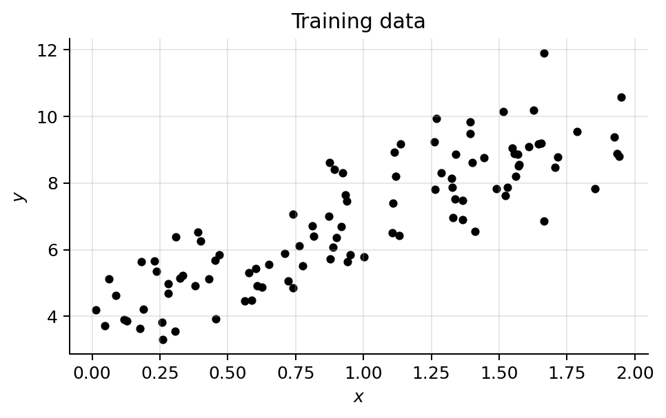
2. The loss function
For each example the residual is \(r^{(i)} = h_{\boldsymbol{\theta}}(\mathbf{x}^{(i)}) - y^{(i)}\). We use the mean squared error (the \(\tfrac12\) only makes derivatives cleaner, it does not move the minimum):
\[ J(\boldsymbol{\theta}) = \frac{1}{2m}\sum_{i=1}^m \big(\boldsymbol{\theta}^\top\mathbf{x}^{(i)} - y^{(i)}\big)^2 = \frac{1}{2m}\,\lVert \mathbf{X}\boldsymbol{\theta} - \mathbf{y}\rVert^2 = \frac{1}{2m}(\mathbf{X}\boldsymbol{\theta} - \mathbf{y})^\top(\mathbf{X}\boldsymbol{\theta} - \mathbf{y}). \]
Minimising this \(J\) is called ordinary least squares (OLS). Why squares?
- They penalise positive and negative errors equally and large errors a lot.
- \(J\) is smooth and convex (section 8) so it is easy to minimise.
- It is exactly what maximum likelihood gives if the noise is Gaussian (section 10).
Downside: because errors are squared, a few outliers can dominate the fit. (Alternatives: absolute error, Huber loss; section 15.7.)
Warm-up: one parameter, no intercept
If the vectors and matrices below feel like too much, start here. Everything in sections 3–8 is this same argument written with matrices.
Take the simplest model possible: one feature and no intercept,
\[ h_\theta(x) = \theta\, x . \]
Now \(\theta\) is a single number, so the loss is an ordinary function of one variable that you can draw.
The loss is a parabola. Expand the square \((\theta x^{(i)} - y^{(i)})^2 = \theta^2 (x^{(i)})^2 - 2\theta\,x^{(i)}y^{(i)} + (y^{(i)})^2\) and sum:
\[ J(\theta) = \frac{1}{2m}\sum_{i=1}^m \big(\theta x^{(i)} - y^{(i)}\big)^2 = \frac{1}{2m}\Big( S_{xx}\,\theta^2 \;-\; 2\,S_{xy}\,\theta \;+\; S_{yy} \Big), \qquad S_{xx} = \sum_i \big(x^{(i)}\big)^2,\;\; S_{xy} = \sum_i x^{(i)} y^{(i)},\;\; S_{yy} = \sum_i \big(y^{(i)}\big)^2 . \]
\(S_{xx}, S_{xy}, S_{yy}\) are just numbers computed from the data. So \(J(\theta) = A\theta^2 + B\theta + C\) with \(A = S_{xx}/(2m) > 0\) (as long as not every \(x^{(i)}\) is 0): a parabola that opens upward.
Try it. Three points \((1,1)\), \((2,3)\), \((3,7)\), so \(S_{xx} = 1+4+9 = 14\), \(S_{xy} = 1\cdot1+2\cdot3+3\cdot7 = 28\) and \(S_{yy} = 1+9+49 = 59\). With \(m=3\), \(\frac{1}{2m} = \frac16\) and the loss is \(J(\theta) = \frac16\big(14\theta^2 - 56\theta + 59\big)\). Drag \(\theta\): the orange squares are the squared residuals, and \(J(\theta)\) is half their average area. The black segment on the right is the tangent to the parabola, with slope \(J'(\theta)\). The bottom is at \(\theta^* = 28/14 = 2\), where \(J = 0.5\) and the slope is \(0\).
The captions check out by hand: \(J(0.5) = \frac16(3.5 - 28 + 59) = 5.75\) and \(J(3) = \frac16(126 - 168 + 59) = \frac{17}{6} = 2.83\).
Derivative and its zero. At the bottom of the bowl the slope is zero. Differentiate term by term:
\[ \begin{aligned} J'(\theta) &= \frac{1}{2m}\sum_{i=1}^m 2\big(\theta x^{(i)} - y^{(i)}\big)\,x^{(i)} && \text{chain rule: } \tfrac{d}{d\theta}(\theta x - y)^2 = 2(\theta x - y)\cdot x\\ &= \frac{1}{m}\sum_{i=1}^m \big(\theta x^{(i)} - y^{(i)}\big)\,x^{(i)} && \text{the 2 cancels the } \tfrac12\\ &= \frac{1}{m}\Big(\theta\sum_{i=1}^m \big(x^{(i)}\big)^2 - \sum_{i=1}^m x^{(i)}y^{(i)}\Big) = \frac{1}{m}\big(S_{xx}\,\theta - S_{xy}\big) && \text{split the sum; } \theta \text{ is the same in every term} \end{aligned} \]
\[ J'(\theta^*) = 0 \;\Longleftrightarrow\; \boxed{\theta^* = \frac{S_{xy}}{S_{xx}} = \frac{\sum_i x^{(i)} y^{(i)}}{\sum_i (x^{(i)})^2}} \]
With the three points, \(\theta^* = 28/14 = 2\) and \(J(2) = \frac16\big[(2-1)^2 + (4-3)^2 + (6-7)^2\big] = \frac36 = 0.5\) (the three errors are \(+1\), \(+1\), \(-1\)). No iterations are needed: this is a closed-form solution.
Why is \(\theta^*\) a minimum and not a maximum? Three ways to see it:
Second derivative. \(J''(\theta) = S_{xx}/m > 0\) for every \(\theta\) (for the three points, \(J'' = 14/3\)). The slope \(J'\) is always increasing, so it is negative to the left of \(\theta^*\) (going downhill) and positive to the right (going uphill). \(\theta^*\) is the bottom of the valley.
Completing the square (no calculus needed). \[ J(\theta) = J(\theta^*) + \frac{S_{xx}}{2m}\,(\theta - \theta^*)^2 . \] The second term is \(\ge 0\) and equals 0 only at \(\theta = \theta^*\). So \(J(\theta) \ge J(\theta^*)\) for every \(\theta\): global minimum, and it is unique.
Convexity from the definition. For any two points \(u, v\) and \(t\in[0,1]\), the linear terms of the parabola cancel and one gets \[ t\,J(u) + (1-t)\,J(v) - J\big(tu + (1-t)v\big) = \frac{S_{xx}}{2m}\; t(1-t)\,(u - v)^2 \;\ge\; 0 . \] The chord is always above the curve, so \(J\) is convex. (Also: each term \((\theta x^{(i)} - y^{(i)})^2\) is an upward parabola, and a sum of convex functions is convex.)
Why convexity is the key ingredient. “Derivative = 0” alone does not mean minimum: \(-\theta^2\) has \(J'(0)=0\) at a maximum, and \(\theta^3\) has \(J'(0)=0\) at neither. It is the convexity (\(J'' \ge 0\)) that guarantees the flat point is the bottom. A non-convex function can have several valleys, and a method that only looks for a zero slope can get stuck in a local one:
Gradient descent in 1D. Instead of solving \(J'(\theta)=0\), walk downhill: \(\theta_{t+1} = \theta_t - \alpha J'(\theta_t)\), where \(\alpha > 0\) is the learning rate. How fast does the error \(e_t = \theta_t - \theta^*\) shrink?
\[ \begin{aligned} J'(\theta_t) &= \tfrac{1}{m}\big(S_{xx}\theta_t - S_{xy}\big) = \tfrac{S_{xx}}{m}\big(\theta_t - \theta^*\big) && S_{xy} = S_{xx}\theta^* \text{ by the boxed formula}\\ e_{t+1} = \theta_{t+1} - \theta^* &= \theta_t - \theta^* - \alpha\,\tfrac{S_{xx}}{m}\big(\theta_t - \theta^*\big) && \text{subtract } \theta^* \text{ from the update}\\ &= \Big(1 - \alpha\,\tfrac{S_{xx}}{m}\Big)\,e_t . \end{aligned} \]
Every step multiplies the error by \(1 - \alpha J''\). It shrinks iff \(|1 - \alpha J''| < 1\), i.e. \(0 < \alpha < 2/J'' = 2m/S_{xx}\). For the three points \(J'' = 14/3\), so gradient descent converges iff \(\alpha < 3/7 \approx 0.43\), and \(\alpha = 3/14\) lands on \(\theta^* = 2\) in one step.
Try it. Here \(J(\theta) = \tfrac12(\theta-2)^2\), so the curvature is \(S_{xx}/m = J'' = 1\) and every step multiplies the error by \(1-\alpha\): gradient descent converges iff \(0 < \alpha < 2\). With \(\alpha = 1\) it lands on the minimum in one step; between \(1\) and \(2\) it overshoots but still converges; above \(2\) it diverges.
Dictionary: one parameter → general case
| one parameter, \(h = \theta x\) | general, \(h = \boldsymbol{\theta}^\top\mathbf{x}\) | |
|---|---|---|
| parameters | \(\theta\) (a number) | \(\boldsymbol{\theta}\) (a vector) |
| “size” of the inputs | \(S_{xx} = \sum_i (x^{(i)})^2\) | \(\mathbf{X}^\top\mathbf{X}\) |
| inputs × targets | \(S_{xy} = \sum_i x^{(i)}y^{(i)}\) | \(\mathbf{X}^\top\mathbf{y}\) |
| slope / gradient | \(J'(\theta) = \frac1m(S_{xx}\theta - S_{xy})\) | \(\nabla J = \frac1m(\mathbf{X}^\top\mathbf{X}\boldsymbol{\theta} - \mathbf{X}^\top\mathbf{y})\) |
| curvature | \(J'' = S_{xx}/m > 0\) | Hessian \(\frac1m\mathbf{X}^\top\mathbf{X}\) is PSD |
| solution | \(\theta^* = S_{xy}/S_{xx}\) | \(\boldsymbol{\theta}^* = (\mathbf{X}^\top\mathbf{X})^{-1}\mathbf{X}^\top\mathbf{y}\) |
| needs | \(S_{xx} \ne 0\) (not all \(x = 0\)) | \(\mathbf{X}^\top\mathbf{X}\) invertible (independent columns) |
| GD is stable iff | \(\alpha < 2 / (S_{xx}/m)\) | \(\alpha < 2 / \lambda_{\max}(\frac1m\mathbf{X}^\top\mathbf{X})\) |
Dividing by \(S_{xx}\) becomes multiplying by \((\mathbf{X}^\top\mathbf{X})^{-1}\), and “the second derivative is positive” becomes “the Hessian is positive semi-definite”.
# Warm-up data: y = 3 x + noise, model h(x) = theta * x (no intercept)
rng_w = np.random.default_rng(0)
xw = rng_w.uniform(0, 2, 30)
yw = 3 * xw + rng_w.normal(0, 0.5, 30)
mw = len(xw)
Sxx, Sxy, Syy = xw @ xw, xw @ yw, yw @ yw
J1 = lambda t: (Sxx * t**2 - 2 * Sxy * t + Syy) / (2 * mw) # J(theta)
dJ1 = lambda t: (Sxx * t - Sxy) / mw # J'(theta)
theta_star = Sxy / Sxx
print(f"theta* = Sxy/Sxx = {theta_star:.4f} (np.linalg.lstsq: {np.linalg.lstsq(xw[:, None], yw, rcond=None)[0][0]:.4f})")
print(f"J''(theta) = Sxx/m = {Sxx / mw:.3f} > 0 -> convex; GD stable iff alpha < {2 * mw / Sxx:.3f}")
# a few GD steps on the parabola
t, steps = 0.0, [0.0]
for _ in range(6):
t = t - 0.4 * dJ1(t); steps.append(t)
steps = np.array(steps)
th = np.linspace(0, 6, 300)
fig, axes = plt.subplots(1, 3, figsize=(14, 3.8))
axes[0].scatter(xw, yw, s=15, color="k"); xs = np.linspace(0, 2, 10)
axes[0].plot(xs, theta_star * xs, "C3", lw=2, label=rf"$h(x)={theta_star:.2f}\,x$")
axes[0].set_xlabel("$x$"); axes[0].set_ylabel("$y$"); axes[0].legend(); axes[0].set_title("Data and best line through 0")
axes[1].plot(th, J1(th), "k", lw=2)
for t0 in [1.0, 5.0]: # tangent lines: slope < 0 on the left, > 0 on the right
tt = np.linspace(t0 - 0.8, t0 + 0.8, 2)
axes[1].plot(tt, J1(t0) + dJ1(t0) * (tt - t0), "C0" if t0 < theta_star else "C1", lw=1.5,
label=rf"slope at $\theta$={t0:g}: {dJ1(t0):+.2f}")
axes[1].plot(steps, J1(steps), "r.-", ms=8, label="GD steps from 0")
axes[1].plot(theta_star, J1(theta_star), "*", color="C3", ms=14, label=r"$\theta^*$: slope 0")
axes[1].set_xlabel(r"$\theta$"); axes[1].set_ylabel(r"$J(\theta)$"); axes[1].legend(fontsize=8)
axes[1].set_title(r"$J(\theta)$ is an upward parabola")
axes[2].plot(th, dJ1(th), "k", lw=2); axes[2].axhline(0, color="gray", lw=1)
axes[2].fill_between(th, dJ1(th), 0, where=th < theta_star, color="C0", alpha=0.2, label=r"$J'<0$: go right")
axes[2].fill_between(th, dJ1(th), 0, where=th > theta_star, color="C1", alpha=0.2, label=r"$J'>0$: go left")
axes[2].axvline(theta_star, color="C3", ls="--", lw=1)
axes[2].set_xlabel(r"$\theta$"); axes[2].set_ylabel(r"$J'(\theta)$"); axes[2].legend(fontsize=8)
axes[2].set_title(r"$J'$ is increasing and crosses 0 once")
plt.tight_layout(); plt.show()theta* = Sxy/Sxx = 3.0940 (np.linalg.lstsq: 3.0940)
J''(theta) = Sxx/m = 1.544 > 0 -> convex; GD stable iff alpha < 1.296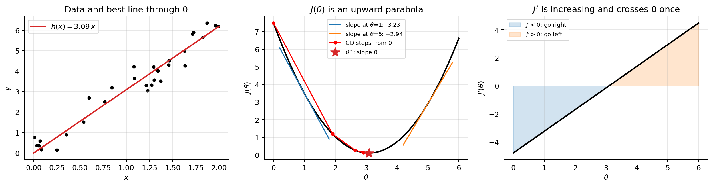
3. Two matrix-calculus facts
The gradient \(\nabla_{\boldsymbol{\theta}} J\) is the vector of partial derivatives \(\big(\partial J/\partial\theta_0, \dots, \partial J/\partial\theta_n\big)^\top\). We only need two rules.
Fact 1. For a constant vector \(\mathbf{a}\): \(\;\nabla_{\boldsymbol{\theta}}\,(\mathbf{a}^\top\boldsymbol{\theta}) = \mathbf{a}\).
Proof. \(\mathbf{a}^\top\boldsymbol{\theta} = \sum_k a_k\theta_k\), so \(\partial/\partial\theta_j = a_j\). \(\blacksquare\)
Fact 2. For a constant symmetric matrix \(\mathbf{A}\): \(\;\nabla_{\boldsymbol{\theta}}\,(\boldsymbol{\theta}^\top\mathbf{A}\boldsymbol{\theta}) = 2\mathbf{A}\boldsymbol{\theta}\).
Proof. \(\boldsymbol{\theta}^\top\mathbf{A}\boldsymbol{\theta} = \sum_k\sum_l \theta_k A_{kl}\theta_l\). Differentiating w.r.t. \(\theta_j\) picks the terms with \(k=j\) and those with \(l=j\): \(\sum_l A_{jl}\theta_l + \sum_k \theta_k A_{kj} = 2\sum_l A_{jl}\theta_l = 2(\mathbf{A}\boldsymbol{\theta})_j\) using \(A_{kj} = A_{jk}\). \(\blacksquare\)
4. The gradient of \(J\)
Expand the quadratic form:
\[ 2m\,J(\boldsymbol{\theta}) = \boldsymbol{\theta}^\top\mathbf{X}^\top\mathbf{X}\boldsymbol{\theta} - 2\,(\mathbf{X}^\top\mathbf{y})^\top\boldsymbol{\theta} + \mathbf{y}^\top\mathbf{y}. \]
\(\mathbf{X}^\top\mathbf{X}\) is symmetric, so by Facts 1 and 2:
\[ \boxed{\nabla_{\boldsymbol{\theta}} J(\boldsymbol{\theta}) = \frac{1}{m}\mathbf{X}^\top(\mathbf{X}\boldsymbol{\theta} - \mathbf{y})} \qquad\text{i.e.}\qquad \frac{\partial J}{\partial \theta_j} = \frac{1}{m}\sum_{i=1}^m \big(h_{\boldsymbol{\theta}}(\mathbf{x}^{(i)}) - y^{(i)}\big)\,x^{(i)}_j . \]
The component form also follows directly, one rule per line:
\[ \begin{aligned} \frac{\partial J}{\partial\theta_j} &= \frac{1}{2m}\sum_{i=1}^m\frac{\partial}{\partial\theta_j}\big(h_{\boldsymbol{\theta}}(\mathbf{x}^{(i)}) - y^{(i)}\big)^2 && \text{the derivative of a sum is the sum of the derivatives}\\ &= \frac{1}{m}\sum_{i=1}^m\big(h_{\boldsymbol{\theta}}(\mathbf{x}^{(i)}) - y^{(i)}\big)\,\frac{\partial h_{\boldsymbol{\theta}}(\mathbf{x}^{(i)})}{\partial\theta_j} && \text{chain rule } (u^2)' = 2u\,u'\text{; the 2 cancels the }\tfrac12\\ &= \frac{1}{m}\sum_{i=1}^m\big(h_{\boldsymbol{\theta}}(\mathbf{x}^{(i)}) - y^{(i)}\big)\,x^{(i)}_j && h_{\boldsymbol{\theta}} = \textstyle\sum_k\theta_kx_k \text{, so } \partial h_{\boldsymbol{\theta}}/\partial\theta_j = x_j \end{aligned} \]
Reading it: each example pushes \(\boldsymbol{\theta}\) proportionally to its error times its input. Examples that are already well predicted barely contribute. With one feature and no intercept it is the \(J'(\theta)\) of the warm-up.
def J(theta, X, y):
r = X @ theta - y
return (r @ r) / (2 * len(y))
def grad_J(theta, X, y):
return X.T @ (X @ theta - y) / len(y)
# check the analytic gradient against finite differences
theta_test = np.array([1.0, -2.0]); eps = 1e-6
num = np.array([(J(theta_test + eps * e, X, y) - J(theta_test - eps * e, X, y)) / (2 * eps) for e in np.eye(2)])
print("analytic :", grad_J(theta_test, X, y))
print("numerical:", num)analytic : [-7.85318134 -9.13831664]
numerical: [-7.85318134 -9.13831664]5. Batch gradient descent
The gradient points in the direction of steepest increase of \(J\). So take small steps in the opposite direction:
\[ \boldsymbol{\theta} \leftarrow \boldsymbol{\theta} - \alpha\,\nabla_{\boldsymbol{\theta}} J(\boldsymbol{\theta}) = \boldsymbol{\theta} - \frac{\alpha}{m}\mathbf{X}^\top(\mathbf{X}\boldsymbol{\theta} - \mathbf{y}), \qquad\text{i.e.}\qquad \theta_j \leftarrow \theta_j - \alpha\,\frac{1}{m}\sum_{i=1}^{m}\big(h_{\boldsymbol{\theta}}(\mathbf{x}^{(i)})-y^{(i)}\big)\,x_j^{(i)}\quad (j = 0,\dots,n). \]
Why does a small step decrease \(J\)? First-order Taylor expansion: \(J(\boldsymbol{\theta} - \alpha\mathbf{g}) \approx J(\boldsymbol{\theta}) - \alpha\,\mathbf{g}^\top\mathbf{g} = J(\boldsymbol{\theta}) - \alpha\lVert\mathbf{g}\rVert^2 < J(\boldsymbol{\theta})\) whenever \(\mathbf{g}\neq 0\) and \(\alpha\) is small.
Algorithm (batch GD) 1. Initialise \(\boldsymbol{\theta}\) (e.g. zeros or random values; for a strictly convex \(J\) the start does not change the answer). 2. Repeat until \(J\) stops decreasing (or for a fixed number of iterations): compute the gradient using all \(m\) examples, update all \(\theta_j\) simultaneously (compute every \(\partial J/\partial\theta_j\) with the old \(\boldsymbol{\theta}\) before changing any of them).
Batch means every step uses the full training set. Variants: stochastic GD uses one random example per step, mini-batch GD uses a small random subset (e.g. 32–512). They are noisier per step but much cheaper, and they are what is used for large \(m\) and in deep learning.
Try it. Batch gradient descent with \(\alpha = 0.08\) on 300 points generated around \(y = 6 + 2.3x\), starting from \(\boldsymbol{\theta} = (0, 0)\), where \(J = 21.80\). Move the iteration slider: after 1 step \(\boldsymbol{\theta} = (0.47, 0.22)\) and \(J = 18.60\); after 5 steps \(J = 10.09\); after 20 steps \(\boldsymbol{\theta} = (4.80, 1.99)\) and \(J = 1.92\); after 80 steps \(\boldsymbol{\theta} = (5.96, 2.32)\) and \(J = 1.19\), practically the least-squares solution \((5.969, 2.326)\) with \(J = 1.188\). The steps get smaller as the gradient shrinks near the minimum.
def gradient_descent(X, y, alpha, n_iters, theta0=None):
theta = np.zeros(X.shape[1]) if theta0 is None else theta0.astype(float).copy()
path, costs = [theta.copy()], [J(theta, X, y)]
for _ in range(n_iters):
theta = theta - alpha * grad_J(theta, X, y)
path.append(theta.copy()); costs.append(J(theta, X, y))
return theta, np.array(path), np.array(costs)
theta_gd, path, costs = gradient_descent(X, y, alpha=0.3, n_iters=300)
print("theta from gradient descent:", theta_gd.round(3))
T0, T1 = np.meshgrid(np.linspace(-1, 9, 200), np.linspace(-1, 7, 200))
Jgrid = np.array([[J(np.array([a, b]), X, y) for a, b in zip(r0, r1)] for r0, r1 in zip(T0, T1)])
fig, axes = plt.subplots(1, 3, figsize=(14, 3.8))
axes[0].contour(T0, T1, Jgrid, levels=np.logspace(-0.5, 1.8, 20), cmap="viridis")
axes[0].plot(path[:, 0], path[:, 1], "r.-", ms=4)
axes[0].set_xlabel(r"$\theta_0$"); axes[0].set_ylabel(r"$\theta_1$"); axes[0].set_title("Contours of $J$ and the GD path")
axes[1].plot(costs); axes[1].set_yscale("log"); axes[1].set_xlabel("iteration"); axes[1].set_title(r"$J(\theta)$ per iteration")
axes[2].scatter(x, y, s=12, color="k"); xs = np.linspace(0, 2, 10)
axes[2].plot(xs, theta_gd[0] + theta_gd[1] * xs, "C3", lw=2); axes[2].set_title("Fitted line")
plt.tight_layout(); plt.show()theta from gradient descent: [3.949 3.038]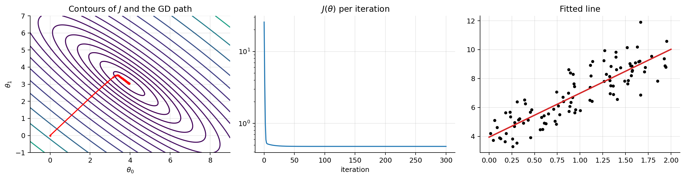
With two parameters \(J(\theta_0, \theta_1)\) is still a bowl: its contour lines are ellipses around the minimum, and gradient descent crosses them at right angles.
6. The learning rate \(\alpha\)
- Too small: converges, but needs many iterations.
- Too large: overshoots the minimum; \(J\) oscillates or grows (divergence).
fig, axes = plt.subplots(1, 2, figsize=(12, 3.8))
for a, c in zip([0.02, 0.3, 0.9, 1.02], ["C0", "C2", "C1", "C3"]):
_, p, cst = gradient_descent(X, y, alpha=a, n_iters=40)
axes[0].plot(cst, color=c, marker=".", label=rf"$\alpha$={a}")
if a in (0.02, 0.9):
axes[1].plot(p[:, 0], p[:, 1], ".-", color=c, label=rf"$\alpha$={a}")
axes[0].set_yscale("log"); axes[0].set_xlabel("iteration"); axes[0].set_ylabel("$J$"); axes[0].legend()
axes[0].set_title(r"Effect of $\alpha$ on convergence")
axes[1].contour(T0, T1, Jgrid, levels=np.logspace(-0.5, 1.8, 20), cmap="viridis", alpha=0.6)
axes[1].legend(); axes[1].set_title("small $\\alpha$ crawls; large $\\alpha$ zig-zags")
axes[1].set_xlabel(r"$\theta_0$"); axes[1].set_ylabel(r"$\theta_1$")
plt.tight_layout(); plt.show()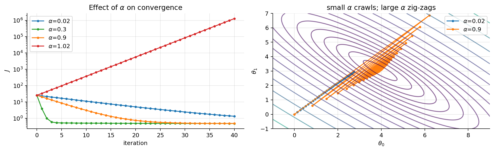
How to make sure gradient descent is working. Plot \(J\) against the iteration number. \(J\) must decrease at every step; if it ever goes up, \(\alpha\) is too large (or there is a bug in the gradient: check it against finite differences, as in section 4). If it decreases very slowly, \(\alpha\) is too small. In practice, try values on a roughly ×3 grid (0.001, 0.003, 0.01, 0.03, …) and keep one where the loss still falls fast, about 10× smaller than the value where it blows up:
How large can \(\alpha\) be? (proof)
Let \(\mathbf{H} = \frac{1}{m}\mathbf{X}^\top\mathbf{X}\) and let \(\boldsymbol{\theta}^*\) be the minimiser, which satisfies \(\mathbf{X}^\top\mathbf{X}\boldsymbol{\theta}^* = \mathbf{X}^\top\mathbf{y}\) (section 7). Then the gradient can be written as
\[ \nabla J(\boldsymbol{\theta}) = \tfrac{1}{m}(\mathbf{X}^\top\mathbf{X}\boldsymbol{\theta} - \mathbf{X}^\top\mathbf{y}) = \mathbf{H}(\boldsymbol{\theta} - \boldsymbol{\theta}^*). \]
Define the error \(\mathbf{e}_t = \boldsymbol{\theta}_t - \boldsymbol{\theta}^*\). The update becomes
\[ \mathbf{e}_{t+1} = \mathbf{e}_t - \alpha\mathbf{H}\mathbf{e}_t = (\mathbf{I} - \alpha\mathbf{H})\,\mathbf{e}_t \quad\Rightarrow\quad \mathbf{e}_t = (\mathbf{I} - \alpha\mathbf{H})^t\,\mathbf{e}_0 . \]
\(\mathbf{H}\) is symmetric, so it has orthonormal eigenvectors \(\mathbf{v}_k\) with eigenvalues \(\lambda_k \ge 0\). Along \(\mathbf{v}_k\) the error is multiplied by \((1-\alpha\lambda_k)\) at every step. It shrinks to 0 iff \(|1-\alpha\lambda_k| < 1\) for all \(k\) with \(\lambda_k>0\), i.e.
\[ \boxed{0 < \alpha < \frac{2}{\lambda_{\max}(\mathbf{H})}}. \]
Two consequences: - The slowest direction is the one with the smallest eigenvalue: it shrinks by \((1-\alpha\lambda_{\min})\) per step. With the largest safe \(\alpha \approx 1/\lambda_{\max}\) that is \((1 - \lambda_{\min}/\lambda_{\max})\). When the ratio \(\kappa = \lambda_{\max}/\lambda_{\min}\) (condition number) is large, GD is slow: the contours are long thin ellipses and GD zig-zags across them. - Feature scaling fixes this. If features are on very different scales (e.g. age in years and income in euros), \(\kappa\) is huge. Standardising each feature, \(\tilde{x}_j = (x_j - \mu_j)/\sigma_j\), makes the contours much rounder.
Try it. Gradient descent on a quadratic bowl whose Hessian has eigenvalues \(1\) and \(25\) (\(\kappa = 25\)), and on the same bowl after scaling (eigenvalues \(1\) and \(1.6\), \(\kappa = 1.6\)). The axes are the two eigen-directions of the error \(\boldsymbol{\theta} - \boldsymbol{\theta}^*\). Both runs use \(\alpha = 1.6/\lambda_{\max}\) and stop when the error is 1 % of its initial size. Without scaling, the steep direction is multiplied by \(1 - 1.6 = -0.6\) per step (the zig-zag) and the flat one by only \(1 - 1.6/25 = 0.936\): 70 steps. After scaling, one direction is solved in a single step (factor \(0\)) and the other shrinks by \(0.6\) per step: 6 steps.
H = X.T @ X / m
lam = np.linalg.eigvalsh(H)
print(f"eigenvalues of H: {lam.round(3)} -> alpha must be < {2/lam.max():.3f} (1.02 diverged, 0.9 did not)")
# Feature scaling: same problem with x measured in "thousandths" (x * 1000)
Xbig = np.c_[np.ones(m), 1000 * x]
Xstd = np.c_[np.ones(m), (x - x.mean()) / x.std()]
for name, M in [("raw x", X), ("x*1000", Xbig), ("standardised x", Xstd)]:
l = np.linalg.eigvalsh(M.T @ M / m)
print(f"{name:>15}: condition number = {l.max()/l.min():12.1f}")eigenvalues of H: [0.141 2.103] -> alpha must be < 0.951 (1.02 diverged, 0.9 did not)
raw x: condition number = 14.9
x*1000: condition number = 5220238.7
standardised x: condition number = 1.07. The normal equation
Matrix notation. Stack the targets, the parameters and the examples:
\[ \mathbf{y}=\begin{pmatrix}y^{(1)}\\ \vdots\\ y^{(m)}\end{pmatrix}_{m\times1},\qquad \boldsymbol{\theta}=\begin{pmatrix}\theta_0\\ \vdots\\ \theta_n\end{pmatrix}_{(n+1)\times1},\qquad \mathbf{X}=\begin{pmatrix}(\mathbf{x}^{(1)})^\top\\ \vdots\\ (\mathbf{x}^{(m)})^\top\end{pmatrix}=\begin{pmatrix}1&x_1^{(1)}&\cdots&x_n^{(1)}\\ \vdots&\vdots&\ddots&\vdots\\ 1&x_1^{(m)}&\cdots&x_n^{(m)}\end{pmatrix}_{m\times(n+1)} . \]
Then \(\hat{\mathbf{y}} = \mathbf{X}\boldsymbol{\theta}\) (row \(i\) is \((\mathbf{x}^{(i)})^\top\boldsymbol{\theta}\)) and the error vector is \(\mathbf{y} - \mathbf{X}\boldsymbol{\theta}\). Drop the positive constant \(\frac{1}{2m}\) (it does not move the minimum) and work with \(\tilde J = 2m\,J\):
\[ \begin{aligned} \tilde J(\boldsymbol{\theta}) &= (\mathbf{y}-\mathbf{X}\boldsymbol{\theta})^\top(\mathbf{y}-\mathbf{X}\boldsymbol{\theta}) && \text{sum of squared errors}\\ &= \mathbf{y}^\top\mathbf{y}-\mathbf{y}^\top\mathbf{X}\boldsymbol{\theta}-\boldsymbol{\theta}^\top\mathbf{X}^\top\mathbf{y}+\boldsymbol{\theta}^\top\mathbf{X}^\top\mathbf{X}\boldsymbol{\theta} && \text{multiply out, using } (\mathbf{X}\boldsymbol{\theta})^\top = \boldsymbol{\theta}^\top\mathbf{X}^\top\\ \nabla_{\boldsymbol{\theta}}\tilde J &= \mathbf{0}-\mathbf{X}^\top\mathbf{y}-\mathbf{X}^\top\mathbf{y}+2\mathbf{X}^\top\mathbf{X}\boldsymbol{\theta} && \mathbf{y}^\top\mathbf{X}\boldsymbol{\theta} = (\mathbf{X}^\top\mathbf{y})^\top\boldsymbol{\theta} = \boldsymbol{\theta}^\top\mathbf{X}^\top\mathbf{y}\text{: Fact 1; last term: Fact 2}\\ &= -2\mathbf{X}^\top\mathbf{y}+2\mathbf{X}^\top\mathbf{X}\boldsymbol{\theta}, && \text{which is } 2m \text{ times the gradient of section 4.} \end{aligned} \]
Since \(J\) is a smooth convex function (section 8), \(\boldsymbol{\theta}^*\) is a minimiser iff the gradient is zero:
\[ \frac{1}{m}\mathbf{X}^\top(\mathbf{X}\boldsymbol{\theta} - \mathbf{y}) = \mathbf{0} \;\Longleftrightarrow\; \mathbf{X}^\top\mathbf{X}\,\boldsymbol{\theta} = \mathbf{X}^\top\mathbf{y} \quad(\text{the "normal equations"}). \]
If \(\mathbf{X}^\top\mathbf{X}\) is invertible:
\[ \boxed{\boldsymbol{\theta}^* = (\mathbf{X}^\top\mathbf{X})^{-1}\mathbf{X}^\top\mathbf{y}} \]
Check with the simple model (one feature, no intercept): \(\mathbf{X}\) is the column of \(x\)’s, so \(\mathbf{X}^\top\mathbf{X} = \sum_i (x^{(i)})^2 = S_{xx}\) and \(\mathbf{X}^\top\mathbf{y} = S_{xy}\): the formula gives back \(\theta^* = S_{xy}/S_{xx}\).
Worked example with an intercept. The three points \((1,1)\), \((2,3)\), \((3,7)\) with the model \(\theta_0 + \theta_1 x\):
\[ \begin{aligned} \mathbf{X}^\top\mathbf{X} &= \begin{pmatrix} m & \sum x\\ \sum x & \sum x^2\end{pmatrix} = \begin{pmatrix} 3 & 6\\ 6 & 14\end{pmatrix}, \qquad \mathbf{X}^\top\mathbf{y} = \begin{pmatrix}\sum y\\ \sum xy\end{pmatrix} = \begin{pmatrix} 11\\ 28\end{pmatrix} && \text{column of ones and column of } x\\ (\mathbf{X}^\top\mathbf{X})^{-1} &= \frac{1}{3\cdot14 - 6\cdot6}\begin{pmatrix} 14 & -6\\ -6 & 3\end{pmatrix} = \frac16\begin{pmatrix} 14 & -6\\ -6 & 3\end{pmatrix} && 2\times2 \text{ inverse: swap the diagonal, negate the rest, divide by the determinant}\\ \boldsymbol{\theta}^* &= \frac16\begin{pmatrix} 14\cdot11 - 6\cdot28\\ -6\cdot11 + 3\cdot28\end{pmatrix} = \frac16\begin{pmatrix} -14\\ 18\end{pmatrix} = \begin{pmatrix} -7/3\\ 3\end{pmatrix}. && \text{multiply} \end{aligned} \]
The fitted values are \(\hat{\mathbf{y}} = (2/3,\ 11/3,\ 20/3)\) and the residuals \(\mathbf{y} - \hat{\mathbf{y}} = (1/3,\ -2/3,\ 1/3)\). With an intercept the best slope is 3 (not 2): the line no longer has to pass through the origin.
Geometric meaning (“normal” = perpendicular). The equations say \(\mathbf{X}^\top(\mathbf{y} - \mathbf{X}\boldsymbol{\theta}^*) = \mathbf{0}\): the residual vector is perpendicular to every column of \(\mathbf{X}\). So \(\hat{\mathbf{y}} = \mathbf{X}\boldsymbol{\theta}^*\) is the orthogonal projection of \(\mathbf{y}\) onto the space spanned by the columns of \(\mathbf{X}\), the closest point in that space to \(\mathbf{y}\). A consequence (first column of ones): \(\sum_i r^{(i)} = 0\), the residuals of a model with intercept average to zero. In the worked example, \(\frac13 - \frac23 + \frac13 = 0\) (column of ones) and \(1\cdot\frac13 - 2\cdot\frac23 + 3\cdot\frac13 = 0\) (column of \(x\)).
When is \(\mathbf{X}^\top\mathbf{X}\) invertible? Exactly when the columns of \(\mathbf{X}\) are linearly independent (proof in section 8). It fails if \(m < n+1\) or if a feature is a linear combination of others (e.g. duplicated feature, or all one-hot columns plus the intercept, section 11). Then there are infinitely many minimisers; use the pseudo-inverse (np.linalg.lstsq, which returns the minimum-norm one) or add L2 regularisation (note 03).
Normal equation vs. gradient descent
| Normal equation | Gradient descent | |
|---|---|---|
| Hyperparameters | none | \(\alpha\), number of iterations |
| Cost | \(O(mn^2 + n^3)\) once | \(O(mn)\) per iteration |
| Good when | \(n\) up to a few thousand (slow beyond \(n \approx 10\,000\)) | \(n\) or \(m\) very large, streaming data |
| Generalises to other losses | no (only squared loss has a closed form) | yes (logistic, softmax, neural nets…) |
In practice, never form the inverse explicitly; solve the linear system (np.linalg.solve) or use np.linalg.lstsq (QR/SVD), which is numerically more stable.
theta_ne = np.linalg.solve(X.T @ X, X.T @ y)
theta_ls = np.linalg.lstsq(X, y, rcond=None)[0]
print("normal equation :", theta_ne.round(4))
print("lstsq :", theta_ls.round(4))
print("gradient descent:", theta_gd.round(4))
res = y - X @ theta_ne
print("X^T (y - X theta*) =", (X.T @ res).round(10), " <- residual orthogonal to the columns of X")
X3, y3 = np.array([[1, 1], [1, 2], [1, 3.0]]), np.array([1, 3, 7.0]) # the three points, with intercept
print("three points :", np.linalg.solve(X3.T @ X3, X3.T @ y3).round(4), " (-7/3 = -2.3333, 3)")normal equation : [3.9487 3.0383]
lstsq : [3.9487 3.0383]
gradient descent: [3.9487 3.0383]
X^T (y - X theta*) = [0. 0.] <- residual orthogonal to the columns of X
three points : [-2.3333 3. ] (-7/3 = -2.3333, 3)8. Convexity
Definition. \(J\) is convex if for any two points and any \(t\in[0,1]\): \(J\big(t\boldsymbol{\theta}_a + (1-t)\boldsymbol{\theta}_b\big) \le t\,J(\boldsymbol{\theta}_a) + (1-t)\,J(\boldsymbol{\theta}_b)\): the chord lies above the graph (“bowl shape”).
Why we care. For a convex differentiable function, every point with zero gradient is a global minimum. There are no bad local minima and no saddle points, so gradient descent (with a valid \(\alpha\)) finds the global optimum from any starting point.
Second-order test. A twice-differentiable \(J\) is convex iff its Hessian \(\nabla^2 J\) (matrix of second derivatives, the multi-parameter \(J''\)) is positive semi-definite (PSD) everywhere: \(\mathbf{v}^\top\nabla^2 J\,\mathbf{v} \ge 0\) for every \(\mathbf{v}\). If it is positive definite (\(>0\) for \(\mathbf{v}\ne 0\)), \(J\) is strictly convex and the minimum is unique.
Proof that MSE is convex. Differentiate the gradient \(\frac{1}{m}(\mathbf{X}^\top\mathbf{X}\boldsymbol{\theta} - \mathbf{X}^\top\mathbf{y})\) once more:
\[ \nabla^2 J = \frac{1}{m}\mathbf{X}^\top\mathbf{X} \quad(\text{constant: } J \text{ is a quadratic bowl}). \]
(Without the \(\frac{1}{2m}\), as in the slides, the Hessian of \(\tilde J\) is \(2\mathbf{X}^\top\mathbf{X}\): a positive multiple, same conclusions.) For any \(\mathbf{v}\): \(\;\mathbf{v}^\top\mathbf{X}^\top\mathbf{X}\mathbf{v} = (\mathbf{X}\mathbf{v})^\top(\mathbf{X}\mathbf{v}) = \lVert\mathbf{X}\mathbf{v}\rVert^2 \ge 0\). So \(J\) is convex. \(\blacksquare\)
It is strictly convex iff \(\lVert\mathbf{X}\mathbf{v}\rVert^2 > 0\) for every \(\mathbf{v}\neq 0\), i.e. iff \(\mathbf{X}\mathbf{v}\neq\mathbf{0}\) for \(\mathbf{v}\neq 0\), which is the definition of linearly independent columns. The same condition makes \(\mathbf{X}^\top\mathbf{X}\) invertible (a PD matrix has no zero eigenvalue), which justifies the normal-equation formula.
from mpl_toolkits.mplot3d import Axes3D # noqa: F401
fig = plt.figure(figsize=(11, 4))
ax = fig.add_subplot(1, 2, 1, projection="3d")
ax.plot_surface(T0, T1, Jgrid, cmap="viridis", alpha=0.9, linewidth=0)
ax.set_xlabel(r"$\theta_0$"); ax.set_ylabel(r"$\theta_1$"); ax.set_title(r"$J(\theta)$: a convex quadratic bowl")
# Degenerate case: duplicated feature -> flat valley (convex but not strictly)
Xdup = np.c_[x, x]
A, B = np.meshgrid(np.linspace(-2, 8, 200), np.linspace(-2, 8, 200))
Jdup = np.array([[J(np.array([a, b]), Xdup, 3 * x) for a, b in zip(ra, rb)] for ra, rb in zip(A, B)])
ax2 = fig.add_subplot(1, 2, 2)
ax2.contour(A, B, Jdup, levels=30, cmap="viridis")
ax2.plot([-2, 5], [5, -2], "r--", lw=1, label=r"all minimisers: $\theta_1+\theta_2=3$")
ax2.set_xlabel(r"$\theta_1$"); ax2.set_ylabel(r"$\theta_2$"); ax2.legend(loc="upper right")
ax2.set_title("Duplicated feature: $X^TX$ singular, a valley of minima")
plt.tight_layout(); plt.show()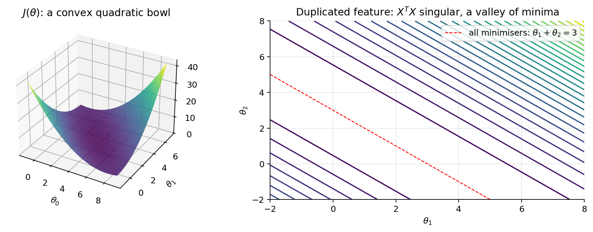
9. Newton’s method
Gradient descent uses only the slope. Newton’s method also uses the curvature. Near the current guess \(\boldsymbol{\theta}_{\text{old}}\), replace \(J\) by its second-order Taylor expansion (write \(\mathbf{g} = \nabla J(\boldsymbol{\theta}_{\text{old}})\) and \(\mathbf{H}_J = \nabla^2 J(\boldsymbol{\theta}_{\text{old}})\), a symmetric matrix):
\[ J(\boldsymbol{\theta}) \approx q(\boldsymbol{\theta}) = J(\boldsymbol{\theta}_{\text{old}}) + \mathbf{g}^\top(\boldsymbol{\theta}-\boldsymbol{\theta}_{\text{old}}) + \tfrac12(\boldsymbol{\theta}-\boldsymbol{\theta}_{\text{old}})^\top\mathbf{H}_J(\boldsymbol{\theta}-\boldsymbol{\theta}_{\text{old}}), \]
and jump to the minimum of this quadratic model:
\[ \begin{aligned} \nabla q(\boldsymbol{\theta}) &= \mathbf{g} + \mathbf{H}_J(\boldsymbol{\theta}-\boldsymbol{\theta}_{\text{old}}) = \mathbf{0} && \text{Facts 1 and 2 with } \mathbf{d} = \boldsymbol{\theta}-\boldsymbol{\theta}_{\text{old}}\\ \Rightarrow\quad \boldsymbol{\theta}_{\text{new}} &= \boldsymbol{\theta}_{\text{old}} - \big[\nabla^2 J(\boldsymbol{\theta}_{\text{old}})\big]^{-1}\nabla J(\boldsymbol{\theta}_{\text{old}}) . && \text{multiply by } \mathbf{H}_J^{-1} \end{aligned} \]
In one dimension this is \(\theta_{\text{new}} = \theta_{\text{old}} - J'(\theta_{\text{old}})/J''(\theta_{\text{old}})\): a gradient step with the learning rate \(1/J''\).
For least squares it converges in one step. Plug in the gradient (section 4) and the Hessian (section 8):
\[ \begin{aligned} \boldsymbol{\theta}_{\text{new}} &= \boldsymbol{\theta}_{\text{old}} - \Big(\tfrac1m\mathbf{X}^\top\mathbf{X}\Big)^{-1}\tfrac1m\big(\mathbf{X}^\top\mathbf{X}\boldsymbol{\theta}_{\text{old}} - \mathbf{X}^\top\mathbf{y}\big) && \nabla J \text{ and } \nabla^2 J\text{; the Hessian does not depend on } \boldsymbol{\theta}\\ &= \boldsymbol{\theta}_{\text{old}} - \underbrace{(\mathbf{X}^\top\mathbf{X})^{-1}\mathbf{X}^\top\mathbf{X}}_{=\,\mathbf{I}}\,\boldsymbol{\theta}_{\text{old}} + (\mathbf{X}^\top\mathbf{X})^{-1}\mathbf{X}^\top\mathbf{y} && \text{the } \tfrac1m \text{ cancel; distribute}\\ &= (\mathbf{X}^\top\mathbf{X})^{-1}\mathbf{X}^\top\mathbf{y}. && \text{the } \boldsymbol{\theta}_{\text{old}} \text{ terms cancel} \end{aligned} \]
(With the slides’ \(\tilde J\), gradient \(-2\mathbf{X}^\top\mathbf{y} + 2\mathbf{X}^\top\mathbf{X}\boldsymbol{\theta}\) and Hessian \(2\mathbf{X}^\top\mathbf{X}\), the factors 2 cancel in the same way.) The starting point disappears: from any \(\boldsymbol{\theta}_{\text{old}}\), one Newton step lands exactly on the normal-equation solution. The reason is that \(J\) is exactly quadratic, so the Taylor model \(q\) is not an approximation but \(J\) itself. In the warm-up: \(\theta_{\text{new}} = \theta_{\text{old}} - \frac{(14\theta_{\text{old}} - 28)/3}{14/3} = \theta_{\text{old}} - (\theta_{\text{old}} - 2) = 2\).
Newton vs gradient descent. In the eigen-directions of section 6, gradient descent multiplies the error along \(\mathbf{v}_k\) by \(1-\alpha\lambda_k\) with one \(\alpha\) for all directions; Newton effectively uses \(\alpha_k = 1/\lambda_k\) in each direction, which makes every factor 0. That is why Newton is immune to bad conditioning and to feature scaling. The price is forming and solving an \((n+1)\times(n+1)\) system, \(O(mn^2 + n^3)\), which is impractical for \(n\) beyond about \(10\,000\). For losses that are not quadratic (logistic regression, note 02) the Hessian changes with \(\boldsymbol{\theta}\), and Newton needs several iterations, usually very few.
def newton_step(theta, X, y):
g = grad_J(theta, X, y) # (1/m) X^T (X theta - y)
Hess = X.T @ X / len(y) # (1/m) X^T X, the same everywhere
return theta - np.linalg.solve(Hess, g)
theta_start = np.random.default_rng(3).normal(0, 10, 2)
theta_nt = newton_step(theta_start, X, y)
print("random start :", theta_start.round(3), f" J = {J(theta_start, X, y):.2f}")
print("one Newton step :", theta_nt.round(4), f" J = {J(theta_nt, X, y):.4f}")
print("normal equation :", theta_ne.round(4))
print(f"a second step moves theta by {np.abs(newton_step(theta_nt, X, y) - theta_nt).max():.1e}")
theta_big = newton_step(np.zeros(2), Xbig, y) # the badly scaled design of section 6
print(f"x*1000 design, one step: slope = {theta_big[1]:.6f} = {theta_ne[1]:.4f}/1000 (GD would crawl here)")random start : [ 20.409 -25.557] J = 186.38
one Newton step : [3.9487 3.0383] J = 0.4794
normal equation : [3.9487 3.0383]
a second step moves theta by 7.9e-14
x*1000 design, one step: slope = 0.003038 = 3.0383/1000 (GD would crawl here)10. Least squares = maximum likelihood
Probabilistic model. Assume the data were generated as
\[ y^{(i)} = \boldsymbol{\theta}^\top\mathbf{x}^{(i)} + \varepsilon^{(i)}, \qquad \varepsilon^{(i)} \overset{\text{i.i.d.}}{\sim} \mathcal{N}(0,\sigma^2), \]
i.e. \(y^{(i)} \mid \mathbf{x}^{(i)} \sim \mathcal{N}(\boldsymbol{\theta}^\top\mathbf{x}^{(i)}, \sigma^2)\) with density
\[ p(y^{(i)}\mid\mathbf{x}^{(i)};\boldsymbol{\theta}) = \frac{1}{\sqrt{2\pi}\,\sigma}\exp\!\left(-\frac{(y^{(i)} - \boldsymbol{\theta}^\top\mathbf{x}^{(i)})^2}{2\sigma^2}\right). \]
Maximum likelihood (MLE): choose the \(\boldsymbol{\theta}\) that makes the observed data most probable. Given \(\mathbf{X}\) and \(\boldsymbol{\theta}\), the probability density of the data is \(p(\mathbf{y}\mid\mathbf{X};\boldsymbol{\theta})\); as a function of \(\boldsymbol{\theta}\) it is the likelihood \(L(\boldsymbol{\theta})\). With independent examples it is a product,
\[ L(\boldsymbol{\theta}) = \prod_{i=1}^m p(y^{(i)}\mid\mathbf{x}^{(i)};\boldsymbol{\theta}) = \prod_{i=1}^m\frac{1}{\sqrt{2\pi}\,\sigma}\exp\!\left(-\frac{(y^{(i)} - \boldsymbol{\theta}^\top\mathbf{x}^{(i)})^2}{2\sigma^2}\right), \]
and it is easier to maximise its log (log is increasing, so the maximiser is the same; the log turns the product into a sum and cancels the exp):
\[ \log L(\boldsymbol{\theta}) = \sum_{i=1}^m \log p(y^{(i)}\mid\mathbf{x}^{(i)};\boldsymbol{\theta}) = \underbrace{-m\log(\sqrt{2\pi}\sigma)}_{\text{does not depend on }\boldsymbol{\theta}} \;-\; \frac{1}{2\sigma^2}\sum_{i=1}^m\big(y^{(i)} - \boldsymbol{\theta}^\top\mathbf{x}^{(i)}\big)^2 . \]
Maximising this over \(\boldsymbol{\theta}\) is the same as minimising the sum of squares, since the constant and the positive factor \(1/(2\sigma^2)\) don’t change the arg-min:
\[ \boxed{\arg\max_{\boldsymbol{\theta}} \log L(\boldsymbol{\theta}) = \arg\min_{\boldsymbol{\theta}} \sum_{i}\big(y^{(i)} - \boldsymbol{\theta}^\top\mathbf{x}^{(i)}\big)^2 = \arg\min_{\boldsymbol{\theta}} J(\boldsymbol{\theta})} \]
So least squares is not an arbitrary choice: it is the MLE when the noise is Gaussian with constant variance.
The MLE of \(\sigma^2\). Write \(\text{SSE} = \sum_i (y^{(i)} - \hat{\boldsymbol{\theta}}^\top\mathbf{x}^{(i)})^2\) for the sum of squared residuals at the optimum and \(-m\log(\sqrt{2\pi}\sigma) = -\frac m2\log(2\pi\sigma^2)\). Then
\[ \frac{\partial \log L}{\partial \sigma^2} = -\frac{m}{2\sigma^2} + \frac{\text{SSE}}{2\sigma^4} = 0 \quad\Longrightarrow\quad \hat\sigma^2_{\text{MLE}} = \frac{\text{SSE}}{m}, \]
the mean squared residual. It is slightly too small on average; section 14.5 shows that \(\text{SSE}/(m-n-1)\) is unbiased.
The same recipe, “write the likelihood of the labels, take minus the log”, gives the logistic regression loss (note 02), the softmax loss (note 04) and the whole family of generalised linear models (note 02b: Poisson regression for claim counts, Gamma regression for claim costs). Changing the noise model changes the loss: Laplace noise gives the absolute error \(\sum|r^{(i)}|\).
11. Feature engineering, encoding and scaling
The model is linear in \(\boldsymbol{\theta}\), but we decide what goes into \(\mathbf{x}\).
New features from old ones. If \(x_1\) is the length and \(x_2\) the width of a property, the area \(x_3 = x_1 x_2\) is probably a better predictor of the price than either: it is just a new column of the dataset. Polynomial regression adds \(x^2, x^3, \dots, x^p\); logarithmic regression uses \(\log x\) when each doubling of \(x\) adds a constant amount to \(y\) (diminishing returns). All of these are still linear regression, because the model is linear in the parameters whatever the features are. Section 15.1 shows how to detect that a transformation is needed.
Encoding categorical features. A model needs numbers. Two kinds of categorical variables:
- Ordinal (the categories have an order: bad < good < excellent). Ordinal encoding replaces the names by \(0, 1, \dots, C-1\) in that order (Bad → 0, Good → 1, Excellent → 2). In scikit-learn, give the order explicitly with the
categoriesargument ofOrdinalEncoder; otherwise it sorts the labels alphabetically. - Nominal (no order: cow, dog, cat). One-hot encoding creates one 0/1 column per category (Cow → [1,0,0], Dog → [0,1,0], Cat → [0,0,1]). Dummy encoding uses \(C-1\) columns (Cow → [1,0], Dog → [0,1], Cat → [0,0]): the same information, with the dropped category as the reference level.
The dummy trap. With an intercept, full one-hot encoding makes \(\mathbf{X}^\top\mathbf{X}\) singular. Every row has exactly one 1 among the one-hot columns \(d_1, \dots, d_C\), so \(d_1 + \dots + d_C = 1 = x_0\): the intercept column is the sum of the one-hot columns, the columns are linearly dependent, and by section 8 \(\mathbf{X}^\top\mathbf{X}\) is not invertible. Dropping one level fixes it; each remaining coefficient is then the difference between its level and the reference level. (Note 03 proves the rank deficiency in full and shows it in code.)
Which encoder when?
| The feature is… | Example | Use |
|---|---|---|
| ordered, with roughly equal steps | size S < M < L < XL; damage low < medium < high | ordinal: 0, 1, 2, 3 in that order |
| ordered, but the steps are very unequal | “0 / 1–2 / 3–5 / 6+ previous claims” | one-hot, or meaningful numbers (0, 1.5, 4, 7) |
| unordered, a few levels | colour, fuel type, city | one-hot (drop one level if the model has an intercept) |
| unordered, many levels | postcode, car model, workshop (1 000+) | group the rare levels; frequency or target encoding (note 03) |
| any categorical, tree models | (note 06) | ordinal codes are fine: a tree only asks “code ≤ 2?” |
What ordinal encoding tells a linear model: with size coded 0, 1, 2, 3 and price \(= \theta_0 + \theta_1\cdot\text{size}\), every step up adds the same \(\theta_1\), from S to M as from L to XL. One-hot gives every level its own coefficient: more flexible, but 3 parameters instead of 1. If the steps really are equal, ordinal is simpler and uses the data better. Never ordinal-encode an unordered feature for a linear model: “city = 3” is not three times “city = 1”. Fit the encoders on the training data only, and decide what happens with a level never seen in training (handle_unknown).
Feature scaling. Why: gradient descent converges faster (section 6), and penalties treat all features alike (section 12). Two common choices:
- Standardisation \(x' = (x-\mu)/\sigma\): mean 0 and standard deviation 1, no fixed range. The default for linear and logistic regression, SVMs, neural networks and any model with a penalty.
- Min–max normalisation \(x' = (x - x_{\min})/(x_{\max} - x_{\min}) \in [0,1]\): when a fixed range is needed (pixel intensities). One outlier squeezes all other values into a tiny range.
With outliers, standardisation suffers less than min–max and RobustScaler (median and interquartile range) least; trees need no scaling at all. Compute \(\min\), \(\max\), \(\mu\), \(\sigma\) on the training data only and reuse them on validation, test and production data. For unregularised least squares, scaling changes the coefficients but not the predictions (note 03 proves it); the gd2 widget of section 6 shows what it does to gradient descent.
12. Overfitting and regularisation: a preview
A polynomial of degree \(m-1\) passes exactly through \(m\) points, so \(J(\boldsymbol{\theta}) = 0\) on the training data. Is it a good model for new samples? Almost never: it has memorised the noise.
- Underfitting: too simple, high error everywhere (train and test).
- Just right: follows the pattern, not the noise.
- Overfitting: memorises the noise, fails on new samples.
Try it. Twenty noisy points from a sine curve, and 300 test points from the same curve. Move the degree: degree 1 is underfitting (train RMSE 0.500, test 0.548), degree 3 is just right (0.335 and 0.346), degree 15 overfits (train 0.214, test 3.873). Then, at degree 15, raise λ, the strength of an L2 penalty on the coefficients: at \(\lambda = 0.01\) the wiggles are tamed (train 0.231, test 0.427); at \(\lambda = 10\) it is too much and the curve flattens (train 0.502, test 0.598), back to underfitting. The widget calls a fit “underfitting” when the train RMSE is above 0.45 (the noise standard deviation is 0.3) and “overfitting” when the test RMSE is above 0.5.
Regularisation adds a penalty on the size of the weights to the cost (never on the intercept \(\theta_0\)):
- L2 (Ridge regression): \(J(\boldsymbol{\theta}) = \frac{1}{2m}\sum_{i=1}^m\big(h_{\boldsymbol{\theta}}(\mathbf{x}^{(i)})-y^{(i)}\big)^2 + \frac{\lambda}{2m}\sum_{j=1}^n\theta_j^2\). Shrinks all coefficients.
- L1 (Lasso regression): \(J(\boldsymbol{\theta}) = \frac{1}{2m}\sum_{i=1}^m\big(h_{\boldsymbol{\theta}}(\mathbf{x}^{(i)})-y^{(i)}\big)^2 + \lambda\sum_{j=1}^n|\theta_j|\). Forces some coefficients to be exactly zero (feature selection, a simpler model); not differentiable at 0.
- Elastic Net: a combination of the L1 and L2 penalties.
Note 03 derives all three slowly: the closed form of Ridge, why L1 gives exact zeros, the geometric picture, how to choose \(\lambda\) by cross-validation, and the Bayesian reading. (Books and libraries place the factors \(\frac12\) and \(\frac1m\) differently, e.g. scikit-learn’s Ridge minimises \(\sum_i(\cdot)^2 + \alpha\sum_j\theta_j^2\); that only rescales \(\lambda\).)
13. Metrics for regression
Metrics measure the performance of a model on validation and test data. Unlike losses, they do not need to be differentiable. With \(\hat{y}^{(i)}\) the predictions and \(\bar{y}\) the mean of the targets:
| Metric | Formula | Notes |
|---|---|---|
| MSE | \(\frac{1}{m}\sum (y^{(i)} - \hat{y}^{(i)})^2\) | what we optimise; big errors count much more (sensitive to outliers); units of \(y^2\) (€²), hard to read |
| RMSE | \(\sqrt{\text{MSE}}\) | ranks models exactly like MSE, but in the units of \(y\); always \(\ge\) MAE |
| MAE | \(\frac{1}{m}\sum \lvert y^{(i)} - \hat{y}^{(i)}\rvert\) | same units as \(y\) (“on average we are 12 k€ off”); every unit of error counts the same, robust to outliers |
| MAPE | \(\frac{100}{m}\sum \left\lvert \frac{y^{(i)} - \hat{y}^{(i)}}{y^{(i)}}\right\rvert\) | relative error in %; breaks if \(y\approx 0\) |
| \(R^2\) | \(1 - \frac{\sum (y^{(i)}-\hat{y}^{(i)})^2}{\sum (y^{(i)}-\bar{y})^2}\) | fraction of variance explained; no units |
| adjusted \(R^2\) | \(1 - (1-R^2)\frac{m-1}{m-n-1}\) | penalises adding useless features |
Worked example. Five houses, prices in k€:
| house | 1 | 2 | 3 | 4 | 5 |
|---|---|---|---|---|---|
| actual \(y\) | 200 | 150 | 300 | 250 | 100 |
| predicted \(\hat y\) | 210 | 140 | 280 | 260 | 110 |
| error \(y - \hat y\) | −10 | +10 | +20 | −10 | −10 |
\[ \begin{aligned} \text{MAE} &= \tfrac{10+10+20+10+10}{5} = 12, \qquad \text{MSE} = \tfrac{100+100+400+100+100}{5} = 160, \qquad \text{RMSE} = \sqrt{160} = 12.6,\\ \bar y &= 200,\qquad \textstyle\sum(y-\bar y)^2 = 0 + 2\,500 + 10\,000 + 2\,500 + 10\,000 = 25\,000,\qquad R^2 = 1 - \tfrac{800}{25\,000} = 0.968,\\ \text{MAPE} &= \tfrac{100}{5}\Big(\tfrac{10}{200}+\tfrac{10}{150}+\tfrac{20}{300}+\tfrac{10}{250}+\tfrac{10}{100}\Big) = 6.5\,\%. \end{aligned} \]
The baseline “always predict 200 (the mean)” has RMSE \(=\sqrt{25\,000/5} = 70.7\) and \(R^2 = 0\): the model is far better. Now predict house 5 at 200 instead of 100 (one error of \(-100\)): MAE \(= 150/5 = 30\) (×2.5), MSE \(= 10\,700/5 = 2\,140\), RMSE \(= 46.3\) (×3.7), \(R^2 = 1 - 10\,700/25\,000 = 0.572\), MAPE \(= 24.5\,\%\). One big error dominates RMSE, and MAPE jumps because the big error is on the cheapest house.
Why RMSE \(\ge\) MAE. Let \(a_i = |y^{(i)} - \hat y^{(i)}|\). Then
\[ \text{RMSE}^2 - \text{MAE}^2 = \frac1m\sum_i a_i^2 - \Big(\frac1m\sum_i a_i\Big)^2 = \frac1m\sum_i\big(a_i - \text{MAE}\big)^2 \;\ge\; 0, \]
(mean of the squares minus the square of the mean is the variance of the \(a_i\)). Equality holds only when all errors have the same size; the more unequal they are, the bigger the gap (12.6 vs 12 above, then 46.3 vs 30).
Interpreting \(R^2\). “How much of the variation of \(y\) is explained by the model”: compare the best predictor before knowing \(\mathbf{x}\) (the mean \(\bar y\); e.g. the average weight of a person) with the prediction after knowing it (the weight given the height). The denominator of \(R^2\) is the error of that dumbest model. So \(R^2 = 1\) is a perfect fit, \(R^2 = 0\) is no better than the mean, and on test data \(R^2\) can be negative (worse than the mean).
On the training data of a least-squares fit with an intercept, the total variation splits exactly into an explained and an unexplained part:
\[ \begin{aligned} y^{(i)} - \bar y &= (\hat y^{(i)} - \bar y) + e^{(i)}, \qquad e^{(i)} = y^{(i)} - \hat y^{(i)} && \text{add and subtract } \hat y^{(i)}\\ \sum_i (y^{(i)} - \bar y)^2 &= \sum_i (\hat y^{(i)} - \bar y)^2 + \sum_i (e^{(i)})^2 + 2\sum_i(\hat y^{(i)} - \bar y)\,e^{(i)} && \text{square and sum}\\ \sum_i \hat y^{(i)} e^{(i)} &= \boldsymbol{\theta}^{*\top}\mathbf{X}^\top\mathbf{e} = 0,\qquad \bar y\sum_i e^{(i)} = 0 && \text{normal equations (section 7): } \mathbf{X}^\top\mathbf{e} = \mathbf{0}\text{, first column of ones}\\ \underbrace{\textstyle\sum_i (y^{(i)} - \bar y)^2}_{\text{TSS (total)}} &= \underbrace{\textstyle\sum_i (\hat y^{(i)} - \bar y)^2}_{\text{ESS (explained)}} + \underbrace{\textstyle\sum_i (e^{(i)})^2}_{\text{SSE (unexplained)}} . && \text{the cross term vanishes} \end{aligned} \]
Hence \(R^2 = 1 - \text{SSE}/\text{TSS} = \text{ESS}/\text{TSS} \in [0,1]\) on the training data. Adding a feature can only lower SSE (the old solution is still available with the new coefficient at 0), so the training \(R^2\) never decreases, even for a column of pure noise: it cannot choose the features. That is why adjusted \(R^2\) exists (it only increases if the new feature helps enough) and why you should always look at validation metrics.
Which metric when?
| Metric | Read it as | Use it when | Careful |
|---|---|---|---|
| MAE | the typical error, in units of \(y\) (“12 k€”) | every unit of error costs the same; outliers in \(y\) | — |
| RMSE | like MAE, but big errors count more | a big mistake is much worse than several small ones | one outlier can dominate it |
| MAPE | the typical error in % | relative errors matter (sales of big and small shops) | explodes when some \(y\) are near 0 |
| \(R^2\) | the fraction of the variance explained | comparing across problems: it has no units | says nothing about the size of the errors in € |
Always compare with a baseline (predict the mean or the median for everyone; \(R^2\) does it for you) and report on validation or test data, in the units the business understands. Always look at a residual plot as well: a good model leaves residuals that look like structureless noise around 0 (section 15).
from sklearn.metrics import mean_squared_error, mean_absolute_error, r2_score, mean_absolute_percentage_error
# the five houses of the worked example
y5 = np.array([200, 150, 300, 250, 100.0])
for name, p5 in [("good predictions", np.array([210, 140, 280, 260, 110.0])),
("house 5 at 200 ", np.array([210, 140, 280, 260, 200.0]))]:
print(f"{name}: MAE {mean_absolute_error(y5, p5):.1f} RMSE {np.sqrt(mean_squared_error(y5, p5)):.1f} "
f"R2 {r2_score(y5, p5):.3f} MAPE {100 * mean_absolute_percentage_error(y5, p5):.1f} %")
x_new = rng.uniform(0, 2, 50); y_new = 4 + 3 * x_new + rng.normal(0, 1, 50)
X_new = np.c_[np.ones(50), x_new]
y_hat = X_new @ theta_ne
mse = np.mean((y_new - y_hat) ** 2)
r2 = 1 - np.sum((y_new - y_hat) ** 2) / np.sum((y_new - y_new.mean()) ** 2)
print(f"\nrunning example, 50 new points:")
print(f"MSE = {mse:.3f} (sklearn {mean_squared_error(y_new, y_hat):.3f})")
print(f"RMSE = {np.sqrt(mse):.3f}")
print(f"MAE = {np.mean(np.abs(y_new - y_hat)):.3f} (sklearn {mean_absolute_error(y_new, y_hat):.3f})")
print(f"R^2 = {r2:.3f} (sklearn {r2_score(y_new, y_hat):.3f})")
fig, axes = plt.subplots(1, 2, figsize=(11, 3.5))
axes[0].scatter(y_new, y_hat, s=15); lim = [y_new.min(), y_new.max()]
axes[0].plot(lim, lim, "k--", lw=1); axes[0].set_xlabel("true $y$"); axes[0].set_ylabel(r"predicted $\hat{y}$"); axes[0].set_title("Predicted vs. true")
axes[1].scatter(y_hat, y_new - y_hat, s=15); axes[1].axhline(0, color="k", lw=1)
axes[1].set_xlabel(r"$\hat{y}$"); axes[1].set_ylabel(r"residual $y-\hat{y}$"); axes[1].set_title("Residuals: no visible pattern = good")
plt.tight_layout(); plt.show()good predictions: MAE 12.0 RMSE 12.6 R2 0.968 MAPE 6.5 %
house 5 at 200 : MAE 30.0 RMSE 46.3 R2 0.572 MAPE 24.5 %
running example, 50 new points:
MSE = 1.015 (sklearn 1.015)
RMSE = 1.008
MAE = 0.762 (sklearn 0.762)
R^2 = 0.776 (sklearn 0.776)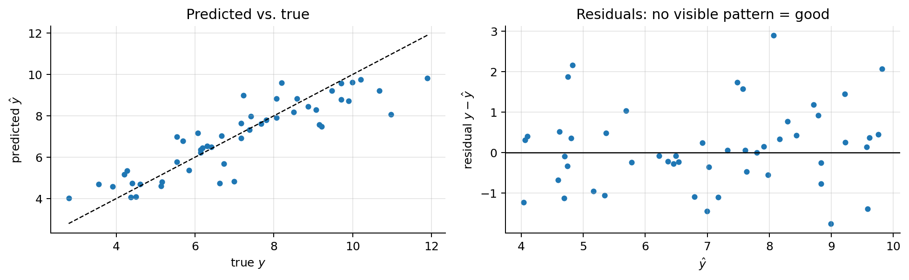
14. Statistical properties of the OLS estimator
So far \(\boldsymbol{\theta}^*\) was just the minimiser of \(J\). To say how reliable it is (how much it would change with another sample, how wide an interval around a prediction should be) we need a model of how the data were generated.
14.1 The model and two rules for random vectors
The classical linear model is
\[ \mathbf{y} = \mathbf{X}\boldsymbol{\theta} + \boldsymbol{\varepsilon}, \]
where \(\boldsymbol{\theta}\) is now the unknown true parameter vector and \(\boldsymbol{\varepsilon} = (\varepsilon^{(1)}, \dots, \varepsilon^{(m)})^\top\) the noise. We treat \(\mathbf{X}\) as fixed (every statement is conditional on the observed features) and assume
- (i) exogeneity: \(\mathbb{E}[\boldsymbol{\varepsilon}\mid\mathbf{X}] = \mathbf{0}\), the noise averages to zero whatever the features;
- (ii) spherical errors: \(\mathrm{Cov}(\boldsymbol{\varepsilon}\mid\mathbf{X}) = \sigma^2\mathbf{I}_m\), i.e. the same variance \(\sigma^2\) for every example (homoscedasticity) and no correlation between examples (independence);
- (iii) full rank: the columns of \(\mathbf{X}\) are linearly independent, so \(\mathbf{X}^\top\mathbf{X}\) is invertible (section 8).
Normality of \(\boldsymbol{\varepsilon}\) is added only in 14.6–14.7. Section 15 examines each assumption. Notation: \(p = n+1\) is the number of parameters, \(\hat{\boldsymbol{\theta}} = (\mathbf{X}^\top\mathbf{X})^{-1}\mathbf{X}^\top\mathbf{y}\) is the OLS estimate (the \(\boldsymbol{\theta}^*\) of section 7; the hat reminds us it is computed from a random sample), \(\mathbf{e} = \mathbf{y} - \mathbf{X}\hat{\boldsymbol{\theta}}\) are the residuals and \(\text{SSE} = \mathbf{e}^\top\mathbf{e}\).
For a random vector \(\mathbf{z}\), \(\mathrm{Cov}(\mathbf{z}) = \mathbb{E}\big[(\mathbf{z} - \mathbb{E}\mathbf{z})(\mathbf{z} - \mathbb{E}\mathbf{z})^\top\big]\): variances on the diagonal, covariances off it. For a constant matrix \(\mathbf{A}\) and vector \(\mathbf{b}\):
\[ \begin{aligned} \mathbb{E}[\mathbf{A}\mathbf{z} + \mathbf{b}] &= \mathbf{A}\,\mathbb{E}[\mathbf{z}] + \mathbf{b} && \text{linearity of expectation}\\ \mathrm{Cov}(\mathbf{A}\mathbf{z} + \mathbf{b}) &= \mathbb{E}\big[\mathbf{A}(\mathbf{z} - \mathbb{E}\mathbf{z})(\mathbf{z} - \mathbb{E}\mathbf{z})^\top\mathbf{A}^\top\big] = \mathbf{A}\,\mathrm{Cov}(\mathbf{z})\,\mathbf{A}^\top && \mathbf{A}\mathbf{z} + \mathbf{b} - \mathbb{E}[\cdot] = \mathbf{A}(\mathbf{z} - \mathbb{E}\mathbf{z})\text{; constants leave the expectation} \end{aligned} \]
14.2 The estimate is the truth plus weighted noise; unbiasedness
\[ \begin{aligned} \hat{\boldsymbol{\theta}} &= (\mathbf{X}^\top\mathbf{X})^{-1}\mathbf{X}^\top\mathbf{y} && \text{normal equation}\\ &= (\mathbf{X}^\top\mathbf{X})^{-1}\mathbf{X}^\top(\mathbf{X}\boldsymbol{\theta} + \boldsymbol{\varepsilon}) && \text{substitute the model}\\ &= (\mathbf{X}^\top\mathbf{X})^{-1}\mathbf{X}^\top\mathbf{X}\,\boldsymbol{\theta} + (\mathbf{X}^\top\mathbf{X})^{-1}\mathbf{X}^\top\boldsymbol{\varepsilon} && \text{distribute}\\ &= \boldsymbol{\theta} + (\mathbf{X}^\top\mathbf{X})^{-1}\mathbf{X}^\top\boldsymbol{\varepsilon} . && (\mathbf{X}^\top\mathbf{X})^{-1}\mathbf{X}^\top\mathbf{X} = \mathbf{I} \end{aligned} \]
Take expectations with \(\mathbf{X}\) fixed: \(\mathbb{E}[\hat{\boldsymbol{\theta}}\mid\mathbf{X}] = \boldsymbol{\theta} + (\mathbf{X}^\top\mathbf{X})^{-1}\mathbf{X}^\top\,\mathbb{E}[\boldsymbol{\varepsilon}\mid\mathbf{X}] = \boldsymbol{\theta}\) by (i):
\[ \boxed{\mathbb{E}[\hat{\boldsymbol{\theta}}] = \boldsymbol{\theta}}\qquad\text{(OLS is unbiased).} \]
Only (i) and (iii) were used: unbiasedness does not need constant variance, independence or normality. If (i) fails, the extra term does not average out: that is omitted-variable bias (section 15.6).
14.3 The covariance of the estimate
Write \(\mathbf{A} = (\mathbf{X}^\top\mathbf{X})^{-1}\mathbf{X}^\top\), so \(\hat{\boldsymbol{\theta}} = \boldsymbol{\theta} + \mathbf{A}\boldsymbol{\varepsilon}\):
\[ \begin{aligned} \mathrm{Cov}(\hat{\boldsymbol{\theta}}) &= \mathbf{A}\,\mathrm{Cov}(\boldsymbol{\varepsilon})\,\mathbf{A}^\top && \text{rule of 14.1; } \boldsymbol{\theta} \text{ is a constant}\\ &= \sigma^2\mathbf{A}\mathbf{A}^\top && \text{assumption (ii)}\\ &= \sigma^2(\mathbf{X}^\top\mathbf{X})^{-1}\mathbf{X}^\top\mathbf{X}(\mathbf{X}^\top\mathbf{X})^{-1} && \mathbf{A}^\top = \mathbf{X}(\mathbf{X}^\top\mathbf{X})^{-1}\text{, since } (\mathbf{X}^\top\mathbf{X})^{-1} \text{ is symmetric}\\ &= \sigma^2(\mathbf{X}^\top\mathbf{X})^{-1} . \end{aligned} \]
\[ \boxed{\mathrm{Cov}(\hat{\boldsymbol{\theta}}) = \sigma^2(\mathbf{X}^\top\mathbf{X})^{-1},\qquad \mathrm{Var}(\hat\theta_j) = \sigma^2\big[(\mathbf{X}^\top\mathbf{X})^{-1}\big]_{jj}} \]
One feature with intercept. \(\mathbf{X}^\top\mathbf{X} = \begin{pmatrix} m & \sum x\\ \sum x & \sum x^2\end{pmatrix}\), and the slope entry of its inverse is
\[ \big[(\mathbf{X}^\top\mathbf{X})^{-1}\big]_{11} = \frac{m}{m\sum_i x_i^2 - (\sum_i x_i)^2} = \frac{1}{\sum_i x_i^2 - m\bar x^2} = \frac{1}{\sum_i (x_i - \bar x)^2} \quad\Longrightarrow\quad \mathrm{Var}(\hat\theta_1) = \frac{\sigma^2}{\sum_i (x_i - \bar x)^2}, \]
(divide numerator and denominator by \(m\) and use \(\sum_i x_i = m\bar x\), then \(\sum_i(x_i - \bar x)^2 = \sum_i x_i^2 - m\bar x^2\)). The slope is precise when the noise is small, when there are many points and when the \(x\)’s are spread out. For the three points \(\sum_i (x_i - \bar x)^2 = 1 + 0 + 1 = 2\), so \(\mathrm{Var}(\hat\theta_1) = \sigma^2/2\), the \(\frac36\) entry of \((\mathbf{X}^\top\mathbf{X})^{-1}\) in section 7.
14.4 The hat matrix and the residuals
The fitted values are \(\hat{\mathbf{y}} = \mathbf{X}\hat{\boldsymbol{\theta}} = \mathbf{X}(\mathbf{X}^\top\mathbf{X})^{-1}\mathbf{X}^\top\mathbf{y} = \mathbf{H}\mathbf{y}\), with the hat matrix \(\mathbf{H} = \mathbf{X}(\mathbf{X}^\top\mathbf{X})^{-1}\mathbf{X}^\top\) (\(m\times m\); it “puts the hat on \(\mathbf{y}\)”). Its diagonal entries \(h_{ii} = (\mathbf{x}^{(i)})^\top(\mathbf{X}^\top\mathbf{X})^{-1}\mathbf{x}^{(i)}\) are the leverages (section 15.7). Four properties:
- symmetric: \(\mathbf{H}^\top = \mathbf{X}\big((\mathbf{X}^\top\mathbf{X})^{-1}\big)^\top\mathbf{X}^\top = \mathbf{H}\);
- idempotent: \(\mathbf{H}\mathbf{H} = \mathbf{X}(\mathbf{X}^\top\mathbf{X})^{-1}\underbrace{\mathbf{X}^\top\mathbf{X}(\mathbf{X}^\top\mathbf{X})^{-1}}_{\mathbf{I}}\mathbf{X}^\top = \mathbf{H}\) (projecting twice is projecting once);
- \(\mathbf{H}\mathbf{X} = \mathbf{X}\) (vectors already in the column space do not move);
- \(\mathrm{tr}(\mathbf{H}) = \mathrm{tr}\big((\mathbf{X}^\top\mathbf{X})^{-1}\mathbf{X}^\top\mathbf{X}\big) = \mathrm{tr}(\mathbf{I}_p) = p = n+1\), using the cyclic property \(\mathrm{tr}(\mathbf{U}\mathbf{V}) = \mathrm{tr}(\mathbf{V}\mathbf{U})\) with \(\mathbf{U} = \mathbf{X}\).
The same hold for \(\mathbf{I} - \mathbf{H}\) (symmetric, idempotent, \((\mathbf{I}-\mathbf{H})\mathbf{X} = \mathbf{0}\), trace \(m - p\)). The residuals are
\[ \mathbf{e} = \mathbf{y} - \mathbf{H}\mathbf{y} = (\mathbf{I}-\mathbf{H})(\mathbf{X}\boldsymbol{\theta} + \boldsymbol{\varepsilon}) = (\mathbf{I}-\mathbf{H})\boldsymbol{\varepsilon}, \qquad \mathrm{Cov}(\mathbf{e}) = \sigma^2(\mathbf{I}-\mathbf{H})(\mathbf{I}-\mathbf{H})^\top = \sigma^2(\mathbf{I}-\mathbf{H}) . \]
The residuals are the part of the noise the model could not absorb. They are not the errors: they are correlated with each other and \(\mathrm{Var}(e_i) = \sigma^2(1 - h_{ii}) < \sigma^2\). For the three points, \(h_{11} = (1,1)\,\frac16\begin{pmatrix}14&-6\\-6&3\end{pmatrix}\begin{pmatrix}1\\1\end{pmatrix} = \frac{14 - 12 + 3}{6} = \frac56\), and in the same way \(h_{22} = \frac{14 - 24 + 12}{6} = \frac13\), \(h_{33} = \frac{14 - 36 + 27}{6} = \frac56\): they sum to \(2 = p\).
14.5 An unbiased estimate of \(\sigma^2\)
\[ \begin{aligned} \text{SSE} = \mathbf{e}^\top\mathbf{e} &= \boldsymbol{\varepsilon}^\top(\mathbf{I}-\mathbf{H})^\top(\mathbf{I}-\mathbf{H})\boldsymbol{\varepsilon} = \boldsymbol{\varepsilon}^\top(\mathbf{I}-\mathbf{H})\boldsymbol{\varepsilon} && \text{symmetric and idempotent}\\ &= \mathrm{tr}\big(\boldsymbol{\varepsilon}^\top(\mathbf{I}-\mathbf{H})\boldsymbol{\varepsilon}\big) = \mathrm{tr}\big((\mathbf{I}-\mathbf{H})\boldsymbol{\varepsilon}\boldsymbol{\varepsilon}^\top\big) && \text{a number is its own trace; cyclic property}\\ \mathbb{E}[\text{SSE}] &= \mathrm{tr}\big((\mathbf{I}-\mathbf{H})\,\mathbb{E}[\boldsymbol{\varepsilon}\boldsymbol{\varepsilon}^\top]\big) && \text{trace and expectation are both linear}\\ &= \mathrm{tr}\big((\mathbf{I}-\mathbf{H})\,\sigma^2\mathbf{I}\big) = \sigma^2\,\mathrm{tr}(\mathbf{I}-\mathbf{H}) = \sigma^2(m - n - 1) . && \mathbb{E}[\boldsymbol{\varepsilon}\boldsymbol{\varepsilon}^\top] = \mathrm{Cov}(\boldsymbol{\varepsilon}) = \sigma^2\mathbf{I}\text{ by (i), (ii)} \end{aligned} \]
\[ \boxed{\hat\sigma^2 = \frac{\text{SSE}}{m - n - 1}\ \text{ is unbiased for } \sigma^2} \]
The MLE \(\text{SSE}/m\) of section 10 is too small on average by the factor \((m-n-1)/m\): the fit spends \(p = n+1\) degrees of freedom chasing the noise, so the residuals are smaller than the errors. For the three points, \(\text{SSE} = \frac19 + \frac49 + \frac19 = \frac23\) and \(m - n - 1 = 1\), so \(\hat\sigma^2 = \frac23\).
The cell below checks 14.2–14.5 by simulation: keep the running example’s \(\mathbf{X}\) (100 points), redraw the noise 5 000 times with \(\boldsymbol{\theta} = (4, 3)\) and \(\sigma = 1\), and refit each time.
from scipy import stats
def ols_fit(X, y):
"""Least squares with the quantities of section 14 (X includes the column of ones)."""
m, p = X.shape # p = n + 1 parameters
XtX_inv = np.linalg.inv(X.T @ X)
theta = XtX_inv @ X.T @ y
e = y - X @ theta # residuals
s2 = e @ e / (m - p) # unbiased estimate of sigma^2
h = np.einsum("ij,jk,ik->i", X, XtX_inv, X) # leverages h_ii
return dict(theta=theta, e=e, fit=X @ theta, s2=s2, se=np.sqrt(s2 * np.diag(XtX_inv)),
XtX_inv=XtX_inv, h=h, df=m - p)
f3 = ols_fit(X3, y3) # the three points, with intercept
print("three points: residuals", f3["e"].round(4), " h_ii", f3["h"].round(4), f" sum h = {f3['h'].sum():.0f}")
print(f" sigma^2_hat = {f3['s2']:.4f} SE(slope) = {f3['se'][1]:.4f}")
R, theta_true = 5000, np.array([4.0, 3.0])
A_ols = np.linalg.solve(X.T @ X, X.T) # (X^T X)^{-1} X^T, shape (2, m)
Y = (X @ theta_true)[:, None] + np.random.default_rng(1).normal(0, 1, (m, R)) # one dataset per column
TH = A_ols @ Y # one column of estimates per dataset
SSE = ((Y - X @ TH) ** 2).sum(axis=0)
print("\nmean of the 5000 estimates:", TH.mean(axis=1).round(4), " (truth [4, 3])")
print("empirical Cov(theta_hat) :", np.cov(TH).round(4).tolist())
print("sigma^2 (X^T X)^-1 :", np.linalg.inv(X.T @ X).round(4).tolist())
print(f"mean SSE/(m-n-1) = {SSE.mean() / (m - 2):.4f} mean SSE/m = {SSE.mean() / m:.4f} (sigma^2 = 1)")three points: residuals [ 0.3333 -0.6667 0.3333] h_ii [0.8333 0.3333 0.8333] sum h = 2
sigma^2_hat = 0.6667 SE(slope) = 0.5774
mean of the 5000 estimates: [4.0023 2.9954] (truth [4, 3])
empirical Cov(theta_hat) : [[0.0421, -0.0332], [-0.0332, 0.0339]]
sigma^2 (X^T X)^-1 : [[0.042, -0.0328], [-0.0328, 0.0337]]
mean SSE/(m-n-1) = 0.9969 mean SSE/m = 0.9770 (sigma^2 = 1)14.6 Standard errors, t statistics and confidence intervals
The standard error of \(\hat\theta_j\) is its estimated standard deviation, \(\text{SE}_j = \hat\sigma\sqrt{c_{jj}}\) with \(c_{jj} = [(\mathbf{X}^\top\mathbf{X})^{-1}]_{jj}\). To turn it into an interval with a known probability we now add normality: \(\boldsymbol{\varepsilon} \sim \mathcal{N}(\mathbf{0}, \sigma^2\mathbf{I})\). Three facts follow.
- \(\hat{\boldsymbol{\theta}} = \boldsymbol{\theta} + \mathbf{A}\boldsymbol{\varepsilon}\) is a linear function of a Gaussian vector, hence Gaussian: \(\hat{\boldsymbol{\theta}} \sim \mathcal{N}\big(\boldsymbol{\theta}, \sigma^2(\mathbf{X}^\top\mathbf{X})^{-1}\big)\), so \(Z = (\hat\theta_j - \theta_j)/(\sigma\sqrt{c_{jj}}) \sim \mathcal{N}(0,1)\).
- \(V = (m-p)\hat\sigma^2/\sigma^2 = \boldsymbol{\varepsilon}^\top(\mathbf{I}-\mathbf{H})\boldsymbol{\varepsilon}/\sigma^2 \sim \chi^2_{m-p}\). Why: \(\mathbf{I}-\mathbf{H}\) is symmetric and idempotent, so its eigenvalues satisfy \(\lambda^2 = \lambda\), i.e. are 0 or 1, and there are \(\mathrm{tr}(\mathbf{I}-\mathbf{H}) = m-p\) ones. Write \(\mathbf{I}-\mathbf{H} = \mathbf{Q}\boldsymbol{\Lambda}\mathbf{Q}^\top\) with \(\mathbf{Q}\) orthonormal and \(\mathbf{z} = \mathbf{Q}^\top\boldsymbol{\varepsilon}/\sigma\), which is again \(\mathcal{N}(\mathbf{0}, \mathbf{I})\) (covariance \(\mathbf{Q}^\top\mathbf{Q} = \mathbf{I}\)). Then \(V = \mathbf{z}^\top\boldsymbol{\Lambda}\mathbf{z}\) is a sum of \(m - p\) squared independent standard normals.
- \(Z\) and \(V\) are independent. Why: \(\hat{\boldsymbol{\theta}}\) and \(\mathbf{e}\) are jointly Gaussian and uncorrelated, \(\mathrm{Cov}(\mathbf{A}\boldsymbol{\varepsilon}, (\mathbf{I}-\mathbf{H})\boldsymbol{\varepsilon}) = \sigma^2\mathbf{A}(\mathbf{I}-\mathbf{H}) = \sigma^2(\mathbf{X}^\top\mathbf{X})^{-1}(\mathbf{X}^\top - \mathbf{X}^\top\mathbf{H}) = \mathbf{0}\) because \(\mathbf{X}^\top\mathbf{H} = (\mathbf{H}\mathbf{X})^\top = \mathbf{X}^\top\); for Gaussian vectors uncorrelated means independent, and \(\hat\sigma^2\) is a function of \(\mathbf{e}\) only.
A standard normal divided by the square root of an independent \(\chi^2_\nu/\nu\) has, by definition, a Student \(t\) distribution with \(\nu\) degrees of freedom. So
\[ t_j = \frac{\hat\theta_j - \theta_j}{\text{SE}_j} = \frac{(\hat\theta_j - \theta_j)/(\sigma\sqrt{c_{jj}})}{\sqrt{\hat\sigma^2/\sigma^2}} = \frac{Z}{\sqrt{V/(m-p)}} \;\sim\; t_{m-p}. \]
With \(t_{1-a/2,\,m-p}\) the \(1-a/2\) quantile of that distribution, \(P\big(|t_j| \le t_{1-a/2,\,m-p}\big) = 1 - a\), which rearranges into the confidence interval
\[ \boxed{\hat\theta_j \;\pm\; t_{1-a/2,\;m-n-1}\;\text{SE}_j} \]
(for 95 % intervals \(a = 0.05\) and the quantile is close to 2 once \(m - p\) is more than about 30). The t test of \(H_0: \theta_j = 0\) (“feature \(j\) has no effect given the others”) uses \(t = \hat\theta_j/\text{SE}_j\) and the p-value \(2\,P(T_{m-p} > |t|)\).
Worked example. For the three points, \(\text{SE}(\hat\theta_1) = \sqrt{\hat\sigma^2 c_{11}} = \sqrt{\frac23\cdot\frac12} = \sqrt{1/3} = 0.577\) and \(t = 3/0.577 = 5.20\). With \(m - p = 1\) degree of freedom the 97.5 % quantile is \(12.71\), so the 95 % interval is \(3 \pm 12.71\times0.577 = 3 \pm 7.34\), i.e. \((-4.34,\ 10.34)\): three points cannot pin down a slope, even though the fit looks good.
f = ols_fit(X, y) # the running example, m = 100
tq = stats.t.ppf(0.975, f["df"])
tstat = f["theta"] / f["se"]
pval = 2 * stats.t.sf(np.abs(tstat), f["df"])
for j in range(2):
lo, hi = f["theta"][j] - tq * f["se"][j], f["theta"][j] + tq * f["se"][j]
print(f"theta_{j}: {f['theta'][j]:.3f} SE {f['se'][j]:.3f} t {tstat[j]:6.2f} p {pval[j]:.1e} 95% CI [{lo:.3f}, {hi:.3f}]")
lr = stats.linregress(x, y)
print(f"scipy.stats.linregress: slope SE {lr.stderr:.3f}, intercept SE {lr.intercept_stderr:.3f}, p {lr.pvalue:.1e}")
se_sim = np.sqrt(SSE / (m - 2) * np.linalg.inv(X.T @ X)[1, 1]) # the slope's SE in each simulated dataset
covered = np.abs(TH[1] - 3) <= stats.t.ppf(0.975, m - 2) * se_sim
print(f"\n95% CIs (from the 5000 simulated datasets) that contain the true slope 3: {covered.mean():.1%}")
print(f"three points: t quantile (1 df) = {stats.t.ppf(0.975, 1):.3f}, CI = 3 +- {stats.t.ppf(0.975, 1) * f3['se'][1]:.2f}")theta_0: 3.949 SE 0.203 t 19.49 p 1.7e-35 95% CI [3.547, 4.351]
theta_1: 3.038 SE 0.182 t 16.72 p 1.8e-30 95% CI [2.678, 3.399]
scipy.stats.linregress: slope SE 0.182, intercept SE 0.203, p 1.8e-30
95% CIs (from the 5000 simulated datasets) that contain the true slope 3: 94.8%
three points: t quantile (1 df) = 12.706, CI = 3 +- 7.3414.7 Intervals for a prediction
Take a new input \(\mathbf{x}_0\) (with \(x_{0,0} = 1\)) and its prediction \(\hat y_0 = \mathbf{x}_0^\top\hat{\boldsymbol{\theta}}\). Define its leverage \(h_0 = \mathbf{x}_0^\top(\mathbf{X}^\top\mathbf{X})^{-1}\mathbf{x}_0\). There are two different questions.
Where is the average \(y\) at \(\mathbf{x}_0\)? The mean response is \(\mu_0 = \mathbf{x}_0^\top\boldsymbol{\theta}\). \(\mathbb{E}[\hat y_0] = \mathbf{x}_0^\top\mathbb{E}[\hat{\boldsymbol{\theta}}] = \mu_0\) and \(\mathrm{Var}(\hat y_0) = \mathbf{x}_0^\top\mathrm{Cov}(\hat{\boldsymbol{\theta}})\,\mathbf{x}_0 = \sigma^2 h_0\) (rule of 14.1 with \(\mathbf{A} = \mathbf{x}_0^\top\)).
Where will a new observation fall? \(y_0 = \mathbf{x}_0^\top\boldsymbol{\theta} + \varepsilon_0\), with \(\varepsilon_0\) independent of the training noise:
\[ \begin{aligned} y_0 - \hat y_0 &= \varepsilon_0 - \mathbf{x}_0^\top(\hat{\boldsymbol{\theta}} - \boldsymbol{\theta}) && \text{subtract}\\ \mathbb{E}[y_0 - \hat y_0] &= 0 && \text{both terms have mean zero}\\ \mathrm{Var}(y_0 - \hat y_0) &= \sigma^2 + \sigma^2 h_0 = \sigma^2(1 + h_0) && \text{independent terms: variances add} \end{aligned} \]
Under normality, the same argument as in 14.6 gives \(t\) distributions with \(m-p\) degrees of freedom, hence
\[ \boxed{\text{mean response: } \hat y_0 \pm t_{1-a/2,\,m-p}\;\hat\sigma\sqrt{h_0}\qquad\qquad \text{new observation: } \hat y_0 \pm t_{1-a/2,\,m-p}\;\hat\sigma\sqrt{1 + h_0}} \]
The second is the prediction interval, the one to quote with a forecast. For one feature, \(h_0\) has a simple form. With \(S = \sum_i(x_i - \bar x)^2\) and the inverse from 14.3, \((\mathbf{X}^\top\mathbf{X})^{-1} = \frac{1}{mS}\begin{pmatrix}\sum x^2 & -\sum x\\ -\sum x & m\end{pmatrix}\) (the determinant is \(m\sum x^2 - (\sum x)^2 = mS\)):
\[ \begin{aligned} h_0 &= \frac{\sum_i x_i^2 - 2x_0\sum_i x_i + m x_0^2}{mS} && \mathbf{x}_0 = (1, x_0)\text{, multiply out}\\ &= \frac{S + m\bar x^2 - 2m x_0\bar x + m x_0^2}{mS} = \frac{S + m(x_0 - \bar x)^2}{mS} && \textstyle\sum x^2 = S + m\bar x^2,\ \sum x = m\bar x\\ &= \frac1m + \frac{(x_0 - \bar x)^2}{\sum_i (x_i - \bar x)^2} . \end{aligned} \]
Both bands are narrowest at \(\bar x\) and widen quadratically away from it (extrapolation is expensive, section 15.8). As \(m\) grows the confidence band shrinks to zero, but the prediction band never gets narrower than \(\pm t\,\hat\sigma\): the noise of a single new observation is irreducible.
x0 = np.linspace(-1, 3, 200); X0 = np.c_[np.ones(200), x0]
h0 = np.einsum("ij,jk,ik->i", X0, f["XtX_inv"], X0)
band_ci, band_pi = tq * np.sqrt(f["s2"] * h0), tq * np.sqrt(f["s2"] * (1 + h0))
k_mid, k_out = np.argmin(np.abs(x0 - x.mean())), -1
print(f"half-width at x0 = x_bar = {x.mean():.2f}: mean response {band_ci[k_mid]:.3f}, new observation {band_pi[k_mid]:.3f}")
print(f"half-width at x0 = 3 (outside the data): mean response {band_ci[k_out]:.3f}, new observation {band_pi[k_out]:.3f}")
rng_p = np.random.default_rng(2) # 20 000 new points from the same process
xn = rng_p.uniform(0, 2, 20000); Xn = np.c_[np.ones(20000), xn]; yn = 4 + 3 * xn + rng_p.normal(0, 1, 20000)
hn = np.einsum("ij,jk,ik->i", Xn, f["XtX_inv"], Xn)
inside = np.abs(yn - Xn @ f["theta"]) <= tq * np.sqrt(f["s2"] * (1 + hn))
print(f"new observations inside their 95% prediction interval: {inside.mean():.1%}")
plt.figure(figsize=(7, 3.8))
plt.scatter(x, y, s=12, color="k", label="training data")
plt.plot(x0, X0 @ f["theta"], "C3", lw=2, label="fit")
plt.fill_between(x0, X0 @ f["theta"] - band_pi, X0 @ f["theta"] + band_pi, color="C0", alpha=0.15, label="95% prediction interval")
plt.fill_between(x0, X0 @ f["theta"] - band_ci, X0 @ f["theta"] + band_ci, color="C3", alpha=0.35, label="95% CI of the mean")
plt.axvspan(-1, 0, color="gray", alpha=0.1); plt.axvspan(2, 3, color="gray", alpha=0.1)
plt.xlabel("$x$"); plt.ylabel("$y$"); plt.legend(fontsize=8, loc="upper left"); plt.title("Both bands widen away from the data (grey: no data)")
plt.tight_layout(); plt.show()half-width at x0 = x_bar = 0.97: mean response 0.196, new observation 1.973
half-width at x0 = 3 (outside the data): mean response 0.757, new observation 2.104
new observations inside their 95% prediction interval: 95.2%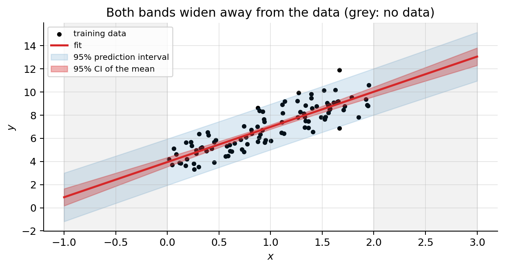
14.8 The Gauss–Markov theorem: what “BLUE” buys you
Theorem (Gauss–Markov). Under (i)–(iii) (no normality needed), let \(\tilde{\boldsymbol{\theta}} = \mathbf{C}\mathbf{y}\) be any estimator that is linear in \(\mathbf{y}\) (\(\mathbf{C}\) may depend on \(\mathbf{X}\) but not on \(\mathbf{y}\)) and unbiased for every \(\boldsymbol{\theta}\). Then \(\mathrm{Cov}(\tilde{\boldsymbol{\theta}}) - \mathrm{Cov}(\hat{\boldsymbol{\theta}})\) is positive semi-definite. In words, OLS is the Best Linear Unbiased Estimator (BLUE).
Proof. Write \(\mathbf{C} = (\mathbf{X}^\top\mathbf{X})^{-1}\mathbf{X}^\top + \mathbf{D}\), where \(\mathbf{D}\) is whatever makes \(\tilde{\boldsymbol{\theta}}\) differ from OLS.
\[ \begin{aligned} \mathbb{E}[\tilde{\boldsymbol{\theta}}] &= \mathbf{C}\mathbf{X}\boldsymbol{\theta} = \boldsymbol{\theta} + \mathbf{D}\mathbf{X}\boldsymbol{\theta} && \mathbb{E}[\mathbf{y}] = \mathbf{X}\boldsymbol{\theta}\text{ by (i)}\\ \text{unbiased for every } \boldsymbol{\theta} \;&\Longleftrightarrow\; \mathbf{D}\mathbf{X} = \mathbf{0} && \text{the extra term must vanish for all } \boldsymbol{\theta}\\ \mathrm{Cov}(\tilde{\boldsymbol{\theta}}) &= \sigma^2\mathbf{C}\mathbf{C}^\top && \text{rule of 14.1 and (ii)}\\ &= \sigma^2\big[(\mathbf{X}^\top\mathbf{X})^{-1} + (\mathbf{X}^\top\mathbf{X})^{-1}\mathbf{X}^\top\mathbf{D}^\top + \mathbf{D}\mathbf{X}(\mathbf{X}^\top\mathbf{X})^{-1} + \mathbf{D}\mathbf{D}^\top\big] && \text{multiply out } \mathbf{C}\mathbf{C}^\top\\ &= \sigma^2(\mathbf{X}^\top\mathbf{X})^{-1} + \sigma^2\mathbf{D}\mathbf{D}^\top && \mathbf{D}\mathbf{X} = \mathbf{0}\text{ and } \mathbf{X}^\top\mathbf{D}^\top = (\mathbf{D}\mathbf{X})^\top = \mathbf{0}\\ &= \mathrm{Cov}(\hat{\boldsymbol{\theta}}) + \sigma^2\mathbf{D}\mathbf{D}^\top . && \text{section 14.3} \end{aligned} \]
For any vector \(\mathbf{a}\), \(\mathbf{a}^\top\mathbf{D}\mathbf{D}^\top\mathbf{a} = \lVert\mathbf{D}^\top\mathbf{a}\rVert^2 \ge 0\), so the difference is PSD, and it is zero only if \(\mathbf{D} = \mathbf{0}\). \(\blacksquare\)
What it buys you. Taking \(\mathbf{a}\) as the \(j\)-th unit vector: every single coefficient has the smallest variance. Taking \(\mathbf{a} = \mathbf{x}_0\): every prediction \(\mathbf{x}_0^\top\boldsymbol{\theta}\) is estimated with the smallest variance. All of this without assuming normality.
What it does not buy you.
- It needs (ii). With heteroscedastic or correlated errors, OLS is no longer best; weighted or generalised least squares is (sections 15.2 and 15.3).
- “Linear” and “unbiased” are restrictions. A slightly biased estimator can have a much smaller mean squared error: Ridge regression (note 03) always beats OLS in mean squared error for a well-chosen \(\lambda\). A non-linear estimator (the Huber fit of section 15.7) can be far better when the noise has heavy tails. With Gaussian noise a stronger result holds (OLS has the smallest variance among all unbiased estimators, linear or not); we do not prove it here.
A competitor that loses. Wald’s grouping estimator splits the points at the median of \(x\) and uses the slope between the two group means, \(\tilde\theta_1 = (\bar y_{\text{upper}} - \bar y_{\text{lower}})/(\bar x_{\text{upper}} - \bar x_{\text{lower}})\). It is linear in \(\mathbf{y}\) and unbiased (the expected difference of the group means is \(\theta_1(\bar x_{\text{upper}} - \bar x_{\text{lower}})\), the intercepts cancel), so Gauss–Markov says it cannot beat OLS:
upper = x > np.median(x)
c = np.where(upper, 1 / upper.sum(), -1 / (~upper).sum()) / (x[upper].mean() - x[~upper].mean()) # theta_tilde = c @ y
wald = c @ Y # on the same 5000 simulated datasets
print(f"Wald estimator: mean {wald.mean():.4f} (unbiased), variance {wald.var():.4f} (theory sigma^2 * sum c_i^2 = {c @ c:.4f})")
print(f"OLS slope : mean {TH[1].mean():.4f}, variance {TH[1].var():.4f} (theory {np.linalg.inv(X.T @ X)[1, 1]:.4f})")Wald estimator: mean 2.9955 (unbiased), variance 0.0461 (theory sigma^2 * sum c_i^2 = 0.0452)
OLS slope : mean 2.9954, variance 0.0339 (theory 0.0337)15. Assumptions: what they mean, how to check them, what to do
The least-squares fit can always be computed. The assumptions decide what it means. It helps to separate two uses of a regression:
- Prediction: we only need \(\hat y\) to be accurate on new data from the same process. What matters is that the functional form is adequate (15.1), that the validation is honest (15.2), and, for prediction intervals, that the variance and the shape of the noise are right (15.3, 15.4).
- Inference and interpretation: we want to read the coefficients (“+1 year of age adds €… to the premium”), their standard errors, confidence intervals and p-values. This needs every assumption, and a causal reading needs exogeneity (15.6), which no residual plot can check.
| # | Assumption | What goes wrong if it fails | How to check | What to do |
|---|---|---|---|---|
| 1 | Linearity: \(\mathbb{E}[y\mid\mathbf{x}] = \boldsymbol{\theta}^\top\mathbf{x}\) | biased predictions in whole regions; coefficients meaningless; \(\hat\sigma\) inflated | residuals vs fitted and vs each feature; component-plus-residual plots; RESET test | transform features (\(\log\), polynomials, splines), interactions, a more flexible model |
| 2 | Independent errors | \(\hat{\boldsymbol{\theta}}\) still unbiased, but SEs too small, CIs too narrow; random-split validation optimistic | residuals vs time / order / group; lag plot; Durbin–Watson | time, lag or group features; GLS (quasi-differencing); cluster-robust or HAC SEs; time-based or grouped validation |
| 3 | Homoscedasticity: \(\mathrm{Var}(\varepsilon\mid\mathbf{x}) = \sigma^2\) | \(\hat{\boldsymbol{\theta}}\) unbiased but not efficient; SEs, CIs and prediction intervals wrong | residuals vs fitted (funnel), scale–location plot; Breusch–Pagan | \(\log y\) or Box–Cox; weighted least squares; HC (sandwich) SEs |
| 4 | Normal errors | small-sample \(t\) intervals approximate; prediction intervals wrong in the tails for any \(m\) | Q–Q plot; skewness, kurtosis; Shapiro–Wilk (with care) | usually nothing for \(\hat{\boldsymbol{\theta}}\); transform \(y\); empirical prediction intervals; robust loss for heavy tails |
| 5 | No perfect multicollinearity (and little collinearity) | perfect: \(\hat{\boldsymbol{\theta}}\) not unique; near: huge \(\mathrm{Var}(\hat\theta_j)\), sign flips; predictions fine | rank; VIF; condition number; bootstrap stability | drop or merge features, re-parametrise, centre polynomials, PCR, Ridge |
| 6 | Exogeneity: \(\mathbb{E}[\varepsilon\mid\mathbf{X}] = 0\) | \(\hat{\boldsymbol{\theta}}\) biased and inconsistent: no causal reading | not from residuals: domain knowledge, stability when adding controls | add the confounders; experiments; don’t read coefficients causally |
| 7 | No unduly influential points | one point can drag the whole fit | leverage \(h_{ii}\), studentised residuals, Cook’s distance | check for data errors; robust loss (Huber); report with and without |
| 8 | Interpolation, not extrapolation | predictions outside the data are unsupported | leverage of the new point vs the training leverages | flag, collect data, constrain the shape |
Items 1–6 are assumptions of the model; 7 and 8 are conditions for trusting a particular fit or a particular prediction. The helpers below are used throughout the section (ols_fit was defined in section 14.5).
def binned(x, y, bins=12):
"""Mean of y in quantile bins of x: a simple smoother to draw trend lines through residual plots."""
edges = np.quantile(x, np.linspace(0, 1, bins + 1))
idx = np.clip(np.searchsorted(edges, x, side="right") - 1, 0, bins - 1)
return (np.array([x[idx == b].mean() for b in range(bins)]),
np.array([y[idx == b].mean() for b in range(bins)]))
def f_test(X_small, X_big, y):
"""F test that the extra columns of X_big (a superset of X_small) do not improve the fit."""
s, b = ols_fit(X_small, y), ols_fit(X_big, y)
q = X_big.shape[1] - X_small.shape[1]
F = ((s["e"] @ s["e"] - b["e"] @ b["e"]) / q) / (b["e"] @ b["e"] / b["df"])
return F, stats.f.sf(F, q, b["df"])15.1 Linearity (correct functional form)
What it says. \(\mathbb{E}[y\mid\mathbf{x}] = \boldsymbol{\theta}^\top\mathbf{x}\): the average of \(y\) at each \(\mathbf{x}\) is a linear function of the features actually used (which may themselves be transformations of the raw inputs). Equivalently, the errors \(\varepsilon = y - \boldsymbol{\theta}^\top\mathbf{x}\) have mean zero at every \(\mathbf{x}\), not just on average.
Why it matters. Suppose the true mean is \(\mathbf{f} = (f(\mathbf{x}^{(1)}), \dots, f(\mathbf{x}^{(m)}))^\top\), not \(\mathbf{X}\boldsymbol{\theta}\). Substituting \(\mathbf{y} = \mathbf{f} + \boldsymbol{\varepsilon}\) in 14.2 and 14.4:
\[ \mathbb{E}[\hat{\boldsymbol{\theta}}] = (\mathbf{X}^\top\mathbf{X})^{-1}\mathbf{X}^\top\mathbf{f},\qquad \mathbb{E}[\mathbf{e}] = (\mathbf{I}-\mathbf{H})\,\mathbf{f} \neq \mathbf{0}. \]
OLS then estimates the best linear approximation of \(f\) for this particular spread of \(\mathbf{x}\)’s (the coefficients change if the \(\mathbf{x}\) distribution changes), and the residuals carry the systematic part \((\mathbf{I}-\mathbf{H})\mathbf{f}\) that the model cannot represent. Damage: predictions are biased in whole regions (too high in some, too low in others), which hurts prediction; “the effect of +1 unit of \(x_j\)” is not a single number any more, which hurts interpretation; and \(\hat\sigma^2\) absorbs the lack of fit, so intervals are also off.
How to check.
- Residuals vs fitted values, and vs each feature: a curve means missing structure; a healthy plot is a horizontal band with no shape. A smoother through the points (here, bin means) makes curvature easy to see.
- Component-plus-residual (partial residual) plot for feature \(j\): plot \(e_i + \hat\theta_j x_{ij}\) against \(x_{ij}\). This is \(y\) with the fitted effects of all the other features removed, so if the model is right it scatters around the straight line \(\hat\theta_j x_j\); a bend shows the shape the effect of \(x_j\) really has.
- RESET test (Ramsey): add \(\hat y^2\) and \(\hat y^3\) as extra columns and test whether they improve the fit with the nested-model F test, \(F = \frac{(\text{SSE}_{\text{small}} - \text{SSE}_{\text{big}})/q}{\text{SSE}_{\text{big}}/(m - p_{\text{big}})}\), which under the model (with normal errors) follows an \(F_{q,\,m-p_{\text{big}}}\) distribution (\(q\) added columns, \(p_{\text{big}}\) parameters in the big model). Curvature anywhere shows up as residuals correlated with powers of \(\hat y\). Caveats: RESET says that something is missing, not which feature; with large \(m\) it flags harmless curvature, so look at the plots and at how much the RMSE improves.
Below, two features, \(x_1 \sim U(0, 3)\) and \(x_2 \sim U(-2, 2)\), 300 points, noise \(\sigma = 0.5\). In one dataset \(y = 1 + 2x_1 + 1.5x_2 + \varepsilon\) (the assumption holds); in the other the effect of \(x_2\) is curved, \(y = 1 + 2x_1 + 1.5x_2 + 0.8x_2^2 + \varepsilon\).
rng_l = np.random.default_rng(1); ml = 300
x1, x2 = rng_l.uniform(0, 3, ml), rng_l.uniform(-2, 2, ml)
Xl = np.c_[np.ones(ml), x1, x2]
y_lin = 1 + 2 * x1 + 1.5 * x2 + rng_l.normal(0, 0.5, ml) # linearity holds
y_curv = 1 + 2 * x1 + 1.5 * x2 + 0.8 * x2**2 + rng_l.normal(0, 0.5, ml) # the effect of x2 is curved
X_fix = np.c_[Xl, x2**2] # the remedy: add x2^2
fig, axes = plt.subplots(1, 4, figsize=(16, 3.6))
for ax, XX, yy, title in [(axes[0], Xl, y_lin, "holds: residuals vs fitted"),
(axes[1], Xl, y_curv, "violated: residuals vs fitted"),
(axes[3], X_fix, y_curv, "fixed ($x_2^2$ added): residuals vs fitted")]:
fl = ols_fit(XX, yy)
ax.scatter(fl["fit"], fl["e"], s=6, alpha=0.6); ax.plot(*binned(fl["fit"], fl["e"]), "C3", lw=2)
ax.axhline(0, color="k", lw=1); ax.set_xlabel("fitted value"); ax.set_ylabel("residual"); ax.set_title(title, fontsize=10)
fl = ols_fit(Xl, y_curv); cpr = fl["e"] + fl["theta"][2] * x2 # component plus residual for x2
axes[2].scatter(x2, cpr, s=6, alpha=0.6); axes[2].plot(*binned(x2, cpr), "C3", lw=2, label="bin means")
axes[2].plot([-2, 2], [-2 * fl["theta"][2], 2 * fl["theta"][2]], "k--", lw=1, label="fitted linear effect")
axes[2].set_xlabel("$x_2$"); axes[2].set_ylabel("residual + fitted effect of $x_2$"); axes[2].legend(fontsize=8)
axes[2].set_title("violated: component + residual plot", fontsize=10)
plt.tight_layout(); plt.show()
for name, XX, yy in [("holds ", Xl, y_lin), ("violated", Xl, y_curv), ("fixed ", X_fix, y_curv)]:
fl = ols_fit(XX, yy); F, p = f_test(XX, np.c_[XX, fl["fit"]**2, fl["fit"]**3], yy)
print(f"{name}: RESET F = {F:6.2f}, p = {p:.2g}; training RMSE = {np.sqrt(np.mean(fl['e']**2)):.3f}")
print("fixed model coefficients:", ols_fit(X_fix, y_curv)["theta"].round(3), " (truth 1, 2, 1.5, 0.8)")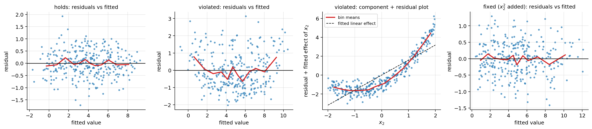
holds : RESET F = 1.45, p = 0.24; training RMSE = 0.536
violated: RESET F = 22.33, p = 9.4e-10; training RMSE = 1.049
fixed : RESET F = 0.95, p = 0.39; training RMSE = 0.506
fixed model coefficients: [1.034 1.964 1.524 0.794] (truth 1, 2, 1.5, 0.8)The violated case shows a U-shaped residual trend; the component-plus-residual plot points to \(x_2\) and shows the parabola directly. After adding \(x_2^2\) the residual trend is flat, RESET no longer rejects, the RMSE drops to the noise level and the coefficients recover the truth.
What to do (in order of preference):
- Transform the features, guided by the component-plus-residual plots: \(\log x\) for diminishing returns, \(x^2\) or splines (
SplineTransformer) for curvature, bins for thresholds, \(\sin/\cos\) for periodic effects (note 03 lists the patterns). Cheap and keeps the model interpretable. - Add interactions \(x_1x_2\) when the effect of one feature depends on the value of another (the plots vs \(x_1\) then fan differently at different \(x_2\)).
- Transform \(y\) (e.g. \(\log y\)) when effects are multiplicative; this changes the meaning of the coefficients (percent changes) and needs care when converting predictions back (section 16.1).
- A more flexible model (trees and boosting, notes 06 and 07) when the shape is complicated. Every added feature or flexibility adds variance: validate, and regularise (note 03).
15.2 Independence of errors
What it says. \(\mathrm{Cov}(\varepsilon_i, \varepsilon_k) = 0\) for \(i \neq k\): knowing the error of one example says nothing about the error of another. It fails with time series (the claims of one month share weather, prices and the economy with the next month), groups (several claims of one policyholder, the cars repaired by one garage, several photos of the same vehicle) and space (neighbouring postcodes).
Why it matters. Unbiasedness (14.2) used only (i), so \(\hat{\boldsymbol{\theta}}\) is still unbiased. But the covariance computation of 14.3 used \(\mathrm{Cov}(\boldsymbol{\varepsilon}) = \sigma^2\mathbf{I}\). With a general \(\mathrm{Cov}(\boldsymbol{\varepsilon}) = \boldsymbol{\Sigma}\) the first line of 14.3 gives instead
\[ \mathrm{Cov}(\hat{\boldsymbol{\theta}}) = \mathbf{A}\boldsymbol{\Sigma}\mathbf{A}^\top = (\mathbf{X}^\top\mathbf{X})^{-1}\,\mathbf{X}^\top\boldsymbol{\Sigma}\mathbf{X}\,(\mathbf{X}^\top\mathbf{X})^{-1} \neq \sigma^2(\mathbf{X}^\top\mathbf{X})^{-1}. \]
With positively correlated errors and a feature that itself changes slowly (a trend, a group-level feature), the naive formula is far too small: standard errors too small, confidence intervals too narrow, p-values too small, “significant” effects that are not. OLS is also no longer the most efficient estimator. For prediction: random \(k\)-fold cross-validation puts near-duplicates (the next day, the same policyholder) in training and validation, so validation scores are optimistic (note 00), and ignoring the dependence wastes information (yesterday’s residual helps predict today’s).
How to check.
- Plot the residuals against time or collection order (long runs of the same sign), against group (boxplots per group: groups whose residuals are all positive share an unmodelled effect), and the lag plot \(e_t\) vs \(e_{t-1}\).
- The lag-1 autocorrelation \(r_1 = \sum_{t=2}^m e_te_{t-1}\big/\sum_{t=1}^m e_t^2\) and the Durbin–Watson statistic
\[ \begin{aligned} \text{DW} &= \frac{\sum_{t=2}^m (e_t - e_{t-1})^2}{\sum_{t=1}^m e_t^2} && \text{definition}\\ &= \frac{\sum_{t=2}^m e_t^2 + \sum_{t=2}^m e_{t-1}^2 - 2\sum_{t=2}^m e_te_{t-1}}{\sum_{t=1}^m e_t^2} && \text{expand the square}\\ &\approx \frac{2\sum_{t} e_t^2 - 2\sum_{t=2}^m e_te_{t-1}}{\sum_{t} e_t^2} = 2(1 - r_1) . && \text{each of the first two sums misses only one end term} \end{aligned} \]
\(\text{DW} \approx 2\) means no lag-1 autocorrelation, towards 0 strong positive and towards 4 negative autocorrelation; values between about 1.5 and 2.5 are usually fine. Its exact null distribution depends on \(\mathbf{X}\), so we simulate it: under independence \(\mathbf{e} = (\mathbf{I}-\mathbf{H})\boldsymbol{\varepsilon}\) with i.i.d. \(\boldsymbol{\varepsilon}\), which we can draw many times.
Below: 200 consecutive months, \(x_t\) a linear trend from 0 to 3, \(y_t = 1 + 0.5x_t + \varepsilon_t\). The errors are either i.i.d. \(\mathcal{N}(0,1)\) or AR(1), \(\varepsilon_t = 0.8\,\varepsilon_{t-1} + u_t\) with \(u_t\) i.i.d. (a shock persists into the next months).
def ar1(rng_, m_, rho, sd=1.0):
"""AR(1) errors e_t = rho e_{t-1} + u_t, started from their stationary distribution."""
u = rng_.normal(0, sd, m_); e = np.empty(m_); e[0] = u[0] / np.sqrt(1 - rho**2)
for k in range(1, m_):
e[k] = rho * e[k - 1] + u[k]
return e
def durbin_watson(e):
return np.sum(np.diff(e) ** 2) / np.sum(e ** 2)
rng_t = np.random.default_rng(2); mt = 200
tt = np.arange(mt); xt = 3 * tt / mt; Xt = np.c_[np.ones(mt), xt]
y_iid = 1 + 0.5 * xt + rng_t.normal(0, 1, mt)
y_ar = 1 + 0.5 * xt + 0.6 * ar1(rng_t, mt, 0.8)
e_iid, e_ar = ols_fit(Xt, y_iid)["e"], ols_fit(Xt, y_ar)["e"]
IH = np.eye(mt) - Xt @ np.linalg.solve(Xt.T @ Xt, Xt.T) # I - H
E0 = IH @ np.random.default_rng(3).normal(size=(mt, 2000)) # residuals under independence
dw0 = (np.diff(E0, axis=0) ** 2).sum(0) / (E0 ** 2).sum(0)
lo_dw, hi_dw = np.quantile(dw0, [0.025, 0.975])
for name, e in [("independent", e_iid), ("AR(1) ", e_ar)]:
r1 = np.sum(e[1:] * e[:-1]) / np.sum(e ** 2)
print(f"{name}: DW = {durbin_watson(e):.3f}, 2(1 - r1) = {2 * (1 - r1):.3f}")
print(f"95% range of DW under independence (simulated for this X): [{lo_dw:.3f}, {hi_dw:.3f}]")
fig, axes = plt.subplots(1, 3, figsize=(15, 3.5))
for ax, e, title in [(axes[0], e_iid, "holds: residuals vs time"), (axes[1], e_ar, "violated (AR(1)): residuals vs time")]:
ax.plot(tt, e, ".-", lw=0.6, ms=3); ax.axhline(0, color="k", lw=1)
ax.set_xlabel("month $t$"); ax.set_ylabel("residual"); ax.set_title(title, fontsize=10)
axes[2].scatter(e_iid[:-1], e_iid[1:], s=8, alpha=0.6, label="independent")
axes[2].scatter(e_ar[:-1], e_ar[1:], s=8, alpha=0.6, label="AR(1)")
axes[2].set_xlabel("$e_{t-1}$"); axes[2].set_ylabel("$e_t$"); axes[2].legend(fontsize=8); axes[2].set_title("lag plot", fontsize=10)
plt.tight_layout(); plt.show()independent: DW = 2.210, 2(1 - r1) = 2.228
AR(1) : DW = 0.403, 2(1 - r1) = 0.407
95% range of DW under independence (simulated for this X): [1.729, 2.269]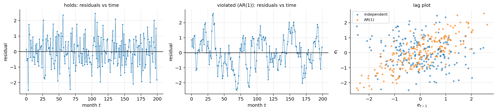
How wrong are the standard errors? Simulate 2 000 series with AR(1) errors (\(\rho = 0.8\), \(u_t \sim \mathcal{N}(0,1)\)) and the same trend, and compare the real spread of the slope estimates with the SE that OLS reports:
rng_s = np.random.default_rng(4); Rs = 2000
A_t = np.linalg.solve(Xt.T @ Xt, Xt.T)
Ys = (1 + 0.5 * xt)[:, None] + np.array([ar1(rng_s, mt, 0.8) for _ in range(Rs)]).T
THs = A_t @ Ys; Res = Ys - Xt @ THs
se_naive = np.sqrt((Res ** 2).sum(0) / (mt - 2) * np.linalg.inv(Xt.T @ Xt)[1, 1])
tq_t = stats.t.ppf(0.975, mt - 2)
print(f"true sd of the slope estimates : {THs[1].std():.3f}")
print(f"mean SE reported by OLS : {se_naive.mean():.3f}")
print(f"naive 95% CIs containing 0.5 : {np.mean(np.abs(THs[1] - 0.5) <= tq_t * se_naive):.1%}")
# remedy: quasi-differencing (Cochrane-Orcutt), rho estimated from the OLS residuals of each series
hits, dws = [], []
for k in range(Rs):
e = Res[:, k]; rho_hat = np.sum(e[1:] * e[:-1]) / np.sum(e[:-1] ** 2)
fq = ols_fit(Xt[1:] - rho_hat * Xt[:-1], Ys[1:, k] - rho_hat * Ys[:-1, k])
hits.append(abs(fq["theta"][1] - 0.5) <= stats.t.ppf(0.975, fq["df"]) * fq["se"][1]); dws.append(durbin_watson(fq["e"]))
print(f"quasi-differenced 95% CIs containing 0.5: {np.mean(hits):.1%}; median DW after the transform: {np.median(dws):.2f}")true sd of the slope estimates : 0.396
mean SE reported by OLS : 0.130
naive 95% CIs containing 0.5 : 47.9%
quasi-differenced 95% CIs containing 0.5: 90.3%; median DW after the transform: 1.97The naive intervals are about three times too narrow and cover the truth only about half the time.
What to do.
- Model the dependence away. Often it comes from something missing: add a time trend, seasonality (month dummies, \(\sin/\cos\)), lagged values \(y_{t-1}\), or group-level features (region, policyholder history). If the cause is in the model, the errors become independent. See the time-series lab.
- Generalised least squares for AR(1) errors: quasi-differencing (Cochrane–Orcutt). If \(\varepsilon_t = \rho\varepsilon_{t-1} + u_t\) with i.i.d. \(u_t\), subtract \(\rho\) times the previous equation: \[ y_t - \rho y_{t-1} = (\mathbf{x}_t - \rho\mathbf{x}_{t-1})^\top\boldsymbol{\theta} + (\varepsilon_t - \rho\varepsilon_{t-1}) = (\mathbf{x}_t - \rho\mathbf{x}_{t-1})^\top\boldsymbol{\theta} + u_t . \] The transformed errors \(u_t\) are independent, so OLS on the transformed data is valid (and BLUE by Gauss–Markov). \(\rho\) is estimated from the OLS residuals. In the simulation above this brings the coverage back to about 90 % (the rest is the price of estimating \(\rho\)) and DW back to about 2.
- Keep \(\hat{\boldsymbol{\theta}}\), fix the standard errors with the sandwich \((\mathbf{X}^\top\mathbf{X})^{-1}\,\widehat{\mathbf{X}^\top\boldsymbol{\Sigma}\mathbf{X}}\,(\mathbf{X}^\top\mathbf{X})^{-1}\) (the HC0 formula of 15.3, extended): cluster-robust SEs sum \(\mathbf{X}_g^\top\mathbf{e}_g\mathbf{e}_g^\top\mathbf{X}_g\) within each group \(g\), so any correlation inside a group is allowed; HAC (Newey–West) SEs do the same for the first few lags of a time series. Both need many groups or a long series.
- Validate honestly. Time series: train on the past, validate on the future (
TimeSeriesSplit). Groups: keep every group entirely in one fold (GroupKFold). Never plain random \(k\)-fold.
15.3 Homoscedasticity (constant variance)
What it says. \(\mathrm{Var}(\varepsilon\mid\mathbf{x}) = \sigma^2\), the same for every \(\mathbf{x}\). The opposite, heteroscedasticity, is the rule when \(y\) is a size: claim costs, prices and sales spread more when they are larger.
Why it matters. With \(\mathrm{Cov}(\boldsymbol{\varepsilon}) = \boldsymbol{\Sigma} = \mathrm{diag}(\sigma_1^2, \dots, \sigma_m^2)\):
- \(\hat{\boldsymbol{\theta}}\) is still unbiased (14.2 did not use (ii)), so average predictions are fine;
- the true covariance is the sandwich \((\mathbf{X}^\top\mathbf{X})^{-1}\mathbf{X}^\top\boldsymbol{\Sigma}\mathbf{X}(\mathbf{X}^\top\mathbf{X})^{-1}\) of 15.2, so the reported SEs, CIs and p-values are wrong, typically too small when the noisy points are also the high-leverage ones (large \(x\));
- OLS is no longer BLUE (Gauss–Markov needs (ii)): weighted least squares is more precise;
- prediction intervals of constant width are too wide for the small cases and too narrow for the large ones, the most expensive mistake in pricing and reserving.
How to check.
- Residuals vs fitted: a funnel (spread growing with \(\hat y\)).
- Scale–location plot: \(\sqrt{|r_i|}\) against \(\hat y_i\), with the standardised residuals \(r_i = e_i/(\hat\sigma\sqrt{1-h_{ii}})\) (each \(e_i\) divided by its own standard deviation, 14.4). A rising trend means the variance grows with the level.
- Breusch–Pagan test (Koenker’s version), from scratch: regress the squared residuals on the features, \(e_i^2 = \gamma_0 + \boldsymbol{\gamma}^\top\mathbf{x}^{(i)} + v_i\). If the variance is constant the features cannot predict \(e^2\) and the \(R^2\) of this auxiliary regression is near 0. Under \(H_0\), \(\text{LM} = m\,R^2_{\text{aux}}\) approximately follows a \(\chi^2_n\) distribution (\(n\) features in the auxiliary regression). Caveat: with large \(m\) it rejects tiny, harmless heteroscedasticity; always look at the size of the effect, e.g. the ratio of residual spreads between the top and bottom fifth of fitted values.
Below: a skewed feature (say, vehicle value in k€, log-normal, 200 policies), \(y = 5 + 0.8x + \varepsilon\). In one dataset the noise has constant \(\sigma = 1.5\); in the other its standard deviation is \(0.08\,x\), proportional to the feature.
def breusch_pagan(X, e):
"""Koenker's LM = m * R^2 of e^2 on the columns of X; approximately chi^2 with n = (columns - 1) df."""
m_, p_ = X.shape; e2 = e**2; fb = ols_fit(X, e2)
R2 = 1 - fb["e"] @ fb["e"] / np.sum((e2 - e2.mean())**2)
return m_ * R2, stats.chi2.sf(m_ * R2, p_ - 1)
rng_h = np.random.default_rng(3); mh = 200
xv = 10 * rng_h.lognormal(0, 0.6, mh); Xh = np.c_[np.ones(mh), xv]
sd_h = 0.08 * xv # noise sd proportional to x
y_hom = 5 + 0.8 * xv + rng_h.normal(0, 1.5, mh)
y_het = 5 + 0.8 * xv + rng_h.normal(0, 1, mh) * sd_h
fig, axes = plt.subplots(1, 4, figsize=(16, 3.6))
for k, (yy, name) in enumerate([(y_hom, "holds"), (y_het, "violated")]):
fh = ols_fit(Xh, yy); r_std = fh["e"] / np.sqrt(fh["s2"] * (1 - fh["h"]))
axes[2 * k].scatter(fh["fit"], fh["e"], s=8, alpha=0.6); axes[2 * k].axhline(0, color="k", lw=1)
axes[2 * k].set_xlabel("fitted value"); axes[2 * k].set_ylabel("residual"); axes[2 * k].set_title(f"{name}: residuals vs fitted", fontsize=10)
axes[2 * k + 1].scatter(fh["fit"], np.sqrt(np.abs(r_std)), s=8, alpha=0.6)
axes[2 * k + 1].plot(*binned(fh["fit"], np.sqrt(np.abs(r_std)), 8), "C3", lw=2)
axes[2 * k + 1].set_xlabel("fitted value"); axes[2 * k + 1].set_ylabel(r"$\sqrt{|r_i|}$"); axes[2 * k + 1].set_title(f"{name}: scale-location", fontsize=10)
LM, p = breusch_pagan(Xh, fh["e"])
q_lo, q_hi = np.quantile(fh["fit"], [0.2, 0.8])
ratio = fh["e"][fh["fit"] >= q_hi].std() / fh["e"][fh["fit"] <= q_lo].std()
print(f"{name:8s}: Breusch-Pagan LM = {LM:5.1f}, p = {p:.2g}; residual sd top fifth / bottom fifth = {ratio:.1f}")
plt.tight_layout(); plt.show()holds : Breusch-Pagan LM = 0.0, p = 0.92; residual sd top fifth / bottom fifth = 0.9
violated: Breusch-Pagan LM = 95.3, p = 1.7e-22; residual sd top fifth / bottom fifth = 6.9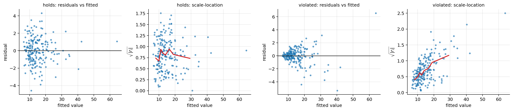
What to do.
- Transform \(y\). If the standard deviation is proportional to the mean (multiplicative noise, \(y = e^{\boldsymbol{\theta}^\top\mathbf{x} + \varepsilon}\)), then \(\log y = \boldsymbol{\theta}^\top\mathbf{x} + \varepsilon\) has constant variance. The Box–Cox family generalises this: \(z = (y^\lambda - 1)/\lambda\) for \(\lambda\neq0\) and \(z = \log y\) for \(\lambda = 0\) (\(y > 0\)). Choose \(\lambda\) by maximum likelihood: if \(z\) given \(\mathbf{x}\) is Gaussian, the density of \(y\) is that of \(z\) times the Jacobian \(|dz/dy| = y^{\lambda-1}\), and plugging in the MLE of \(\sigma^2\) (section 10) leaves the profile log-likelihood \[
\ell(\lambda) = -\frac m2\log\frac{\text{SSE}_\lambda}{m} + (\lambda - 1)\sum_i\log y_i + \text{const},
\] where \(\text{SSE}_\lambda\) is the residual sum of squares of the regression of \(z\) on \(\mathbf{X}\). (scipy’s
stats.boxcoxmaximises a similar likelihood for a single variable without regressors, which is not what we want here.) Cost: the model changes. Effects become multiplicative (\(\theta_j\) is roughly a percent change) and predictions must be converted back carefully (section 16.1). - Weighted least squares when the variance can be modelled, \(\mathrm{Var}(\varepsilon_i) = \sigma^2/w_i\) with known weights \(w_i\) (for example, \(y_i\) is the average of \(n_i\) claims, so \(w_i = n_i\)). Minimise \(J_w(\boldsymbol{\theta}) = \sum_i w_i(y_i - \boldsymbol{\theta}^\top\mathbf{x}^{(i)})^2 = (\mathbf{y}-\mathbf{X}\boldsymbol{\theta})^\top\mathbf{W}(\mathbf{y}-\mathbf{X}\boldsymbol{\theta})\) with \(\mathbf{W} = \mathrm{diag}(w_i)\): \[
\begin{aligned}
J_w(\boldsymbol{\theta}) &= \mathbf{y}^\top\mathbf{W}\mathbf{y} - 2(\mathbf{X}^\top\mathbf{W}\mathbf{y})^\top\boldsymbol{\theta} + \boldsymbol{\theta}^\top\mathbf{X}^\top\mathbf{W}\mathbf{X}\boldsymbol{\theta} && \text{multiply out; } \mathbf{W} \text{ symmetric, a number equals its transpose}\\
\nabla J_w &= -2\mathbf{X}^\top\mathbf{W}\mathbf{y} + 2\mathbf{X}^\top\mathbf{W}\mathbf{X}\boldsymbol{\theta} = \mathbf{0} && \text{Facts 1 and 2}\\
\boldsymbol{\theta}_{\text{WLS}} &= (\mathbf{X}^\top\mathbf{W}\mathbf{X})^{-1}\mathbf{X}^\top\mathbf{W}\mathbf{y} . && \text{solve}
\end{aligned}
\] Why it is the right thing: with \(\tilde{\mathbf{y}} = \mathbf{W}^{1/2}\mathbf{y}\) and \(\tilde{\mathbf{X}} = \mathbf{W}^{1/2}\mathbf{X}\) (each row multiplied by \(\sqrt{w_i}\)), \(\tilde{\mathbf{y}} = \tilde{\mathbf{X}}\boldsymbol{\theta} + \mathbf{W}^{1/2}\boldsymbol{\varepsilon}\) and \(\mathrm{Cov}(\mathbf{W}^{1/2}\boldsymbol{\varepsilon}) = \mathbf{W}^{1/2}(\sigma^2\mathbf{W}^{-1})\mathbf{W}^{1/2} = \sigma^2\mathbf{I}\): the transformed problem is homoscedastic, so OLS on it is BLUE (Gauss–Markov), and it is exactly WLS because \(\tilde{\mathbf{X}}^\top\tilde{\mathbf{X}} = \mathbf{X}^\top\mathbf{W}\mathbf{X}\) and \(\tilde{\mathbf{X}}^\top\tilde{\mathbf{y}} = \mathbf{X}^\top\mathbf{W}\mathbf{y}\). By 14.3 on the transformed problem, \(\mathrm{Cov}(\boldsymbol{\theta}_{\text{WLS}}) = \sigma^2(\mathbf{X}^\top\mathbf{W}\mathbf{X})^{-1}\). When the weights are unknown, feasible WLS estimates the variance function from the OLS residuals first. A convenient model is a power law, \(\sigma(x) \propto x^{\gamma}\): regress \(\log e_i^2\) on \(\log x_i\), and use \(w_i = 1/\hat\sigma_i^2\) with \(\log\hat\sigma_i^2\) the fitted values (the weights only need to be proportional to \(1/\sigma_i^2\), so the constant offset between \(\mathbb{E}[\log\varepsilon^2]\) and \(\log\sigma^2\) does not matter). scikit-learn:
LinearRegression().fit(X, y, sample_weight=w). - Keep OLS, fix the standard errors (heteroscedasticity-robust, “sandwich” or White SEs). The true covariance is \((\mathbf{X}^\top\mathbf{X})^{-1}\big(\sum_i\sigma_i^2\,\mathbf{x}^{(i)}\mathbf{x}^{(i)\top}\big)(\mathbf{X}^\top\mathbf{X})^{-1}\), since \(\mathbf{X}^\top\boldsymbol{\Sigma}\mathbf{X} = \sum_i\sigma_i^2\mathbf{x}^{(i)}\mathbf{x}^{(i)\top}\) for diagonal \(\boldsymbol{\Sigma}\). Each \(\sigma_i^2\) is unknown, but \(e_i^2\) is a nearly unbiased (if noisy) estimate of it, and the noise averages out in the sum over \(m\) terms: \[ \widehat{\mathrm{Cov}}_{\text{HC0}}(\hat{\boldsymbol{\theta}}) = (\mathbf{X}^\top\mathbf{X})^{-1}\Big(\sum_i e_i^2\,\mathbf{x}^{(i)}\mathbf{x}^{(i)\top}\Big)(\mathbf{X}^\top\mathbf{X})^{-1}. \] Because \(\mathbb{E}[e_i^2] = \sigma^2(1-h_{ii})\) under homoscedasticity (14.4), residuals at high-leverage points are too small; HC3 uses \(e_i^2/(1-h_{ii})^2\) instead and behaves better in small samples.
lams_bc = np.linspace(-1, 2, 61)
def boxcox_profile(X, yy, lams):
out = []
for l in lams:
z = np.log(yy) if abs(l) < 1e-12 else (yy**l - 1) / l
e = ols_fit(X, z)["e"]; out.append(-len(yy) / 2 * np.log(e @ e / len(yy)) + (l - 1) * np.log(yy).sum())
return np.array(out)
y_mult = np.exp(1 + 0.08 * xv + rng_h.normal(0, 0.35, mh)) # multiplicative noise
lam_hat = lams_bc[np.argmax(boxcox_profile(Xh, y_mult, lams_bc))]
print(f"Box-Cox on multiplicative data: lambda_hat = {lam_hat:.2f}; Breusch-Pagan p: raw y {breusch_pagan(Xh, ols_fit(Xh, y_mult)['e'])[1]:.1g}, "
f"log y {breusch_pagan(Xh, ols_fit(Xh, np.log(y_mult))['e'])[1]:.2f}")
def wls(X, yy, w):
sw = np.sqrt(w); return ols_fit(X * sw[:, None], yy * sw) # OLS on the rescaled rows
fo = ols_fit(Xh, y_het)
fw = wls(Xh, y_het, 1 / sd_h**2) # known weights
g = ols_fit(np.c_[np.ones(mh), np.log(xv)], np.log(fo["e"]**2)) # variance model: log e^2 on log x
ffw = wls(Xh, y_het, 1 / np.exp(g["fit"])) # feasible WLS, w = 1 / sigma_hat^2
A_h = fo["XtX_inv"] @ Xh.T
se_hc0 = np.sqrt((A_h**2) @ fo["e"]**2); se_hc3 = np.sqrt((A_h**2) @ (fo["e"] / (1 - fo["h"]))**2)
print(f"\nslope: OLS {fo['theta'][1]:.3f} (naive SE {fo['se'][1]:.4f}, HC0 {se_hc0[1]:.4f}, HC3 {se_hc3[1]:.4f});"
f" WLS {fw['theta'][1]:.3f} (SE {fw['se'][1]:.4f}); feasible WLS {ffw['theta'][1]:.3f} (SE {ffw['se'][1]:.4f})")
print(f"Breusch-Pagan on the rescaled residuals: OLS p = {breusch_pagan(Xh, fo['e'])[1]:.1g}, known-weight WLS p = {breusch_pagan(Xh, fw['e'])[1]:.2f}, feasible WLS p = {breusch_pagan(Xh, ffw['e'])[1]:.2f}")
# coverage of 95% intervals for the slope over 4000 heteroscedastic datasets (same x)
rng_c = np.random.default_rng(4); Rc = 4000
Yc = (5 + 0.8 * xv)[:, None] + rng_c.normal(size=(mh, Rc)) * sd_h[:, None]
THc = A_h @ Yc; Ec = Yc - Xh @ THc; tq_h = stats.t.ppf(0.975, mh - 2)
se_n = np.sqrt((Ec**2).sum(0) / (mh - 2) * fo["XtX_inv"][1, 1])
se0 = np.sqrt((A_h[1]**2) @ Ec**2); se3 = np.sqrt((A_h[1]**2 / (1 - fo["h"])**2) @ Ec**2)
Wd = 1 / sd_h**2; A_w = np.linalg.solve((Xh * Wd[:, None]).T @ Xh, (Xh * Wd[:, None]).T); THw = A_w @ Yc
print(f"\ntrue sd of the OLS slope {THc[1].std():.4f} vs mean naive SE {se_n.mean():.4f}; true sd of the WLS slope {THw[1].std():.4f}")
for name, se_ in [("naive", se_n), ("HC0", se0), ("HC3", se3)]:
print(f"{name:5s} 95% CIs containing 0.8: {np.mean(np.abs(THc[1] - 0.8) <= tq_h * se_):.1%}")Box-Cox on multiplicative data: lambda_hat = 0.10; Breusch-Pagan p: raw y 2e-13, log y 0.29
slope: OLS 0.803 (naive SE 0.0097, HC0 0.0304, HC3 0.0383); WLS 0.801 (SE 0.0095); feasible WLS 0.801 (SE 0.0095)
Breusch-Pagan on the rescaled residuals: OLS p = 2e-22, known-weight WLS p = 0.75, feasible WLS p = 0.77
true sd of the OLS slope 0.0281 vs mean naive SE 0.0096; true sd of the WLS slope 0.0101
naive 95% CIs containing 0.8: 48.9%
HC0 95% CIs containing 0.8: 88.3%
HC3 95% CIs containing 0.8: 92.9%With noise proportional to a skewed feature, the naive OLS intervals cover the true slope only about half the time; HC0 fixes most of it and HC3 more; weighted least squares, when the variance model is right, is also almost three times more precise than OLS. Which remedy? Model the variance (WLS) or transform \(y\) if you care about efficient estimates and sensible prediction intervals; use HC standard errors as the cheap default whenever you report OLS intervals or p-values.
15.4 Normality of the errors
What it says. \(\varepsilon \sim \mathcal{N}(0, \sigma^2)\) (with the other assumptions: i.i.d. Gaussian noise).
Why it matters, and why less than people think. Normality is not needed for computing least squares, for unbiasedness (14.2), for the covariance formula (14.3), for \(\hat\sigma^2\) (14.5) or for Gauss–Markov (14.8). It is needed for:
- the exact \(t\) and \(F\) distributions of 14.6–14.7. For large \(m\) the central limit theorem makes \(\hat{\boldsymbol{\theta}} = \boldsymbol{\theta} + \mathbf{A}\boldsymbol{\varepsilon}\) (a weighted sum of many independent errors) approximately Gaussian anyway, so coefficient intervals remain valid;
- prediction intervals, for any \(m\): they are about a single new error \(\varepsilon_0\), not an average, so the central limit theorem does not help. With skewed noise the symmetric interval misses on one side only;
- efficiency with heavy tails: OLS stays BLUE, but non-linear robust estimators (15.7) are then much better;
- the MLE interpretation of section 10.
How to check.
- Q–Q plot: sort the standardised residuals \(r_{(1)} \le \dots \le r_{(m)}\) and plot them against the normal quantiles \(\Phi^{-1}\big((i - 0.5)/m\big)\). Normal residuals lie on the diagonal; an S-shape (ends beyond the line) means heavy tails; a banana means skew.
- Skewness and excess kurtosis of the residuals (both 0 for a normal): they say how non-normal.
- Shapiro–Wilk (
scipy.stats.shapiro) tests normality. Caveats: residuals are slightly correlated (\(\mathrm{Cov}(\mathbf{e}) = \sigma^2(\mathbf{I}-\mathbf{H})\)); with small \(m\) it has little power; with large \(m\) it rejects departures far too small to matter.
Below: 200 points, \(y = 1 + 2x + \varepsilon\) with three noise distributions of variance 1: normal, skewed (exponential minus 1) and heavy-tailed (Student \(t\) with 3 degrees of freedom, rescaled).
rng_n = np.random.default_rng(6); mn_ = 200
xq = rng_n.uniform(0, 3, mn_); Xq = np.c_[np.ones(mn_), xq]
noises = {"normal": rng_n.normal(0, 1, mn_), "skewed": rng_n.exponential(1, mn_) - 1,
"heavy-tailed": rng_n.standard_t(3, mn_) / np.sqrt(3)}
fig, axes = plt.subplots(1, 3, figsize=(14, 3.8))
for ax, (name, eps_) in zip(axes, noises.items()):
fq = ols_fit(Xq, 1 + 2 * xq + eps_); r_std = fq["e"] / np.sqrt(fq["s2"] * (1 - fq["h"]))
theo = stats.norm.ppf((np.arange(1, mn_ + 1) - 0.5) / mn_) # normal quantiles
ax.scatter(theo, np.sort(r_std), s=8); ax.plot([-3, 3], [-3, 3], "k--", lw=1)
ax.set_xlabel("normal quantile"); ax.set_ylabel("sorted standardised residual"); ax.set_title(f"Q-Q plot: {name} noise", fontsize=10)
print(f"{name:12s}: Shapiro-Wilk p = {stats.shapiro(fq['e']).pvalue:.2g}, skewness {stats.skew(fq['e']):5.2f}, excess kurtosis {stats.kurtosis(fq['e']):5.2f}")
plt.tight_layout(); plt.show()
rng_b = np.random.default_rng(7); mb = 5000 # large m, almost normal noise
xb = rng_b.uniform(0, 3, mb); fb = ols_fit(np.c_[np.ones(mb), xb], 1 + 2 * xb + rng_b.standard_t(10, mb))
print(f"m = 5000, t(10) noise: Shapiro-Wilk p = {stats.shapiro(fb['e']).pvalue:.1g}, excess kurtosis {stats.kurtosis(fb['e']):.2f}")normal : Shapiro-Wilk p = 0.51, skewness 0.01, excess kurtosis -0.34
skewed : Shapiro-Wilk p = 4.8e-13, skewness 1.87, excess kurtosis 6.45
heavy-tailed: Shapiro-Wilk p = 0.00028, skewness -0.51, excess kurtosis 2.07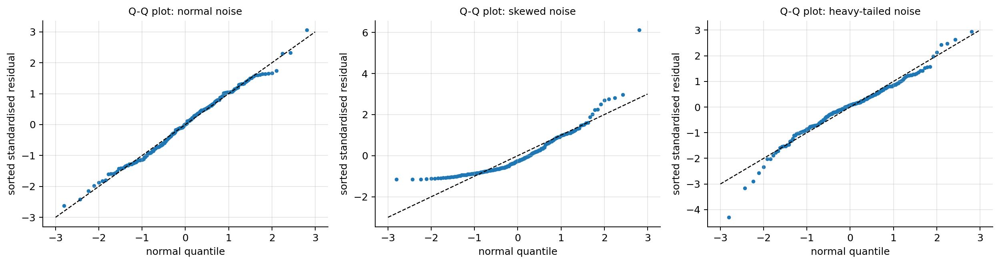
m = 5000, t(10) noise: Shapiro-Wilk p = 7e-13, excess kurtosis 0.96The large-\(m\) case is the caveat in action: noise with Student-\(t\) tails and 10 degrees of freedom is almost Gaussian and harmless for every result of section 14, yet the test rejects with a tiny p-value. Now what non-normality actually does, with the skewed noise:
for mm in [8, 200]: # coefficient CIs: coverage with skewed noise
rr = np.random.default_rng(9); xs_ = np.linspace(0, 3, mm); Xs_ = np.c_[np.ones(mm), xs_]
A_s = np.linalg.solve(Xs_.T @ Xs_, Xs_.T); Ysk = (1 + 2 * xs_)[:, None] + rr.exponential(1, (mm, 5000)) - 1
THk = A_s @ Ysk; se_k = np.sqrt(((Ysk - Xs_ @ THk)**2).sum(0) / (mm - 2) * np.linalg.inv(Xs_.T @ Xs_)[1, 1])
print(f"m = {mm:3d}, skewed noise: 95% CIs for the slope containing the truth: {np.mean(np.abs(THk[1] - 2) <= stats.t.ppf(0.975, mm - 2) * se_k):.1%}")
rng_k = np.random.default_rng(8); m_tr, m_te = 200, 20000 # prediction intervals
x_tr = rng_k.uniform(0, 3, m_tr); X_tr = np.c_[np.ones(m_tr), x_tr]; y_tr = 1 + 2 * x_tr + rng_k.exponential(1, m_tr) - 1
x_te = rng_k.uniform(0, 3, m_te); X_te = np.c_[np.ones(m_te), x_te]; y_te = 1 + 2 * x_te + rng_k.exponential(1, m_te) - 1
fk = ols_fit(X_tr, y_tr); pred = X_te @ fk["theta"]
h_te = np.einsum("ij,jk,ik->i", X_te, fk["XtX_inv"], X_te)
half = stats.t.ppf(0.975, fk["df"]) * np.sqrt(fk["s2"] * (1 + h_te))
q_lo, q_hi = np.quantile(fk["e"], [0.025, 0.975]) # empirical residual quantiles
for name, lo, hi in [("normal-theory PI ", pred - half, pred + half), ("empirical-quantile", pred + q_lo, pred + q_hi)]:
print(f"{name}: covers {np.mean((y_te >= lo) & (y_te <= hi)):.1%}, misses below {np.mean(y_te < lo):.1%}, above {np.mean(y_te > hi):.1%}")m = 8, skewed noise: 95% CIs for the slope containing the truth: 95.2%
m = 200, skewed noise: 95% CIs for the slope containing the truth: 95.4%
normal-theory PI : covers 93.4%, misses below 0.0%, above 6.6%
empirical-quantile: covers 93.5%, misses below 3.2%, above 3.3%Even with 8 points and skewed noise, the coefficient intervals keep their 95 % coverage: they are robust. The prediction intervals are not. The normal-theory interval misses only on the high side, because the noise has a long right tail and a hard floor at \(-1\); the interval built from the empirical 2.5 % and 97.5 % quantiles of the residuals splits its misses evenly. Its overall coverage is also a little below 95 %, because training residuals are slightly smaller than new errors; computing the quantiles on held-out residuals (split conformal prediction) fixes that.
What to do.
- For \(\hat{\boldsymbol{\theta}}\) and its intervals: usually nothing, unless \(m\) is very small and the tails are heavy.
- For prediction intervals: use the empirical distribution of held-out residuals (quantiles, as above) or the bootstrap instead of \(\pm t\hat\sigma\).
- Transform \(y\) (log for right-skewed costs): it often fixes skewness and heteroscedasticity together (15.3, 16.1).
- Heavy tails or outliers: a robust loss (15.7).
- Model the distribution: a generalised linear model with a Gamma or Poisson distribution (note 02b).
15.5 No perfect multicollinearity, and collinearity in general
What it says. Perfect multicollinearity: some column of \(\mathbf{X}\) is an exact linear combination of the others, \(\mathbf{X}\mathbf{v} = \mathbf{0}\) for some \(\mathbf{v}\neq\mathbf{0}\) (then \(\mathrm{rank}(\mathbf{X}) < n+1\)). The assumption is that this does not happen, which also requires \(m \ge n+1\). Near collinearity, \(\mathbf{X}\mathbf{v} \approx \mathbf{0}\) for some unit vector \(\mathbf{v}\), violates nothing, but it is the most common practical problem with linear models.
Why it matters. Perfect: \(\mathbf{X}^\top\mathbf{X}\) is singular, \(J\) has a valley of minimisers (section 8, the duplicated-feature plot), individual coefficients are not defined (lstsq returns the minimum-norm one), though predictions for new points like the training ones still are. Typical causes: the dummy trap (section 11), a duplicated column, the same quantity in two units (power in kW and in hp), a total next to all its parts, more features than examples.
Near collinearity makes the variance of the coefficients explode. Three ways to see it:
(a) Eigenvalues. \(\mathbf{X}^\top\mathbf{X}\) is symmetric PSD, so \(\mathbf{X}^\top\mathbf{X} = \mathbf{V}\boldsymbol{\Lambda}\mathbf{V}^\top\) with orthonormal eigenvectors \(\mathbf{v}_k\) (the columns of \(\mathbf{V}\), \(\mathbf{V}^\top\mathbf{V} = \mathbf{I}\)) and eigenvalues \(\lambda_k > 0\). Then
\[ \begin{aligned} (\mathbf{X}^\top\mathbf{X})^{-1} &= \mathbf{V}\boldsymbol{\Lambda}^{-1}\mathbf{V}^\top = \sum_k \frac{\mathbf{v}_k\mathbf{v}_k^\top}{\lambda_k} && \text{check: } \mathbf{V}\boldsymbol{\Lambda}\mathbf{V}^\top\mathbf{V}\boldsymbol{\Lambda}^{-1}\mathbf{V}^\top = \mathbf{I}\\ \mathrm{Var}(\hat\theta_j) &= \sigma^2\big[(\mathbf{X}^\top\mathbf{X})^{-1}\big]_{jj} = \sigma^2\sum_k\frac{v_{jk}^2}{\lambda_k} && \text{section 14.3}\\ \mathrm{Var}(\mathbf{v}_k^\top\hat{\boldsymbol{\theta}}) &= \sigma^2\,\mathbf{v}_k^\top(\mathbf{X}^\top\mathbf{X})^{-1}\mathbf{v}_k = \frac{\sigma^2}{\lambda_k}, \qquad \lambda_k = \mathbf{v}_k^\top\mathbf{X}^\top\mathbf{X}\mathbf{v}_k = \lVert\mathbf{X}\mathbf{v}_k\rVert^2 . && \text{orthonormality} \end{aligned} \]
A small \(\lambda_k\) means \(\mathbf{X}\mathbf{v}_k \approx \mathbf{0}\): the data barely vary along the combination \(\mathbf{v}_k\) of features, so the data say almost nothing about \(\mathbf{v}_k^\top\boldsymbol{\theta}\), whose variance is \(\sigma^2/\lambda_k\). Every coefficient with a large weight \(v_{jk}\) in that direction inherits the huge variance, and the total \(\mathbb{E}\lVert\hat{\boldsymbol{\theta}} - \boldsymbol{\theta}\rVert^2 = \mathrm{tr}\,\mathrm{Cov}(\hat{\boldsymbol{\theta}}) = \sigma^2\sum_k 1/\lambda_k\) is dominated by it.
(b) The variance inflation factor, derived. First remove the intercept from the picture. The first normal equation (the row of ones) says \(\sum_i\big(y_i - \hat\theta_0 - \sum_j\hat\theta_jx_{ij}\big) = 0\), i.e. \(\hat\theta_0 = \bar y - \sum_j\hat\theta_j\bar x_j\). Substituting it back, the slopes are the least-squares fit of \(y_i - \bar y\) on the centred features \(x_{ij} - \bar x_j\); with \(\mathbf{X}_c\) the matrix of centred features (no column of ones, \(\mathbf{X}_c^\top\mathbf{1} = \mathbf{0}\)), the argument of 14.2–14.3 gives \(\mathrm{Cov}(\hat\theta_1, \dots, \hat\theta_n) = \sigma^2(\mathbf{X}_c^\top\mathbf{X}_c)^{-1}\). Now fix a feature \(j\) and order the columns as \(\mathbf{X}_c = [\mathbf{x}_j,\ \mathbf{X}_{-j}]\) (feature \(j\) first, then all the others).
Lemma (block inverse). For a symmetric invertible \(\mathbf{M} = \begin{pmatrix} a & \mathbf{b}^\top\\ \mathbf{b} & \mathbf{D}\end{pmatrix}\) with a scalar \(a\) and invertible \(\mathbf{D}\): \(\;[\mathbf{M}^{-1}]_{11} = 1/(a - \mathbf{b}^\top\mathbf{D}^{-1}\mathbf{b})\).
Proof. Let \((u, \mathbf{w})\) be the first column of \(\mathbf{M}^{-1}\), so \(\mathbf{M}\begin{pmatrix}u\\ \mathbf{w}\end{pmatrix} = \begin{pmatrix}1\\ \mathbf{0}\end{pmatrix}\). The lower block gives \(\mathbf{b}u + \mathbf{D}\mathbf{w} = \mathbf{0}\), so \(\mathbf{w} = -\mathbf{D}^{-1}\mathbf{b}\,u\). The top row gives \(au + \mathbf{b}^\top\mathbf{w} = 1\), i.e. \(u\,(a - \mathbf{b}^\top\mathbf{D}^{-1}\mathbf{b}) = 1\). \(\blacksquare\)
Apply it with \(a = \mathbf{x}_j^\top\mathbf{x}_j\), \(\mathbf{b} = \mathbf{X}_{-j}^\top\mathbf{x}_j\), \(\mathbf{D} = \mathbf{X}_{-j}^\top\mathbf{X}_{-j}\), and write \(\mathbf{H}_{-j} = \mathbf{X}_{-j}(\mathbf{X}_{-j}^\top\mathbf{X}_{-j})^{-1}\mathbf{X}_{-j}^\top\) for the hat matrix of the other features:
\[ \begin{aligned} \big[(\mathbf{X}_c^\top\mathbf{X}_c)^{-1}\big]_{jj} &= \frac{1}{\mathbf{x}_j^\top\mathbf{x}_j - \mathbf{x}_j^\top\mathbf{X}_{-j}(\mathbf{X}_{-j}^\top\mathbf{X}_{-j})^{-1}\mathbf{X}_{-j}^\top\mathbf{x}_j} && \text{lemma}\\ &= \frac{1}{\mathbf{x}_j^\top(\mathbf{I}-\mathbf{H}_{-j})\mathbf{x}_j} = \frac{1}{\lVert(\mathbf{I}-\mathbf{H}_{-j})\mathbf{x}_j\rVert^2} = \frac{1}{\text{RSS}_j} && \mathbf{I}-\mathbf{H}_{-j}\text{ symmetric and idempotent}\\ &= \frac{1}{\text{TSS}_j\,(1 - R_j^2)} . && \text{definition of } R^2 \end{aligned} \]
Here \(\text{RSS}_j\) is the residual sum of squares when \(x_j\) is regressed on all the other features (with intercept, since everything is centred), \(\text{TSS}_j = \sum_i(x_{ij} - \bar x_j)^2\) and \(R_j^2 = 1 - \text{RSS}_j/\text{TSS}_j\) its \(R^2\). Therefore
\[ \mathrm{Var}(\hat\theta_j) = \underbrace{\frac{\sigma^2}{\sum_i (x_{ij} - \bar x_j)^2}}_{\text{if } x_j \text{ were uncorrelated with the others}} \times \underbrace{\frac{1}{1 - R_j^2}}_{\text{VIF}_j}, \qquad \boxed{\mathrm{VIF}_j = \frac{1}{1-R_j^2}} . \]
The first factor is the one-feature formula of 14.3; the variance inflation factor says how many times larger the variance is because \(x_j\) can be predicted from the other features. Standard errors are multiplied by \(\sqrt{\mathrm{VIF}_j}\) (VIF 10 means SEs 3.2 times larger). Rules of thumb: VIF above 5–10 signals a problem. For standardised features \(\mathbf{X}_c^\top\mathbf{X}_c = m\,\mathbf{C}\), with \(\mathbf{C}\) the correlation matrix, and \(\text{TSS}_j = m\), so \(\mathrm{VIF}_j = [\mathbf{C}^{-1}]_{jj}\): a quick way to compute them all.
(c) The condition number \(\kappa = \sqrt{\lambda_{\max}/\lambda_{\min}}\) of the standardised feature matrix (its largest over its smallest singular value; the square root because it refers to \(\mathbf{X}\), not \(\mathbf{X}^\top\mathbf{X}\)). Common rules of thumb: above 30 strong collinearity, 10–30 moderate. It depends on the scaling of the columns (section 6), so compute it after standardising. The eigenvector of the smallest eigenvalue tells which combination is nearly constant.
How to check. Symptoms: large standard errors; coefficients individually “not significant” while the model fits well and a joint test of the group is highly significant; signs contrary to common sense; coefficients that jump when a feature or a few rows are added or removed, while the predictions (inside the range of the data) and the test error barely change. Diagnostics: the matrix rank (perfect case), VIFs, the condition number and its eigenvector, and the bootstrap (refit on resamples of the rows and look at the spread of each coefficient).
Below: a made-up motor portfolio of 200 policies. The premium depends on the driver’s age, the years since the driving licence was obtained (which is age minus 18 to 21) and the annual mileage (thousand km): premium \(= 300 + 1.0\cdot\text{age} - 4\cdot\text{licence years} + 6\cdot\text{mileage} + \varepsilon\), \(\sigma = 40\) €.
def make_policies(rng_, m_):
age = rng_.uniform(25, 70, m_)
lic = age - 18 - rng_.uniform(0, 3, m_) # licence obtained between 18 and 21
mil = rng_.normal(15, 5, m_)
return age, lic, mil, 300 + 1.0 * age - 4 * lic + 6 * mil + rng_.normal(0, 40, m_)
def vif(F):
"""VIF_j = 1 / (1 - R_j^2), R_j^2 from regressing column j of F on the other columns (with intercept)."""
out = []
for j in range(F.shape[1]):
Xo = np.c_[np.ones(len(F)), np.delete(F, j, axis=1)]; fo_ = ols_fit(Xo, F[:, j])
out.append(1 / (fo_["e"] @ fo_["e"] / np.sum((F[:, j] - F[:, j].mean())**2)))
return np.array(out)
age, lic, mil, prem = make_policies(np.random.default_rng(10), 200)
Fp = np.c_[age, lic, mil]; Xp = np.c_[np.ones(200), Fp]; fp = ols_fit(Xp, prem)
C = np.corrcoef(Fp.T); lam_c, V_c = np.linalg.eigh(C)
print(f"corr(age, licence) = {C[0, 1]:.4f}")
print("VIF (auxiliary regressions):", vif(Fp).round(1), " diag of inverse correlation matrix:", np.diag(np.linalg.inv(C)).round(1))
print(f"eigenvalues of the correlation matrix: {lam_c.round(4)}; condition number = {np.sqrt(lam_c.max() / lam_c.min()):.1f}")
print("eigenvector of the smallest eigenvalue (age, licence, mileage):", V_c[:, 0].round(3))
for name, th_, se_ in zip(["intercept", "age", "licence", "mileage"], fp["theta"], fp["se"]):
print(f" {name:9s}: {th_:8.2f} SE {se_:6.2f} p = {2 * stats.t.sf(abs(th_ / se_), fp['df']):.2g}")
print(f"joint F test that age and licence both have no effect: p = {f_test(np.c_[np.ones(200), mil], Xp, prem)[1]:.1g}")corr(age, licence) = 0.9977
VIF (auxiliary regressions): [218.2 218.2 1. ] diag of inverse correlation matrix: [218.2 218.2 1. ]
eigenvalues of the correlation matrix: [0.0023 1. 1.9977]; condition number = 29.5
eigenvector of the smallest eigenvalue (age, licence, mileage): [-0.707 0.707 0.003]
intercept: 261.98 SE 65.94 p = 0.0001
age : 2.71 SE 3.34 p = 0.42
licence : -5.79 SE 3.34 p = 0.085
mileage : 6.14 SE 0.55 p = 1.4e-22
joint F test that age and licence both have no effect: p = 3e-29rng_bs = np.random.default_rng(11); B = 500
x_typ = np.array([1, 45, 25, 15.0]) # a typical policy: 45 years old, licence 25 years, 15k km
boot = np.array([np.linalg.lstsq(Xp[i], prem[i], rcond=None)[0] for i in rng_bs.integers(0, 200, (B, 200))])
print(f"bootstrap sd: age {boot[:, 1].std():.2f}, licence {boot[:, 2].std():.2f}, mileage {boot[:, 3].std():.2f}")
print(f"resamples where the age coefficient is negative (true +1): {np.mean(boot[:, 1] < 0):.0%}")
print(f"prediction for the typical policy: {x_typ @ fp['theta']:.1f} EUR, bootstrap sd {np.std(boot @ x_typ):.1f} EUR")
fig, axes = plt.subplots(1, 2, figsize=(11, 3.8))
axes[0].scatter(boot[:, 1], boot[:, 2], s=6, alpha=0.5); axes[0].plot(1, -4, "r*", ms=12, label="truth")
axes[0].set_xlabel(r"$\hat\theta_{\mathrm{age}}$"); axes[0].set_ylabel(r"$\hat\theta_{\mathrm{licence}}$"); axes[0].legend()
axes[0].set_title("500 bootstrap fits: individual coefficients wander", fontsize=10)
axes[1].hist(boot @ x_typ, bins=30); axes[1].set_xlabel("predicted premium of the typical policy (EUR)")
axes[1].set_title("...but the prediction is stable", fontsize=10)
plt.tight_layout(); plt.show()bootstrap sd: age 3.29, licence 3.28, mileage 0.56
resamples where the age coefficient is negative (true +1): 21%
prediction for the typical policy: 331.3 EUR, bootstrap sd 3.2 EUR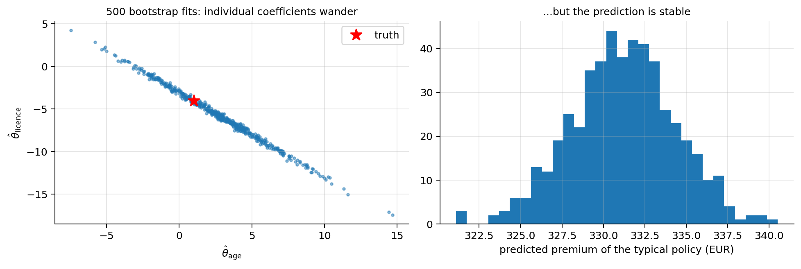
The correlation between age and licence years is 0.998, so both VIFs are about 218 (the two ways of computing them agree) and the condition number is 29.5, at the top of the “moderate” range: the VIFs are the clearer alarm here. The age and licence coefficients have standard errors of 3.3, larger than the true age effect itself; individually they are not significant (p = 0.42 and 0.085), and the age coefficient has the wrong sign in a sizeable share of the bootstrap resamples; yet jointly they are overwhelmingly significant and the prediction for a typical policy moves by only a few euros. The bootstrap points lie along a line: the data determine the combination “age minus licence years” poorly (the small-eigenvalue direction \(\approx(0.707, -0.707, 0)\)) and everything else well.
What to do (in order of preference):
- Nothing, if you only need predictions for inputs like the training ones: they are stable and the test error is unaffected (printed below). Do not interpret the individual coefficients.
- Use domain knowledge: drop or re-parametrise. Licence years are almost age minus 18, so either drop one of them, or replace the licence years by a feature that carries the new information, the age when the licence was obtained, \(\text{age} - \text{licence years}\). This is an invertible linear re-parametrisation of the same columns, so the fit and the predictions are identical; only the questions the coefficients answer change (“the effect of age for a fixed age at licence”).
- Centre before building polynomial terms and interactions. For a positive feature, \(x\) and \(x^2\) rise together; after centring, \(\mathrm{Cov}(x_c, x_c^2) = \mathbb{E}[x_c^3]\), which is 0 for a symmetric distribution. Since \((x - c)^2 = x^2 - 2cx + c^2\), the centred columns span the same space: same predictions, much smaller VIFs, and interpretable main effects.
- Principal-component regression (PCR): regress \(y\) on the first \(k\) principal components of the standardised features, i.e. drop the directions with tiny \(\lambda_k\), exactly where the variance explodes. Cost: components are hard to interpret, and PCA ignores \(y\), so a dropped direction may be the one that matters.
- Ridge regression (note 03): it adds \(\lambda\) to every eigenvalue, so the variance along \(\mathbf{v}_k\) becomes \(\sigma^2\lambda_k/(\lambda_k + \lambda)^2 \le \sigma^2/(4\lambda)\), bounded however small \(\lambda_k\) is, at the cost of a little bias.
from sklearn.pipeline import make_pipeline
from sklearn.preprocessing import StandardScaler
from sklearn.decomposition import PCA
from sklearn.linear_model import LinearRegression, Ridge
from sklearn.model_selection import cross_val_score
age_t, lic_t, mil_t, prem_t = make_policies(np.random.default_rng(12), 2000) # test policies
def test_rmse(cols_tr, cols_te):
th_ = ols_fit(np.c_[np.ones(200), cols_tr], prem)["theta"]
return np.sqrt(np.mean((prem_t - np.c_[np.ones(2000), cols_te] @ th_)**2))
print(f"test RMSE: all three features {test_rmse(Fp, np.c_[age_t, lic_t, mil_t]):.2f}, "
f"licence dropped {test_rmse(np.c_[age, mil], np.c_[age_t, mil_t]):.2f}")
F_rep = np.c_[age, age - lic, mil]; f_rep = ols_fit(np.c_[np.ones(200), F_rep], prem)
print("re-parametrised (age, age at licence, mileage): VIF", vif(F_rep).round(2), " coef", f_rep["theta"][1:].round(2),
" SE", f_rep["se"][1:].round(2), " same fitted values:", np.allclose(f_rep["fit"], fp["fit"]))
ac = age - age.mean()
print(f"polynomial in age: corr(age, age^2) = {np.corrcoef(age, age**2)[0, 1]:.3f}, VIF {vif(np.c_[age, age**2]).round(1)};"
f" centred: corr = {np.corrcoef(ac, ac**2)[0, 1]:.3f}, VIF {vif(np.c_[ac, ac**2]).round(2)}")
for k in [1, 2, 3]:
pcr = make_pipeline(StandardScaler(), PCA(n_components=k), LinearRegression())
print(f"PCR with {k} component(s): 5-fold CV RMSE = {-cross_val_score(pcr, Fp, prem, cv=5, scoring='neg_root_mean_squared_error').mean():.2f}")
Zp = StandardScaler().fit_transform(Fp)
boot_r = np.array([Ridge(alpha=20).fit(Zp[i], prem[i]).coef_ for i in rng_bs.integers(0, 200, (B, 200))])
boot_o = np.array([LinearRegression().fit(Zp[i], prem[i]).coef_ for i in rng_bs.integers(0, 200, (B, 200))])
print("bootstrap sd of the standardised coefficients (age, licence, mileage): OLS", boot_o.std(0).round(1), " Ridge", boot_r.std(0).round(1))test RMSE: all three features 40.68, licence dropped 41.04
re-parametrised (age, age at licence, mileage): VIF [1. 1. 1.] coef [-3.08 5.79 6.14] SE [0.23 3.34 0.55] same fitted values: True
polynomial in age: corr(age, age^2) = 0.993, VIF [73.8 73.8]; centred: corr = 0.187, VIF [1.04 1.04]
PCR with 1 component(s): 5-fold CV RMSE = 52.18
PCR with 2 component(s): 5-fold CV RMSE = 40.16
PCR with 3 component(s): 5-fold CV RMSE = 40.46
bootstrap sd of the standardised coefficients (age, licence, mileage): OLS [42.3 42.2 2.8] Ridge [1.6 1.7 2.5]Dropping a redundant feature costs almost nothing in test RMSE; the re-parametrisation gives VIFs of about 1 and the same fitted values; centring the polynomial removes nearly all of its collinearity; the first two principal components predict as well as all three (the third is the nearly constant age-minus-licence direction); and Ridge shrinks the bootstrap spread of the two collinear (standardised) coefficients from about 42 to below 2. Which one? If the goal is interpretation, domain knowledge (2) always comes first. If the goal is prediction, Ridge with \(\lambda\) chosen by cross-validation is the default.
15.6 Exogeneity and omitted-variable bias
What it says. \(\mathbb{E}[\varepsilon\mid\mathbf{X}] = 0\): whatever is not in the model averages to zero at every value of the features. It fails with:
- omitted variables that affect \(y\) and are correlated with included features (confounders);
- measurement error in the features;
- reverse causation or simultaneity (claims raise next year’s premium, and the premium changes who stays insured);
- selection on the outcome (only claims above the deductible are recorded).
Why it matters. Unbiasedness (14.2) used exactly this assumption. The omitted-variable bias formula: suppose the truth is \(\mathbf{y} = \mathbf{X}_1\boldsymbol{\beta}_1 + \mathbf{x}_2\beta_2 + \boldsymbol{\varepsilon}\) with \(\mathbb{E}[\boldsymbol{\varepsilon}\mid\mathbf{X}_1, \mathbf{x}_2] = \mathbf{0}\), but we fit \(\mathbf{y}\) on \(\mathbf{X}_1\) only:
\[ \begin{aligned} \hat{\boldsymbol{\beta}}_1 &= (\mathbf{X}_1^\top\mathbf{X}_1)^{-1}\mathbf{X}_1^\top\mathbf{y} && \text{the "short" regression}\\ &= \boldsymbol{\beta}_1 + (\mathbf{X}_1^\top\mathbf{X}_1)^{-1}\mathbf{X}_1^\top\mathbf{x}_2\,\beta_2 + (\mathbf{X}_1^\top\mathbf{X}_1)^{-1}\mathbf{X}_1^\top\boldsymbol{\varepsilon} && \text{substitute the truth, distribute}\\ \mathbb{E}[\hat{\boldsymbol{\beta}}_1] &= \boldsymbol{\beta}_1 + \boldsymbol{\delta}\,\beta_2,\qquad \boldsymbol{\delta} = (\mathbf{X}_1^\top\mathbf{X}_1)^{-1}\mathbf{X}_1^\top\mathbf{x}_2 . && \text{the noise term has mean zero} \end{aligned} \]
\(\boldsymbol{\delta}\) is the coefficient vector of the regression of the omitted \(\mathbf{x}_2\) on the included features. The bias \(\boldsymbol{\delta}\beta_2\) is non-zero exactly when the omitted variable matters (\(\beta_2 \ne 0\)) and is correlated with the included ones (\(\boldsymbol{\delta}\neq\mathbf{0}\)); with one included feature, \(\delta = \mathrm{Cov}(x_1, x_2)/\mathrm{Var}(x_1)\). The coefficient then measures the effect of \(x_1\) plus the effect of everything that moves together with \(x_1\). More data does not help: the bias does not shrink with \(m\). Measurement error biases towards zero: if we observe \(\tilde x = x + u\) with independent noise \(u\), the least-squares slope tends to \(\mathrm{Cov}(\tilde x, y)/\mathrm{Var}(\tilde x) = \beta\sigma_x^2/(\sigma_x^2 + \sigma_u^2)\) (because \(\mathrm{Cov}(x + u, \beta x + \varepsilon) = \beta\sigma_x^2\)), the attenuation factor.
Prediction vs causation. For predicting \(y\) on new data from the same process, the short model is perfectly legitimate: it is the best linear predictor given \(x_1\), using \(x_1\) as a proxy for the omitted \(x_2\). It fails when we intervene (change \(x_1\) without \(x_2\) moving with it, e.g. a pricing decision) or when the relation between \(x_1\) and \(x_2\) changes in deployment. Reading a coefficient as “what happens to \(y\) if we change \(x_j\)” needs exogeneity; predicting does not.
How to check. Not from the residuals. The normal equations force \(\mathbf{X}^\top\mathbf{e} = \mathbf{0}\): the residuals are uncorrelated with every included feature by construction, so the residual plot of a confounded model looks perfect. What helps: domain knowledge and a causal diagram (what affects both the feature and the outcome?), the stability of a coefficient when plausible controls are added (a big change reveals confounding), and designs that break the confounding: randomised experiments (A/B tests) or natural experiments and instrumental variables (beyond this course).
rng_o = np.random.default_rng(15); mo = 500
x1o = rng_o.normal(0, 1, mo); x2o = 0.8 * x1o + rng_o.normal(0, 0.6, mo) # x2 moves with x1
yo = 1 + 2 * x1o + 3 * x2o + rng_o.normal(0, 1, mo)
long_ = ols_fit(np.c_[np.ones(mo), x1o, x2o], yo); short_ = ols_fit(np.c_[np.ones(mo), x1o], yo)
delta = ols_fit(np.c_[np.ones(mo), x1o], x2o)["theta"][1] # regression of x2 on x1
print(f"long model : theta_1 = {long_['theta'][1]:.3f}, theta_2 = {long_['theta'][2]:.3f} (truth 2, 3)")
print(f"short model: theta_1 = {short_['theta'][1]:.3f}; long theta_1 + delta * long theta_2 = {long_['theta'][1] + delta * long_['theta'][2]:.3f} (delta = {delta:.3f})")
print(f"corr(short-model residuals, x1) = {np.corrcoef(short_['e'], x1o)[0, 1]:.1e} <- invisible in the residuals")
x1n = rng_o.normal(0, 1, 5000); x2n = 0.8 * x1n + rng_o.normal(0, 0.6, 5000); yn_o = 1 + 2 * x1n + 3 * x2n + rng_o.normal(0, 1, 5000)
print(f"test RMSE on new data from the same process: short {np.sqrt(np.mean((yn_o - short_['theta'][0] - short_['theta'][1] * x1n)**2)):.2f}, "
f"long {np.sqrt(np.mean((yn_o - np.c_[np.ones(5000), x1n, x2n] @ long_['theta'])**2)):.2f}")long model : theta_1 = 2.054, theta_2 = 2.969 (truth 2, 3)
short model: theta_1 = 4.405; long theta_1 + delta * long theta_2 = 4.405 (delta = 0.792)
corr(short-model residuals, x1) = 1.9e-15 <- invisible in the residuals
test RMSE on new data from the same process: short 2.06, long 0.99The short model’s slope, about 4.4 instead of 2, is \(2 + 0.8\times3\): the true effect plus the omitted effect carried by the correlation. (In sample the identity \(\hat\beta_{1,\text{short}} = \hat\beta_{1,\text{long}} + \hat\delta\,\hat\beta_{2,\text{long}}\) holds exactly: substitute \(\mathbf{y} = \mathbf{X}_1\hat{\boldsymbol{\beta}}_{1,\text{long}} + \mathbf{x}_2\hat\beta_{2,\text{long}} + \mathbf{e}_{\text{long}}\) in the short formula and use \(\mathbf{X}_1^\top\mathbf{e}_{\text{long}} = \mathbf{0}\).) Its residuals are uncorrelated with \(x_1\) to machine precision. It still predicts new data from the same process reasonably (worse than the long model, but without bias); what it gets wrong is the effect of changing \(x_1\) alone: it predicts \(+4.4\) where the truth is \(+2\).
What to do. Measure and include the confounders (anything that causes both the feature and the outcome); do not read coefficients causally without a design that supports it; for prediction, make sure the deployment data look like the training data; when the causal effect is the question, run an experiment. Regularisation does not help here, and Lasso may even drop a confounder (note 03).
15.7 Outliers, leverage and influence
What it says. Not an assumption of the model but a condition for a trustworthy fit: no single point, or a handful, determines the result. Three different notions:
- an outlier has an unusual \(y\) given its \(\mathbf{x}\) (a large residual);
- a high-leverage point has an unusual \(\mathbf{x}\) (far from the centre of the features);
- an influential point changes \(\hat{\boldsymbol{\theta}}\) a lot when removed. Roughly, influence = outlier × leverage.
Leverage. \(h_{ii} = [\mathbf{H}]_{ii} = (\mathbf{x}^{(i)})^\top(\mathbf{X}^\top\mathbf{X})^{-1}\mathbf{x}^{(i)}\). Since \(\hat{\mathbf{y}} = \mathbf{H}\mathbf{y}\), \(h_{ii} = \partial\hat y_i/\partial y_i\): how strongly point \(i\) pulls the fit towards itself. Properties:
- \(0 \le h_{ii} \le 1\). Proof: \(\mathbf{H}\) is symmetric and idempotent (14.4), so \(h_{ii} = [\mathbf{H}\mathbf{H}]_{ii} = \sum_k h_{ik}h_{ki} = \sum_k h_{ik}^2 = h_{ii}^2 + \sum_{k\ne i}h_{ik}^2 \ge h_{ii}^2\), hence \(h_{ii}(1 - h_{ii}) \ge 0\). \(\blacksquare\)
- \(\sum_i h_{ii} = \mathrm{tr}(\mathbf{H}) = n+1\) (14.4): the average leverage is \((n+1)/m\), and \(h_{ii} > 2(n+1)/m\) is the usual flag.
- One feature: \(h_{ii} = \frac1m + \frac{(x_i - \bar x)^2}{\sum_k(x_k - \bar x)^2}\) (the formula of 14.7).
- \(h_{ii} = 1\) forces \(\hat y_i = y_i\) whatever \(y_i\) is. For the three points, \(h = (5/6, 1/3, 5/6)\), average \(2/3 = (n+1)/m\).
Standardised residuals. \(\mathrm{Var}(e_i) = \sigma^2(1 - h_{ii})\) (14.4): high-leverage points have small residuals because the line is pulled towards them, so raw residuals hide them. Divide each residual by its own standard deviation: \(r_i = e_i/(\hat\sigma\sqrt{1-h_{ii}})\) (internally studentised). The externally studentised residual uses \(\hat\sigma_{(i)}\), the estimate of \(\sigma\) without point \(i\), so that an outlier does not inflate its own yardstick: \(t_i = e_i/(\hat\sigma_{(i)}\sqrt{1 - h_{ii}})\) with \(\hat\sigma_{(i)}^2 = \big[(m-p)\hat\sigma^2 - e_i^2/(1-h_{ii})\big]/(m-p-1)\) (an identity checked numerically below). Under the model \(t_i \sim t_{m-p-1}\), so \(|t_i| > 3\) is a flag (with \(m\) points, a few values beyond 2 are expected by chance).
Leaving one point out, without refitting. Let \(\hat{\boldsymbol{\theta}}_{(i)}\) be the fit without example \(i\). Removing a row changes \(\mathbf{X}^\top\mathbf{X}\) into \(\mathbf{X}^\top\mathbf{X} - \mathbf{x}_i\mathbf{x}_i^\top\) and \(\mathbf{X}^\top\mathbf{y}\) into \(\mathbf{X}^\top\mathbf{y} - \mathbf{x}_iy_i\) (write \(\mathbf{x}_i\) for \(\mathbf{x}^{(i)}\)). With \(\mathbf{M} = \mathbf{X}^\top\mathbf{X}\), \(\mathbf{c} = \mathbf{M}^{-1}\mathbf{x}_i\) and \(h = h_{ii} = \mathbf{x}_i^\top\mathbf{c}\), the Sherman–Morrison formula is
\[ (\mathbf{M} - \mathbf{x}_i\mathbf{x}_i^\top)^{-1} = \mathbf{M}^{-1} + \frac{\mathbf{c}\mathbf{c}^\top}{1 - h}. \]
Check: \((\mathbf{M} - \mathbf{x}_i\mathbf{x}_i^\top)(\mathbf{M}^{-1} + \frac{\mathbf{c}\mathbf{c}^\top}{1-h}) = \mathbf{I} + \frac{\mathbf{x}_i\mathbf{c}^\top}{1-h} - \mathbf{x}_i\mathbf{c}^\top - \frac{h\,\mathbf{x}_i\mathbf{c}^\top}{1-h} = \mathbf{I} + \mathbf{x}_i\mathbf{c}^\top\,\frac{1 - (1-h) - h}{1-h} = \mathbf{I}\), using \(\mathbf{M}\mathbf{c} = \mathbf{x}_i\), \(\mathbf{x}_i^\top\mathbf{M}^{-1} = \mathbf{c}^\top\) and \(\mathbf{x}_i^\top\mathbf{c} = h\). Then
\[ \begin{aligned} \hat{\boldsymbol{\theta}}_{(i)} &= \Big(\mathbf{M}^{-1} + \frac{\mathbf{c}\mathbf{c}^\top}{1-h}\Big)(\mathbf{X}^\top\mathbf{y} - \mathbf{x}_iy_i) && \text{normal equation without row } i\\ &= \hat{\boldsymbol{\theta}} - \mathbf{c}\,y_i + \frac{\mathbf{c}\,\hat y_i}{1-h} - \frac{\mathbf{c}\,h\,y_i}{1-h} && \mathbf{M}^{-1}\mathbf{X}^\top\mathbf{y} = \hat{\boldsymbol{\theta}},\ \mathbf{c}^\top\mathbf{X}^\top\mathbf{y} = \mathbf{x}_i^\top\hat{\boldsymbol{\theta}} = \hat y_i,\ \mathbf{c}^\top\mathbf{x}_i = h\\ &= \hat{\boldsymbol{\theta}} + \mathbf{c}\,\frac{-y_i(1-h) + \hat y_i - h\,y_i}{1-h} = \hat{\boldsymbol{\theta}} - \frac{(\mathbf{X}^\top\mathbf{X})^{-1}\mathbf{x}_i\,e_i}{1 - h_{ii}} . && \text{common denominator; } e_i = y_i - \hat y_i \end{aligned} \]
Two consequences. The leave-one-out residual is \(y_i - \mathbf{x}_i^\top\hat{\boldsymbol{\theta}}_{(i)} = e_i + \frac{h_{ii}e_i}{1-h_{ii}} = \frac{e_i}{1 - h_{ii}}\), so leave-one-out cross-validation of least squares costs one fit: \(\text{LOOCV-MSE} = \frac1m\sum_i\big(e_i/(1-h_{ii})\big)^2\) (the PRESS statistic). And Cook’s distance, the change of all fitted values when point \(i\) is removed, in units of \(p\,\hat\sigma^2\):
\[ \begin{aligned} D_i &= \frac{\lVert\mathbf{X}\hat{\boldsymbol{\theta}} - \mathbf{X}\hat{\boldsymbol{\theta}}_{(i)}\rVert^2}{p\,\hat\sigma^2} = \frac{(\hat{\boldsymbol{\theta}} - \hat{\boldsymbol{\theta}}_{(i)})^\top\mathbf{X}^\top\mathbf{X}(\hat{\boldsymbol{\theta}} - \hat{\boldsymbol{\theta}}_{(i)})}{p\,\hat\sigma^2} && \text{definition}\\ &= \frac{e_i^2}{(1-h_{ii})^2}\,\frac{\mathbf{x}_i^\top(\mathbf{X}^\top\mathbf{X})^{-1}\mathbf{X}^\top\mathbf{X}(\mathbf{X}^\top\mathbf{X})^{-1}\mathbf{x}_i}{p\,\hat\sigma^2} = \frac{e_i^2\,h_{ii}}{p\,\hat\sigma^2(1-h_{ii})^2} && \text{substitute the difference just derived}\\ &= \frac{r_i^2}{p}\cdot\frac{h_{ii}}{1 - h_{ii}} . && r_i^2 = e_i^2/(\hat\sigma^2(1-h_{ii})) \end{aligned} \]
\[ \boxed{D_i = \frac{r_i^2}{p}\cdot\frac{h_{ii}}{1-h_{ii}}}\qquad\text{(influence = squared standardised residual × leverage factor)} \]
Rules of thumb: \(D_i > 1\) is very influential, \(D_i > 4/m\) deserves a look.
How to check. Below, 30 clean points around \(y = 2 + 0.5x\) (\(x \in [0, 10]\), \(\sigma = 1\)) and three ways of adding a 31st point: A, an outlier in \(y\) in the middle of the \(x\) range; B, a point far out in \(x\) (\(x = 25\)) that lies on the line fitted to the other 30; C, a point at \(x = 25\) far below the line.
def influence(X, y):
f_ = ols_fit(X, y); p_ = X.shape[1]
r_std = f_["e"] / np.sqrt(f_["s2"] * (1 - f_["h"]))
return f_, r_std, r_std**2 / p_ * f_["h"] / (1 - f_["h"]) # fit, standardised residuals, Cook's D
rng_i = np.random.default_rng(13); mi = 30
xi = rng_i.uniform(0, 10, mi); yi = 2 + 0.5 * xi + rng_i.normal(0, 1, mi)
th_clean = ols_fit(np.c_[np.ones(mi), xi], yi)["theta"]
cases = {"A: outlier in y, middle x": (5.0, th_clean[0] + th_clean[1] * 5 + 8),
"B: high leverage, on the line": (25.0, th_clean[0] + th_clean[1] * 25),
"C: high leverage, off the line": (25.0, 2.0)}
fig, axes = plt.subplots(1, 3, figsize=(15, 3.6), sharey=True)
for ax, (name, (xa, ya)) in zip(axes, cases.items()):
xx, yy = np.r_[xi, xa], np.r_[yi, ya]; XX = np.c_[np.ones(mi + 1), xx]
fi, ri, Di = influence(XX, yy)
brute = [] # Cook's D by actually refitting without each point
for k in range(mi + 1):
keep = np.arange(mi + 1) != k; d = fi["theta"] - np.linalg.lstsq(XX[keep], yy[keep], rcond=None)[0]
brute.append(d @ XX.T @ XX @ d / (2 * fi["s2"]))
s2_out = ((mi + 1 - 2) * fi["s2"] - fi["e"][-1]**2 / (1 - fi["h"][-1])) / (mi + 1 - 3) # sigma^2 without the point
keep = np.arange(mi + 1) != mi; s2_brute = ols_fit(XX[keep], yy[keep])["s2"]
print(f"{name:31s}: slope {fi['theta'][1]:.3f} (clean {th_clean[1]:.3f}); h = {fi['h'][-1]:.3f} (flag > {2 * 2 / (mi + 1):.3f}),"
f" r = {ri[-1]:5.2f}, t = {fi['e'][-1] / np.sqrt(s2_out * (1 - fi['h'][-1])):6.2f}, Cook D = {Di[-1]:.2f}"
f" [formula vs refit: {np.abs(np.array(brute) - Di).max():.0e}; sigma_(i)^2 identity: {abs(s2_out - s2_brute):.0e}]")
ax.scatter(xi, yi, s=12, color="k"); ax.scatter([xa], [ya], s=60, color="C3", zorder=3)
gx = np.array([0, 26]); ax.plot(gx, th_clean[0] + th_clean[1] * gx, "k--", lw=1, label="fit without the red point")
ax.plot(gx, fi["theta"][0] + fi["theta"][1] * gx, "C3", lw=2, label="fit with it"); ax.set_title(name, fontsize=10)
ax.set_xlabel("$x$"); ax.legend(fontsize=8)
axes[0].set_ylabel("$y$"); plt.tight_layout(); plt.show()
Xc_, yc_ = np.c_[np.ones(mi), xi], yi # LOOCV for free
fc_ = ols_fit(Xc_, yc_)
loo_brute = [yc_[k] - Xc_[k] @ np.linalg.lstsq(np.delete(Xc_, k, 0), np.delete(yc_, k), rcond=None)[0] for k in range(mi)]
print(f"\nLOOCV MSE of the clean fit: shortcut {np.mean((fc_['e'] / (1 - fc_['h']))**2):.4f}, refitting 30 times {np.mean(np.square(loo_brute)):.4f}")A: outlier in y, middle x : slope 0.476 (clean 0.492); h = 0.034 (flag > 0.129), r = 4.69, t = 9.41, Cook D = 0.38 [formula vs refit: 3e-15; sigma_(i)^2 identity: 8e-16]
B: high leverage, on the line : slope 0.492 (clean 0.492); h = 0.541 (flag > 0.129), r = -0.00, t = -0.00, Cook D = 0.00 [formula vs refit: 8e-15; sigma_(i)^2 identity: 1e-16]
C: high leverage, off the line : slope 0.151 (clean 0.492); h = 0.541 (flag > 0.129), r = -4.78, t = -10.15, Cook D = 13.45 [formula vs refit: 9e-15; sigma_(i)^2 identity: 1e-15]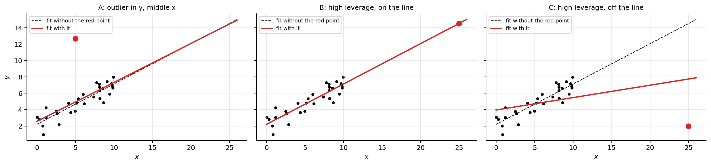
LOOCV MSE of the clean fit: shortcut 0.7589, refitting 30 times 0.7589A has a huge residual but low leverage: it shifts the line up a little and barely tilts it, with a moderate Cook’s distance. B has the largest possible leverage in this dataset, but it agrees with the other points, so its residual and its influence are zero (it even makes the slope more precise). C combines high leverage with a large residual: Cook’s distance far above 1, and the slope is dragged towards it. Note C’s raw residual looks smaller than it is because the line has moved towards it; the standardised residual corrects for that.
What to do.
- Check whether it is a data error: a typo, a unit mix-up (cents vs euros), a duplicated record, a bad join. Fix it.
- Ask whether it belongs to another population: a fleet policy among individual ones, a total-loss claim among repairs. Model it separately or add a feature that describes it.
- Use a robust loss when some gross errors are unavoidable. The Huber loss is quadratic for small residuals and linear for large ones, \[
\rho_\delta(r) = \begin{cases}\tfrac12 r^2 & |r|\le\delta\\ \delta|r| - \tfrac12\delta^2 & |r|>\delta\end{cases},\qquad \rho_\delta'(r) = \begin{cases} r & |r|\le\delta\\ \delta\,\mathrm{sign}(r) & |r|>\delta\end{cases},
\] so each point’s pull on the fit (its gradient) is capped at \(\delta\) instead of growing with the residual. scikit-learn’s
HuberRegressoralso estimates the scale of the residuals, so \(\delta\) (itsepsilon, default 1.35) is in units of that scale. Huber protects against outliers in \(y\) but not against bad high-leverage points like C; for those, methods with bounded influence such asRANSACRegressororTheilSenRegressorexist. - Never delete points blindly to improve the fit. If you exclude something, say so and report the fit with and without it.
- If the “outliers” are simply the long right tail of a skewed variable, transform it (log; section 16.1 for the target, note 03 for features).
from sklearn.linear_model import HuberRegressor
rng_u = np.random.default_rng(14); mu_ = 100
xu = rng_u.uniform(0, 10, mu_); yu = 2 + 0.5 * xu + rng_u.normal(0, 1, mu_)
bad = rng_u.choice(mu_, 10, replace=False); yu[bad] += 12 # 10 % gross errors in y
for name, model in [("OLS ", LinearRegression()), ("Huber", HuberRegressor())]:
model.fit(xu[:, None], yu)
print(f"{name}: intercept {model.intercept_:.2f}, slope {model.coef_[0]:.3f} (truth 2, 0.5)")OLS : intercept 3.64, slope 0.416 (truth 2, 0.5)
Huber: intercept 2.05, slope 0.516 (truth 2, 0.5)15.8 Extrapolation outside the training range
What it says. Predictions are only supported where there is data. Outside the range of the training features, or outside the region of their joint distribution, linearity is an untested assumption.
Why it matters. The prediction interval of 14.7 widens as \((x_0 - \bar x)^2\), but even that assumes the straight line holds out there; real relationships saturate or bend (repair costs vs vehicle age, dose and response). Hidden extrapolation is the multivariate trap: every feature is inside its own range, but the combination is not (a 30-year-old with 28 years of driving licence).
How to check. Compare the leverage of the new point, \(h_0 = \mathbf{x}_0^\top(\mathbf{X}^\top\mathbf{X})^{-1}\mathbf{x}_0\), with the training leverages: \(h_0 > \max_i h_{ii}\) means \(\mathbf{x}_0\) lies outside the ellipsoid that contains the data.
rng_e = np.random.default_rng(16); me = 60
xe = rng_e.uniform(0, 4, me); f_true = lambda t: 3 * np.log1p(t) # the truth bends
ye = f_true(xe) + rng_e.normal(0, 0.3, me)
fe = ols_fit(np.c_[np.ones(me), xe], ye); tq_e = stats.t.ppf(0.975, fe["df"])
grid_e = np.linspace(0, 12, 200); Ge = np.c_[np.ones(200), grid_e]
he = np.einsum("ij,jk,ik->i", Ge, fe["XtX_inv"], Ge); half_e = tq_e * np.sqrt(fe["s2"] * (1 + he))
x_far = np.array([1, 12.0]); h_far = x_far @ fe["XtX_inv"] @ x_far
print(f"x0 = 12: prediction {x_far @ fe['theta']:.2f} +- {tq_e * np.sqrt(fe['s2'] * (1 + h_far)):.2f}, truth {f_true(12):.2f};"
f" leverage h0 = {h_far:.2f} vs max training h = {fe['h'].max():.3f}")
x_hidden = np.array([1, 30, 28, 15.0]) # 30 years old, 28 years of licence, 15k km (policy data of 15.5)
print(f"hidden extrapolation: age 30 in [{age.min():.0f}, {age.max():.0f}], licence 28 in [{lic.min():.0f}, {lic.max():.0f}],"
f" but h0 = {x_hidden @ fp['XtX_inv'] @ x_hidden:.2f} vs max training h = {fp['h'].max():.3f}")
plt.figure(figsize=(7, 3.6))
plt.scatter(xe, ye, s=12, color="k"); plt.plot(grid_e, f_true(grid_e), "g--", lw=1.5, label="truth")
plt.plot(grid_e, Ge @ fe["theta"], "C3", lw=2, label="linear fit")
plt.fill_between(grid_e, Ge @ fe["theta"] - half_e, Ge @ fe["theta"] + half_e, color="C3", alpha=0.15, label="95% prediction interval")
plt.axvspan(4, 12, color="gray", alpha=0.1); plt.xlabel("$x$"); plt.ylabel("$y$"); plt.legend(fontsize=8)
plt.title("Outside the data (grey) the interval is honest only if the line still holds"); plt.tight_layout(); plt.show()x0 = 12: prediction 14.32 +- 1.15, truth 7.69; leverage h0 = 1.16 vs max training h = 0.068
hidden extrapolation: age 30 in [26, 69], licence 28 in [5, 50], but h0 = 2.10 vs max training h = 0.076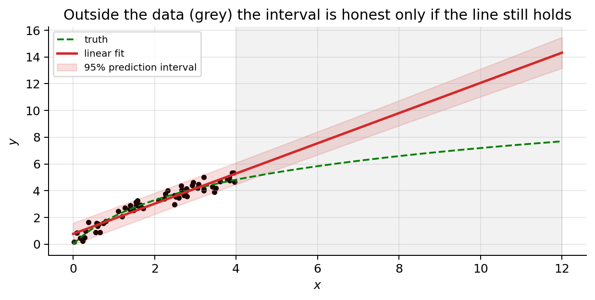
The straight line fitted on \([0, 4]\) predicts \(14.32 \pm 1.15\) at \(x_0 = 12\) while the truth is \(7.69\): the prediction interval is honest about the extra uncertainty of the line, not about the line being wrong. The leverage flags the problem: \(h_0 = 1.16\), seventeen times the largest training leverage. The hypothetical policy (age 30, 28 years of licence) passes both range checks but has \(h_0 = 2.10\) against a training maximum of \(0.076\).
What to do. Detect out-of-domain inputs in production (leverage or the Mahalanobis distance to the training data) and flag, clip or refuse them; collect data in the new region; use domain knowledge to constrain the shape (a log, a monotone or saturating form); know how your model extrapolates (a line keeps going, a tree predicts a constant beyond the data: neither is right by default).
16. What to do when…
| Symptom | How to detect it | Why it happens | What to do | Section |
|---|---|---|---|---|
| \(J\) goes up during gradient descent | plot \(J\) per iteration | \(\alpha > 2/\lambda_{\max}\) | smaller \(\alpha\); standardise | 6 |
| gradient descent is very slow | \(J\) decreases in a long tail | large condition number | standardise; normal equation or Newton | 6, 9 |
| “singular matrix”, or infinitely many solutions | rank of \(\mathbf{X}\) below \(n+1\) | dummy trap, duplicated columns, \(m < n+1\) | drop a column, lstsq, Ridge |
7, 11, 15.5 |
| coefficients unstable or with the “wrong” sign | bootstrap, VIF | collinearity, or confounding | re-parametrise, Ridge; add confounders | 15.5, 15.6 |
| residuals show a curve | residuals vs fitted, component + residual | wrong functional form | transforms, interactions | 15.1 |
| residuals fan out | scale–location, Breusch–Pagan | heteroscedasticity | \(\log y\), WLS, HC standard errors | 15.3 |
| residuals come in runs | residuals vs time, Durbin–Watson | dependent errors | lags, GLS, grouped or time-based CV | 15.2 |
| one point changes everything | Cook’s distance | a high-leverage outlier | check data; Huber; report both fits | 15.7 |
| great training \(R^2\), poor validation | train vs validation error | overfitting | fewer features, regularisation | 12, note 03 |
| skewed target (claim costs) | histogram of \(y\), residuals | multiplicative noise | \(\log y\) and back-transform with smearing | 16.1 |
| predictions far outside the data | leverage of the new point | extrapolation | flag; constrain; collect data | 15.8 |
| need a range, not a number | — | — | prediction interval; empirical if the noise is not normal | 14.7, 15.4 |
16.1 What to do when the target is skewed (claim costs)
Symptom. Claim costs, prices and incomes have a long right tail: most values are small, a few are huge. A least-squares fit on the raw \(y\) has heteroscedastic residuals (15.3), is dominated by the big claims (15.7) and can predict negative costs.
Detect. A histogram of \(y\) (or of the residuals) with a long right tail; a funnel in the residual plot; a Box–Cox \(\hat\lambda\) near 0.
Why the log helps, and the trap. If \(y = e^{\boldsymbol{\theta}^\top\mathbf{x} + \varepsilon}\) with \(\varepsilon \sim \mathcal{N}(0, \sigma^2)\) (log-normal costs), then \(\log y = \boldsymbol{\theta}^\top\mathbf{x} + \varepsilon\) satisfies every assumption of section 14, and \(e^{\theta_j} - 1\) is the relative change of the typical cost per unit of \(x_j\). But converting a prediction back with \(e^{\hat y}\) gives the median, not the mean:
\[ \begin{aligned} \mathbb{E}[y\mid\mathbf{x}] &= e^{\boldsymbol{\theta}^\top\mathbf{x}}\;\mathbb{E}[e^{\varepsilon}] && e^{a + \varepsilon} = e^a e^{\varepsilon}\\ \mathbb{E}[e^{\varepsilon}] &= \int e^{t}\,\tfrac{1}{\sqrt{2\pi}\sigma}e^{-t^2/(2\sigma^2)}\,dt = e^{\sigma^2/2}\int \tfrac{1}{\sqrt{2\pi}\sigma}e^{-(t - \sigma^2)^2/(2\sigma^2)}\,dt = e^{\sigma^2/2} && \text{complete the square: } t - \tfrac{t^2}{2\sigma^2} = \tfrac{\sigma^2}{2} - \tfrac{(t-\sigma^2)^2}{2\sigma^2}\\ \text{while}\quad P\big(y \le e^{\boldsymbol{\theta}^\top\mathbf{x}}\big) &= P(\varepsilon \le 0) = \tfrac12 . && e^{\boldsymbol{\theta}^\top\mathbf{x}} \text{ is the median} \end{aligned} \]
So \(e^{\hat y}\) underestimates the expected cost by the factor \(e^{-\sigma^2/2}\), and a reserve or a premium built on it is systematically too low.
What to do. Multiply by \(e^{\hat\sigma^2/2}\) (if the log-residuals are normal), or by Duan’s smearing factor \(\frac1m\sum_i e^{e_i}\) (the average of the exponentiated residuals, which needs no normality). Alternatively, fit a GLM with a log link (Gamma or Tweedie regression, note 02b; scikit-learn’s GammaRegressor, TweedieRegressor), which models the mean directly.
rng_c16 = np.random.default_rng(17); mc = 2000; s_c = 0.8
def claims(rng_, m_):
a, b = rng_.normal(0, 1, m_), rng_.uniform(0, 1, m_)
return np.c_[np.ones(m_), a, b], np.exp(6 + 0.4 * a + 0.5 * b + rng_.normal(0, s_c, m_))
Xc16, yc16 = claims(rng_c16, mc); Xt16, yt16 = claims(rng_c16, mc) # train / test portfolios
flog = ols_fit(Xc16, np.log(yc16)); naive = np.exp(Xt16 @ flog["theta"])
smear = np.mean(np.exp(flog["e"]))
raw = Xt16 @ ols_fit(Xc16, yc16)["theta"]
print(f"total cost of the test portfolio : {yt16.sum():12,.0f}")
print(f"log model, naive exp(y_hat) : {naive.sum():12,.0f} (share of claims below it: {np.mean(yt16 < naive):.0%}: a median)")
print(f"log model x smearing ({smear:.3f}) : {smear * naive.sum():12,.0f} (exp(sigma_hat^2/2) = {np.exp(flog['s2'] / 2):.3f}, true {np.exp(s_c**2 / 2):.3f})")
print(f"OLS on raw y : {raw.sum():12,.0f} (but {np.mean(raw < 0):.1%} of the predicted costs are negative)")total cost of the test portfolio : 1,549,410
log model, naive exp(y_hat) : 1,151,799 (share of claims below it: 52%: a median)
log model x smearing (1.371) : 1,578,782 (exp(sigma_hat^2/2) = 1.376, true 1.377)
OLS on raw y : 1,583,100 (but 0.9% of the predicted costs are negative)The naive back-transform misses about a quarter of the total cost; the smearing factor recovers it. Least squares on the raw costs gets the total roughly right (with an intercept, the average prediction equals the average training cost), but it predicts impossible negative costs for some policies and its per-policy errors are driven by the largest claims.
Summary
- Model: \(h_{\boldsymbol{\theta}}(\mathbf{x}) = \boldsymbol{\theta}^\top\mathbf{x}\); loss: \(J(\boldsymbol{\theta}) = \frac{1}{2m}\lVert\mathbf{X}\boldsymbol{\theta}-\mathbf{y}\rVert^2\).
- Gradient: \(\nabla J = \frac{1}{m}\mathbf{X}^\top(\mathbf{X}\boldsymbol{\theta}-\mathbf{y})\); batch GD: \(\boldsymbol{\theta}\leftarrow\boldsymbol{\theta}-\alpha\nabla J\), which converges iff \(0<\alpha<2/\lambda_{\max}(\frac1m\mathbf{X}^\top\mathbf{X})\); standardise features to make it fast.
- Closed form: \(\boldsymbol{\theta}^* = (\mathbf{X}^\top\mathbf{X})^{-1}\mathbf{X}^\top\mathbf{y}\) (columns of \(\mathbf{X}\) must be independent); it is also one Newton step from anywhere.
- \(J\) is convex (Hessian \(\frac1m\mathbf{X}^\top\mathbf{X}\) is PSD): any zero-gradient point is the global minimum. Least squares = MLE under i.i.d. Gaussian noise.
- Features: transformations and interactions keep the model linear in \(\boldsymbol{\theta}\); ordinal vs one-hot encoding (\(C-1\) dummies with an intercept); standardise with training statistics.
- Report RMSE/MAE (in the units of \(y\)) and \(R^2\) on held-out data, against a baseline; check the residuals.
- Under \(\mathbb{E}[\boldsymbol{\varepsilon}\mid\mathbf{X}]=\mathbf{0}\) and \(\mathrm{Cov}(\boldsymbol{\varepsilon}) = \sigma^2\mathbf{I}\): \(\hat{\boldsymbol{\theta}}\) is unbiased with \(\mathrm{Cov}(\hat{\boldsymbol{\theta}}) = \sigma^2(\mathbf{X}^\top\mathbf{X})^{-1}\), \(\hat\sigma^2 = \text{SSE}/(m-n-1)\), and OLS is BLUE (Gauss–Markov). With normal noise: \(t\) intervals \(\hat\theta_j \pm t\,\text{SE}_j\) and prediction intervals \(\hat y_0 \pm t\,\hat\sigma\sqrt{1+h_0}\).
- Assumptions, checks, remedies: linearity (residual and component-plus-residual plots → transforms); independence (Durbin–Watson → lags, GLS, grouped CV); constant variance (Breusch–Pagan → log, WLS, HC SEs); normality (Q–Q → only matters for small-sample and prediction intervals); collinearity (VIF, condition number → re-parametrise, centre, PCR, Ridge); exogeneity (not testable from residuals → confounders, experiments); influence (leverage, Cook’s distance → check data, Huber); extrapolation (leverage of the new point).